The Crater-Poor Centre of South Pole–Aitken
A heat source beneath the far side, opposite the near-side openings, erased the craters of the basin's centre
Craters are the Moon’s record of time. A surface collects craters for as long as it stands open to the sky, and loses them only if something erases or reworks it; the longer a surface has lasted, the more craters it holds. (Current science attributes the craters to bodies from space; in this series they were made by material thrown out from the young Earth that returned and landed on the Moon’s shell, Paper 6. Either way, an older surface holds more craters.) South Pole–Aitken (SPA), on the far side — the side never seen from the Earth — is the largest, deepest and oldest basin on the Moon, and it should hold one of the fullest records. Taken as a whole it is somewhat poorer in craters than the rest of the Moon. But its centre is far poorer. Counting craters in rings outward from the middle of the basin, on ground cleaned of the lava plains and of the 34 maria of this series (the dark plains of the near side and the openings beneath them, Paper 5), the count rises steadily from the centre to the rim: the central region holds only about half of the craters found just outside the basin. The place where craters are fewest — which we call the minimum — lies about 270 km north-north-east of the basin’s centre, on the meridian of the point exactly opposite Serenitatis, a large basin of the near side (the point exactly opposite a place, through the Moon’s centre, is its antipode). The craters of 20–40 km are missing most, not the smallest; and the craters that remain are shallower than those of the belt around the rim, while their rims stand high: the difference lies in their floors, not in their rims. That is the pattern of craters whose floors crept back up — relaxed — over softened ground, not of craters worn down or filled from above.
We propose that the centre of SPA records a heat source beneath the far side — the burner — on the side of the Moon opposite the openings of the near side. In this series the young Moon was built while still attached to the Earth, from material of the Earth rising through openings on its near side; the burner is the heat that gathered beneath the far side opposite those openings and warmed the ground above it from below. It had two exits, named after the near-side openings they face: Imbrium, the main one, and Serenitatis, the secondary. It worked while the body was attached to the Earth, and calmed as the flattening relaxed, before the release; at release the Moon was round and its outer shell rigid (Paper 2 §B.7). The heat came from below and reached the whole region, its thick part and its thin part alike, and melted both. Pushed and heated from below, the region rose into a dome and its softened crust slid outward; volatile and also less-volatile material was driven off, and the layers of returned material were cooked and compacted. Iron-bearing material from the Earth’s interior reached many places in the young Moon, the base of SPA among them; there it was heated and cooled in place, and as other materials left, the iron that remained was concentrated — the dense mass beneath the south of the region. When the heat calmed, the dome cooled, contracted and collapsed into the deep basin seen today. The dome lies south of both exits: the position of the pear-shaped connection to the Earth and the forces of the Earth’s rotation carried the heat out south of the point opposite, and the rounding of the elongated body — its change, while still attached, from a flattened figure to a sphere (Paper 7) — enlarged the distance, from 17–21° to the 24–29° of today. A change of the Earth’s axis after the separation may also make SPA appear out of line with the burner; the axes are left for future work.
The paper sets out seventeen anomalies of SPA, each in six steps, and five studies of our own. Of the seventeen anomalies, science explains six, explains nine in part, one with difficulty and one not at all; the model fits sixteen, and one in part, which the isotopes will decide. Several independent records agree. The Chang’e-6 samples, some 210 km from the minimum, show a mantle that lost its volatiles to heating, poorer in oxygen than beneath the near side, with melts spanning some two billion years. The magnetism is erased at the centre and strong on the trailing side — on the same side as the thorium crescent, though not in the same place (the magnetic peaks lie some 8° north of the thorium centre). The crust that slid off the dome lies in two rings of thickened crust, an outer one thick to the east and missing to the west, and an inner one at the edge of the dome.
Its central prediction is that the Moon contains almost no material from outside the Earth–Moon system: at most tiny amounts — fine grains of space dust later drawn in by the Moon’s gravity onto the loose surface layer, and perhaps one or two meteorites landed over four billion years. Two ancient norites from SPA — crystalline material that solidified slowly from melt at depth, dated to 4.25 billion years — carry small grains of iron–nickel metal. Science reads them as remains of the body that struck; the model reads them as iron from the Earth’s interior. The isotopes of these metal grains — the proportions of slightly different atoms of the same element, which differ between material formed in different parts of the early solar system — show where they came from. A simple mirror image of the near-side basins does not reproduce the basin’s shape, and that negative result is kept. All positions are given as the Moon faces the Earth today.
The claim. The crater-poor centre of South Pole–Aitken records a heat source beneath the far side — the burner — on the side of the Moon opposite the openings of the near side. It worked while the body was attached, and calmed as the flattening relaxed, before release; at release the body was round and its shell rigid (Paper 2 §B.7). It had two exits: Imbrium, the main one, and Serenitatis, the secondary. The heat came from below and melted the region, its thick part and its thin part alike: the region rose into a dome and its crust slid outward; volatile and also less-volatile material evaporated; the layers of returned material were cooked and compacted; iron-bearing material from the Earth’s interior came to the base of the basin and was concentrated there as other materials left. When the heat calmed, the dome cooled and collapsed into the basin. The dome lies south of both exits, a direction set by the pear and the rotation and enlarged by the rounding (C.4).
The numbers. Within 10° of the basin’s centre, on ground cleaned of the lava plains, the 34 maria and a halo of 200 km around each: 126 craters of 20 km and more per million km², 0.51 of the 248 just outside the rim — the centre keeps about half the record of the ground beside it. The minimum: 45.4°S, 197.9°E, about 270 km from the nominal centre. Craters of 40–80 km in the central 20°: 18% shallower than in the belt outside the rim (4–33%), on the cleaned ground; their rims stand higher than in a matched control (rim height scaled to crater size: 1.35 against 0.92) — shallow floors under high rims, the mark of relaxation rather than wear. Beneath SPA: against beneath the near side. measures how much oxygen was available when the material formed, against the reference at which iron metal and iron oxide coexist; each unit lower means about ten times less oxygen, so the mantle beneath SPA is the more reduced, as strong heating from below would leave it. Around it: a thickening of the crust of 3.8–5.7 km at 50–55° from the centre, thick to the east and missing to the west, and an inner ring at the edge of the dome — the crust that slid off the dome.
What it requires. (1) A physical link carrying heat from the covered openings to the region opposite them, along a straight axis, concentrated by the rotation. (2) Heat enough to relax craters of 40–80 km by about a fifth within the attached period. That period lasted at least about years (Paper 3) — the bound used for the viscosity estimate — and in the model about 600 Myr in all, from the start of the bulge to the release at 3.873 Ga. Viscosity is a material’s resistance to slow flow: the lower it is, the faster a crater floor creeps back up. The requirement is an effective viscosity of about – Pa s or less. The ground that relaxed is not dry ground but returned material saturated with water, laid down layer upon layer while the body was attached; its viscosity lies far below that bound, so the requirement is met with room to spare. (3) The material that reached the base of the basin carried metal. At that time the Earth had not much of a mantle and not really a core — its interior was fairly mixed — and iron-bearing material rose to the Moon and also to the base of SPA; oxidised silicate alone would have oxidised the basin rather than reduced it. (4) The effective potential barrier (the energy per kilogram that material must gain to cross from the Earth through the connection to the far side, against gravity and the rotation) and the reduced base pressure computed for a continuous body of the shape of Paper 3 (Part D). (5) The Moon has not turned on itself since it separated from the Earth. The centre of the contact area (24.1°N, 335.2°E, C.3) is the tip of the pear, which stood at about 22–24°N while the body was attached (C.4); it lies where the pear placed it, and no turning of the Moon is needed to place it. (6) The heat left the far side south of the point opposite, carried by the horizontal push inside the rotating pear, and the rounding of the elongated body enlarged that separation (C.4); a change of the Earth’s axis after the separation may add to it (future work). All positions here are in today’s frame.
The requirements of the model, and what would test it, are collected in Paper 11 (The Requirements).
The environment. The quantities below fix where the basin is, how the craters are counted, and which points on the near side the far side is compared with. SPA centre 53°S, 191°E; diameter 2,400 km as a circle of 39.57°; ellipse km (Garrick-Bethell & Zuber 2009). Ratio base: 1.00 = the ring 39.57–50° just outside the rim; every crater density in the paper is divided by the density of this ring, so a value of 0.51 means about half of it. Catalogues: Robbins (2019), craters of 20 km and more (6,973) and of 40 km and more (2,329); Wang et al. (2021) for depths. Mask — the ground removed before counting, because young lava plains have lost their old craters for a reason that is not in question here: the LROC mare polygons, the 34 maria of Paper 5 (the core of the feed dome beneath each) and a halo of 200 km around each. The openings: Imbrium 37°N, 341.5°E; Serenitatis 25.4°N, 18.8°E (antipodes 37°S, 161.5°E and 25.4°S, 198.8°E). Chang’e-6 landing site 41.625°S, 153.978°W (206.022°E). The release state of the series — an Earth day of 5.77 h and a corotation line at 16,400 km (Paper 2, §B.1) — enters B9 and Part D. The corotation line is the distance at which a body turning once with each Earth day already moves at the speed of a free orbit; the Moon began to separate when its centre of mass reached it, and was released about 210 km beyond it, when a little more than half of it had crossed, pulled outward with force while the contact resisted little.
Introduction — the basin and its enigma
This part introduces the basin (A.1), states what is strange about it (A.2), summarises how science reads it (A.3) and where that reading falls short (A.4), and then sets out the process this paper proposes (A.5) and how the measurements of the later parts fit it (A.6).
A.1The basin
On the far side of the Moon, out of sight from the Earth, lies the largest basin on its surface. A basin is a broad, roughly circular depression, much wider than it is deep, ringed by raised ground. This one stretches from the south pole almost to the crater Aitken, some 17° south of the equator, and takes its name from those two ends: South Pole–Aitken, or SPA. It is roughly 2,400 km long and 2,050 km wide — about the distance from Paris to Moscow, and more than a fifth of the way around the Moon — and its floor lies 6–8 km below the surrounding highlands, the deepest ground on the Moon. It is also the oldest large basin that can still be recognised: samples returned from inside it date its formation to about 4.25 billion years ago, when the Moon was only a few hundred million years old.
A basin this large reaches deep. Its floor exposes material that lies buried elsewhere, and three spacecraft have gone there for that reason. China’s Chang’e-4 landed on its floor in 2019, in the crater Von Kármán, the first landing on the far side; Chang’e-6 collected the first samples from the far side in 2024, from the Apollo basin in the north-east of SPA; and the south polar region on its rim is the target of the coming crewed missions. Figure 1 places the basin and the points this paper uses.
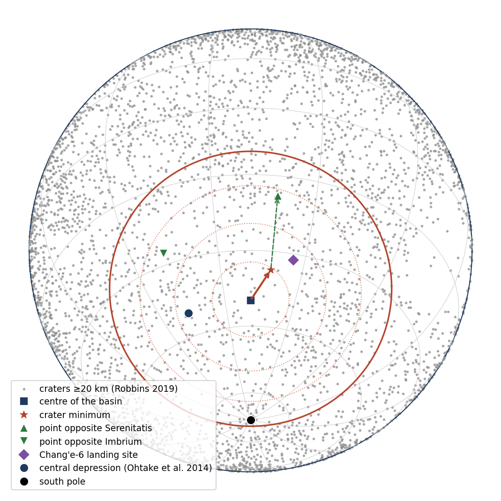
A.2The enigma
Craters are the Moon’s clock. With no air, no water and no weather to wear them away, craters on the Moon accumulate for as long as a surface stands; counting them per unit area gives the age of a surface relative to its neighbours, and a surface poorer in craters than its surroundings is younger, or was reworked. A surface as old as that of South Pole–Aitken should be crowded with craters: it has stood open to the sky for over four billion years. Its centre is not. When the craters are counted in rings outward from the middle of the basin, the count is lowest at the centre and rises toward the rim; the centre holds only about half of the craters found just outside the basin, and the point where craters are fewest — the minimum — lies some 270 km to the north-north-east of the middle. The craters that remain there are shallower than those of the belt around the rim, although their rims stand high. This is the enigma of the paper: the oldest basin has a centre that keeps the record of a young surface, and keeps it in shallow craters.
And the crater record is not the only thing that sets the basin apart. It is the deepest region of the Moon; its crust is thin and is ringed by thickened crust; its floor is rich in iron and thorium (a radioactive element that gathers in the last fractions of a melt), yet it holds little visible lava; a dense mass lies deep beneath it; the mantle under it has lost its volatile elements (those that evaporate easily, such as potassium) and is poor in oxygen; melt rose there for some two billion years; and the strongest crustal magnetism of the Moon gathers on its margins. The paper asks whether one process made them all.
A.3What science says about it
South Pole–Aitken is held to be the scar of a giant impact about 4.25 billion years ago. The impact is thought to have struck obliquely — from the north, in most readings, or toward the south (Andrews-Hanna et al. 2025) — to have excavated deep into the crust and perhaps into the upper mantle, to have thrown a thick blanket of ejecta around the basin, and to have left a sheet of melt that separated into layers as it cooled. The heat of the impact, the iron of the impactor and the volcanism that followed are each invoked for one or more of the basin’s features. Each anomaly thus has its own explanation; the crater deficit of the centre has none that is generally accepted.
A.4 Where the standard reading falls short
The standard reading explains each feature of the basin on its own terms, and several of them well. Taken together, and set against the measurements now available, it leaves six things unexplained or strained.
The crater deficit. A basin reset by one impact should hold an even, lower density across its whole floor: the impact wipes the floor clean at one moment, and the whole floor then collects craters at the same rate. The deficit is instead concentrated in the centre, rises steadily toward the rim, and grows stronger as the lava plains and younger basins are removed (B1a–B1d). That last point matters: the deficit is not made by lava that covered the centre, since removing the lava makes it sharper, not weaker. No accepted explanation exists for it.
Its position and its sizes. The minimum lies some 270 km north-north-east of the basin’s centre, and the deficit is size-selective: craters of 20–40 km are missing most, those of 10–20 km hardly at all (B1e, B1h). A younger surface lacks craters of every size; burial removes the small ones first, since a layer that fills a small crater only blurs a large one. Neither pattern fits: here the middle sizes are missing, while the small ones are nearly all present.
Little visible lava. The deepest basin on the Moon, with the thinnest crust, should have favoured volcanism, since melt from below has the shortest way to the surface there; yet only about 4% of it is mare, against 30% of the near side (B8; an earlier version gave 32%). This is a known puzzle.
The ring of thick crust. Ejecta from an oblique impact would pile up down-range, giving a north–south asymmetry. The ring around SPA is asymmetric east–west, and its unevenness follows another pattern altogether (B4).
The duration. The dated melts at the site span some two billion years (B15). A single impact must be followed by separate, later episodes to account for it. In the model the span is the cooling of the Moon’s interior and core, which took a long time; the mark of South Pole–Aitken itself was made by the Earth’s heat while the body was attached.
The magnetism. Converging ejecta and impactor iron explain strong fields opposite the large near-side basins, but give no reason for the field to be weak at the crater minimum, as it is (B16).
Each gap may be answered on its own. The question is whether they share one cause.
A.5The LEF mechanism, in outline
We propose a single process, told here in its order and without its detail.
The setting. In this series the young Moon was built from material of the Earth, rising through openings on its near side — the maria (Paper 5); a mare is an opening over a feed dome, through which material climbed from the Earth into the growing body. The body stood on the tip of a long extension of the Earth’s own material, the pear, and turned with the Earth until its release (Papers 2–4).
The burner. On the far side, opposite those openings, a heat source worked for a long time: the burner. In plain words, the burner is heat from the Earth’s interior that travelled through the attached body along the line of the openings and gathered beneath the far side, where it warmed the ground from below, as a flame warms the base of a pot. It had two exits: Imbrium, the main burner, and Serenitatis, the secondary; it worked while the body was attached and calmed as the flattening relaxed, before the release. SPA itself was not an opening. In the middle of the region lay an ordinary, large mare — an opening — which ejected material; it was later heated together with the whole region, cooked and erased; the ages of the site span the whole of the construction (B15), and much of its lava lies buried (B9).
Where it lay. At the time of the rounding it lay near the equator of then, on the slope of the far tip of the elongated body: the part of the body farthest beyond the corotation radius, where the rotation flung material outward. (The corotation radius is the distance from the Earth’s centre at which a body turning with the Earth moves at the speed of a free orbit; beyond it, ground still forced to turn with the Earth is pulled outward, as a child on a roundabout feels pushed out more the farther from the middle he sits.) At the burner’s time, on the flattened figure, SPA lay about 27° from that far tip — the point opposite the centre of the contact area (C.3); on the sphere of today the same separation reads about 39.5° (to be measured in future work; B5). (An earlier version measured this separation from the point opposite the old reference point 23°N, 320°E; its values are given once in B5.) The difference is the change from the flattened figure to the sphere, not a motion of SPA over the surface.
Antipodal to the openings. SPA is antipodal to the openings of the near side — its minimum lies on the meridian of the antipode of Serenitatis — and not to a single point of attachment. An antipodal relation is kept through the rotation and through the rounding alike: turning the whole body, or rounding it about its centre, carries a point and its opposite together, so a pair that faced each other through the centre still does.
Heat, dome, collapse. The heat came from below and reached the whole region, its thick part and its thin part alike, and melted both. The region, pushed and heated from below, rose into a dome, and its softened crust slid outward to the sides; volatile and also less-volatile material was driven off; the layers of returned material were cooked and compacted; iron-bearing material from the Earth’s interior came up to the base of the region and was concentrated there as other materials left; and the craters on it were erased or relaxed. When the heat calmed, the dome cooled, contracted and collapsed into the deep basin seen today — as a soufflé, raised by heat, sinks below its rim when it leaves the oven — and the craters formed afterwards landed on compacted ground. This is why the centre is both deep and poor in craters: the same heat that raised and then dropped the ground erased the record on it.
The southward direction. The dome lies south of both exits: the position of the pear and the forces of the rotation sent the heat south of the point opposite, and the rounding of the elongated body (Paper 7) enlarged the distance (C.3, C.4). The rounding took place while the body was attached; at release the Moon was round and its outer shell rigid (Paper 2 §B.7).
The frame. The Moon did not turn on itself after the separation: the centre of the contact area lies where the tip of the pear placed it, at about 22–24°N. The Earth’s axis may have changed: the positions in this paper are given in today’s frame, and the frame of then is left for future work. In the series, Paper 6 leaves the origin of SPA open, Paper 7 uses SPA as a control, and Paper 11 warns against using SPA alone to test the north–south asymmetry; this paper takes it up.
A.6How it fits what is found
Part B takes the anomalies one by one: for each, the LEF reading — the arm of the process that bears on it — and what it expects, and then what is seen. In outline, the measurements meet the expectations of the LEF reading in the following way.
The features are linked in place: the crater minimum, the unusual floor and the Chang’e-6 site lie in the centre of the basin and its north; the thinnest crust, the lowest ground and the dense mass lie in its south (all the centres on one map: Figure C.1). They are linked in direction: the deficit and its poorest sectors face the antipode of Serenitatis. They are linked in time: the mantle beneath was dried and reduced as strong heat from below would leave it, and the dated melts record the long cooling that followed. And the crust around the basin is thickened where the rounding of the young Moon compressed the surface and thinned where it stretched it. A single impact would set each of these features by its own path; the burner sets them together, which is why they line up.
Of the seventeen anomalies, science explains six fully, nine in part, one with difficulty and one — the crater record — not at all; the model fits sixteen, and one in part, awaiting the isotopes that will decide it (B18).
The anomalies of SPA
Part A set out the claim of this paper: that the centre of South Pole–Aitken (SPA) records a heat source beneath the far side — the burner — with two exits, Imbrium the main one and Serenitatis the secondary, which worked while the young Moon was still attached to the Earth and calmed as the flattening relaxed, before the release. Part B now turns from the claim to the evidence. It asks, feature by feature, what is actually measured in SPA, and whether that measurement is better told by the accepted reading of the basin or by the process of the model.
South Pole–Aitken differs from the rest of the Moon in many ways. This part takes them one by one, each in six steps: the anomaly, what was measured and by whom; the puzzle; what science says; where science falls short, closed by its verdict — explains, explains partly, explains with difficulty, or does not explain; what the model says, the arm of the process that bears on it and what it predicts; and how the measurements fit the model, closed by its verdict — fits, fits partly, or open. Each verdict stands in its own box: the boxes of science make no comparison with the model, and those of the model none with science. Where the paper measured the anomaly itself, a study in seven steps follows (Studies 1–5). The first anomaly is the crater record.
How to read the six steps. The order is the order in which a careful reader would want to meet the evidence. Step 1 states only what is measured, with its source, before any reading of it. Step 2 says in one or two sentences why the measurement is strange. Step 3 gives the accepted explanation as the literature gives it, and Step 4 sets that explanation against the measurement, often in a small table of “what it predicts” against “what is found”. Only then does Step 5 give the model’s account, and Step 6 sets the same measurement against it. The two verdicts are kept apart on purpose: each answers the question “does this explanation, on its own, account for what is measured?”, so that a reader can judge each one without having to accept the other. The verdicts of all the anomalies are gathered in one table in B18. Where this paper made the measurement itself rather than quoting it, the six steps are followed by a study laid out in the seven steps of a research report (question, background, hypothesis, design, data, analysis, conclusions), so that the measurement can be checked and repeated.
B1The crater record
In brief. The centre of South Pole–Aitken holds half the craters of the ground just outside it. The deficit rises steadily toward the rim, holds on the ellipse, and is strongest to the north and north-east; the place where craters are fewest lies about 270 km north-north-east of the centre, on the meridian of the point opposite Serenitatis. The middle sizes are missing most, the smallest hardly at all, and the craters that remain are shallower than those of the rim belt while their rims stand high.
Craters are the Moon’s clock. A surface collects them for as long as it stands open to the sky, and loses them only if something erases or covers it. A region poor in craters is therefore either young, or something has worked on it. SPA is the largest and the oldest of the large basins, so by the clock alone its floor should be among the most crowded on the Moon. This section measures how full its record really is, and where it is not.
How it is measured. Craters are taken from the catalogue of Robbins (2019), 20 km and more, and from that of Wang et al. (2021) for smaller sizes and for depths. All comparisons are made like for like on old ground. Three younger kinds of ground are removed from both sides, from the counts and from the areas: the lava plains of the LROC map; the 34 maria of Paper 5, each with the core of the feed dome beneath it; and a halo of 200 km around each mare, since an active mare scatters craters around itself and erases its own record (Paper 5, §A.2). What remains is the ground the burner acted on. The record is stated as a record strength: the craters counted against the number expected at the density of the ring just outside the rim (39.6–50° from the centre, 53°S 191°E).
Why this cleaning matters. A lava plain or a mare floor is a younger surface: it holds fewer craters because it has been exposed for less time, not because of anything that happened to the old floor of SPA. If such ground were left in, the basin could look poor in craters merely because it contains lava. The halo is removed for a reason of the same kind: in the model a mare is an opening over a feed dome, and while it was active it both threw material around itself and reworked the ground near it. Removing the same kinds of ground from SPA and from every surface it is compared with keeps the comparison honest: old ground is compared only with old ground.
How to read the record strength. Distances from the centre of SPA are given in degrees of arc measured over the Moon’s surface from the centre at 53°S, 191°E; on this scale the rim of the basin, a circle of 2,400 km across, lies at 39.6°. The ring from 39.6 to 50°, just outside the rim, is the nearest old ground of the same region, and its density of craters is set to 1.00. A record strength of 0.51 then means that a place holds 51 craters for every 100 it would hold at the density just outside the basin — about half of its record is missing.
B1a The deficit is concentrated in the centre
Against the rest of the Moon on the same ground, SPA as a whole holds 213.9 craters of 20 km and more per million km² against 230.2, 7% fewer. The shortfall comes from the centre of the basin: the ring within 10° holds 0.51 of the density just outside the rim, the next ring 0.81 (B1c). A shortfall of 7% over the whole basin is modest; the point is that it is not spread evenly. The central ring, within about a quarter of the basin’s radius, carries most of it.
B1b Against a control at the same latitudes
The density of craters on the Moon is not the same at every latitude, so a fairer control is the ground that lies at the same latitudes as SPA. Against the rest of the Moon between 90°S and 13.4°S, on the same cleaned ground, SPA holds 213.9 against 239.5, 11% fewer. The shortfall over the whole basin is what a strong deficit concentrated in its centre produces.
B1c The radial profile
Counted in rings outward from the centre, on the cleaned ground, the density rises from the centre to the rim:
| Ring | Zone | km | ratio | km | ratio |
|---|---|---|---|---|---|
| 0–10° | inside | 125.7 | 0.51 | 47.7 | 0.57 |
| 10–20° | inside | 200.4 | 0.81 | 64.5 | 0.77 |
| 20–30° | inside | 226.7 | 0.92 | 73.5 | 0.88 |
| 30–39.6° | inside | 225.6 | 0.91 | 73.7 | 0.88 |
| 39.6–50° | outside | 247.5 | 1.00 | 84.0 | 1.00 |
Craters per million km². Ratio base: the ring 39.6–50° just outside the rim. Lava plains, the 34 maria and a halo of 200 km around each removed from counts and areas on both sides; 29, 87, 182, 309 and 398 craters of 20 km and more in the five rings. Colours help the eye read the rise from the centre; they are not a significance test.
How to read the table. Each row is a ring around the centre, from the innermost (top) to the ring just outside the rim (bottom). The columns give the density of craters of 20 km and more and of 40 km and more, each followed by its ratio to the outer ring. The colour runs from pale yellow, where craters are fewest, to deep salmon, where they are densest; read down any column and the colour deepens toward the rim. The two size limits tell the same story: the centre holds about half (0.51 and 0.57), the next ring about four fifths (0.81 and 0.77), and from 20° outward the basin holds about nine tenths of the outer density. The deficit is not a step at the rim; it is a hollow in the middle.
The cleaner the comparison, the stronger the central deficit: 0.59 on all ground, 0.56 without the lava plains and the maria, 0.51 when the halo around each mare is removed as well. The young surfaces blur the deficit; they do not cause it. This sequence answers the first objection a reader is likely to raise — that the centre is poor only because lava covers it. If lava were the cause, removing the lava would raise the central count toward the outer one. It does the opposite: with every younger surface removed the central ring becomes poorer, not richer.
B1dThe deficit survives on the ellipse
SPA is not a perfect circle but an ellipse, longer in one direction than the other; rings drawn as circles could mix ground of the centre with ground of the flanks. The count was therefore repeated on the ellipse itself. Measured as a normalised distance on the basin’s ellipse ( km) rather than on a circle, on the cleaned ground, the core remains poor: 122 and 132 craters per million km² within a quarter of the semi-axes, for the two published orientations of the ellipse (), against 230–235 in its outer half and 231–248 just outside it. The deficit is not an artefact of treating the basin as round.
B1eWhere craters are fewest
Rings show how the record changes with distance, but not in which direction the deficit leans. For that a continuous map is needed. A continuous density map — a spherical kernel of 150–250 km, normalised by the area of cleaned ground within the kernel — places the lowest density, the minimum, at 45.4°S, 197.9°E for the central kernel of 200 km, and within 44.6–47.1°S, 196.1–198.9°E for the other two. A kernel is a moving window: at every point of the map the craters within a circle of that radius are counted and divided by the area of old ground inside the circle, so that a window partly covered by masked ground is not counted as poor. Using three window sizes guards against a minimum that appears only for one particular choice; here all three place the minimum within a few degrees of the same point.
The minimum lies about 270 km north-north-east of the centre — measured, like all distances in this section, from the basin centre at 53°S, 191°E. There the record strength is 0.45 (111 craters per million km² against 247.5 outside the rim). The minimum lies on the meridian of the point opposite Serenitatis (197.9° against 198.8°), 606 km from it and 860 km from the point opposite Imbrium; the Chang’e-6 landing site lies 212 km from it. The point opposite a place — its antipode — is the point on the far side of the Moon reached by a straight line through the centre of the body; a meridian is a line of equal longitude running from pole to pole. To lie on the meridian of the antipode of Serenitatis is therefore to lie due south of it, on the same line of longitude, within one degree.
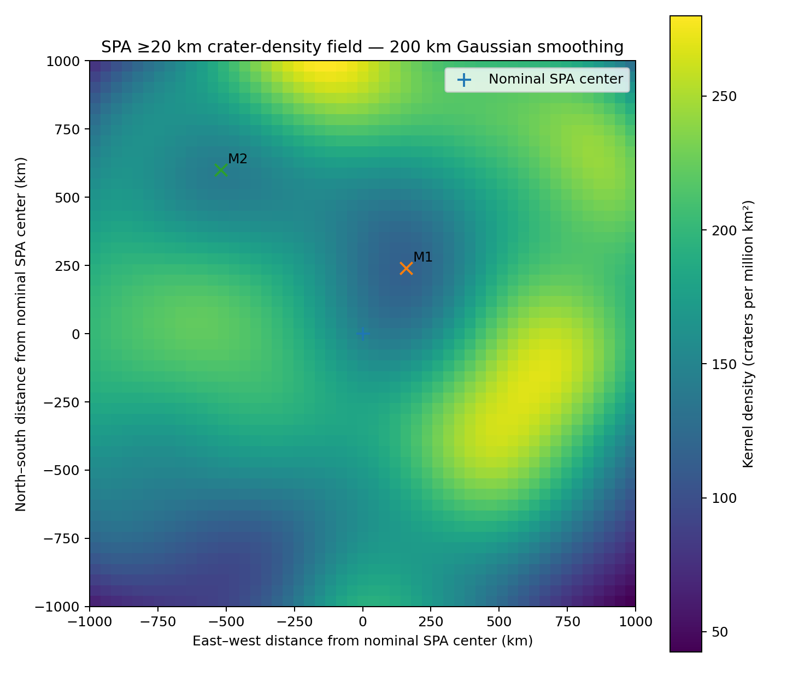
How to read Figure B1.1. Each point of the map is coloured by the density of craters in the window of 200 km around it. The low-density patch is broad — it fills much of the central region — but it is not centred on the middle of the basin: its lowest point stands off to the north-north-east. The measurement that follows asks whether the same lean appears when the centre is simply cut into sectors.
B1fEight sectors
Dividing the central 20° of the basin into eight sectors, on the cleaned ground, the deficit is strongest to the north and north-east:
| Sector | craters | per km² |
|---|---|---|
| N | 12 | 112 |
| NE | 1 | 45 |
| E | 20 | 182 |
| SE | 33 | 231 |
| S | 22 | 157 |
| SW | 8 | 251 |
| W | 6 | 144 |
| NW | 14 | 202 |
The north-eastern and northern sectors hold 45 and 112 craters per million km², against 144–251 in the others. The counts per sector are small (1–33 craters); the direction agrees with the minimum. In the table the sectors run clockwise from north, and the colour again goes from pale (poor) to deep (rich): the two palest cells are the north-east and the north. Because a sector holds only a few dozen craters at most, one sector alone could be poor by chance; what gives the result weight is that this rough division and the smooth map of B1e, made in different ways, point the same way.
B1g The craters of the centre are shallower than those of the rim belt
The deficit is about craters that are missing. This measurement turns to the craters that remain, and asks whether they too carry a mark. The measure is the ratio of depth to diameter: how deep a crater is for its width. Fresh craters of a given size have a typical value; a lower value means a crater that has been filled, softened or flattened. In the catalogue of Wang et al. (2021), on the cleaned ground, the ratio of depth to diameter is lower in the centre (0–10°) than in the ring outside the rim, at every size:
| Diameter (km) | centre 0–10° | craters | outside the rim | craters |
|---|---|---|---|---|
| 10–20 | 0.075 | 129 | 0.078 | 1,013 |
| 20–40 | 0.066 | 17 | 0.076 | 257 |
| 40–80 | 0.045 | 9 | 0.061 | 96 |
Medians; craters whose rim touches the lava plains, a mare or its halo removed.
How to read the table. Each row is a size class; the two coloured columns give the median depth-to-diameter ratio in the centre and outside the rim, with the number of craters measured beside each. Paler means shallower. Along each row the central value is the paler one, and the gap widens with size: almost none for the small craters (0.075 against 0.078), clear for the middle class (0.066 against 0.076), and largest for the craters of 40–80 km (0.045 against 0.061).
In the stricter test — craters of 40–80 km in the central 20° against the ring outside the rim, every crater whose rim touches the masked ground removed — the central craters are 18% shallower (bootstrap 95%: 4–33%; 31 craters inside, 96 outside). The bootstrap interval says how much the result could change if a different set of craters had happened to be measured: the craters are drawn again at random many times, the difference is recomputed each time, and the range holds the middle 95 of every 100 results. The whole range lies above zero, so the central craters are shallower in practically every redraw. Sori and Zuber (2012) reported anomalously shallow craters in SPA after excluding the structures with visible maria. The contrast is measured against the ring just outside the rim, where craters are unusually deep; against a control matched in latitude and diameter across the whole Moon, the central floors are only slightly less deep and the difference is not decisive (B1k). The contrast between the centre and the rim belt is the robust result.
B1h The deficit by size
The deficit is not the same at every size. In the Wang catalogue, about the centre, on the cleaned ground (per million km²):
| Ring | 10–20 km | 20–40 km | 40–60 km | 60 km |
|---|---|---|---|---|
| 0–10° | 581 | 78 | 30.3 | 26.0 |
| 10–20° | 530 | 134 | 32.2 | 41.5 |
| 20–30° | 553 | 176 | 39.9 | 39.9 |
| 30–39.6° | 608 | 158 | 36.5 | 47.5 |
| 39.6–50° | 638 | 165 | 42.3 | 49.1 |
How to read the table. Here each column is coloured on its own scale, palest where that size class is rarest. For the three larger classes the palest cell is the central ring and the colour deepens outward, as in B1c. For the smallest class (10–20 km) the column is nearly flat — 530 to 638 — and the central ring is not the palest: the small craters are hardly missing at the centre.
Against the ring outside the rim, the centre holds 0.91 of the craters of 10–20 km, 0.47 of those of 20–40 km, 0.72 of those of 40–60 km and 0.53 of the largest. The shortfall is strongest at 20–40 km; the smallest class is hardly depleted. The ratio of small to larger craters is accordingly high in the centre: 4.62 craters of 10–20 km for each crater of 20–80 km in the central 10° (95%: 3.18–7.20), against 2.13 (1.99–2.28) at the same latitudes outside SPA; in the rings beyond, 2.88, 2.39, 2.81 and 2.79. The excess is confined to the centre. In plain words: on ordinary ground there are about two small craters for each larger one; at the centre of SPA there are more than four, and the two intervals do not overlap. The centre is not simply younger — a younger surface would lack small and large craters alike — it has lost a particular part of its record, the middle sizes, while the small craters stand nearly at their outside number.
B1iSPA and the south pole
The crater record of SPA also matters beyond the basin, because SPA covers a large part of the southern polar region. Removing SPA alone from the southern polar caps raises their density: 250 to 348 within 10° (+39%), 215 to 305 within 15° (+42%), 207 to 280 within 20° (+35%); after it, the two poles are equal (Paper 7, D.4). The parts of SPA inside the caps hold about 150 craters per million km² against about 305 outside. SPA does not make the southern excess; it hides part of it. Put differently: the southern polar ground outside SPA is as rich in craters as the north, and it is the poor floor of SPA, lying inside the southern caps, that pulls their average down.
Why is the centre of the oldest large basin poor in craters, when a surface collects them for as long as it lasts? Why does the poorest place lie north-north-east of the centre and not at it? Why are the middle sizes missing most and the smallest hardly at all? And why are the remaining craters shallow, while their rims stand high?
SPA is the scar of a giant impact about 4.25 billion years ago, and its floor was reset by it. Several processes are invoked for a weak crater record: relaxation of crater topography over a warm interior; flooding by later lava, which buries craters; burial under the ejecta of later basins; a younger surface, which collects fewer craters; saturation, in which new craters erase old ones at equilibrium (Fassett et al. 2012); and secondary craters, which add small craters near large ones. Relaxation is the slow sagging of relief when the ground beneath it is warm and weak: over a long time a crater’s floor rises and its rim sinks, as a hollow pressed into stiff honey slowly levels out. Saturation is the state in which a surface is so crowded that each new crater destroys about as many old ones as it adds, so the count stops rising. Ejecta is the material thrown out of a crater as it forms, which can blanket the ground around it.
Each accepted process makes a prediction about how the missing craters should be arranged. The table sets each prediction beside what was measured in B1a–B1k.
| Explanation | What it predicts | What is found |
|---|---|---|
| One reset of the basin | An even, lower density over the whole floor | A deficit concentrated in the centre, rising to the rim (B1c) |
| Flooding by lava | A deficit where the lava is | The deficit grows stronger when the lava plains and the maria are removed (B1c) |
| Burial under ejecta | The small craters lost first | The small craters hardly lost; the middle sizes lost most (B1h) |
| A younger surface | Fewer craters at every size | 0.91 at 10–20 km against 0.47 at 20–40 km (B1h) |
| Saturation | No preferred place in the basin | A minimum north-north-east of the centre, the north-east sector poorest (B1e, B1f) |
| Relaxation over a warm interior | Shallow floors and low rims | Shallow floors with high rims (B1g, B1k) |
Read across each row: every process accounts for one feature of the record, but each predicts a pattern the measurement does not show. A single reset leaves no hollow in the middle; lava cannot be the cause when its removal deepens the deficit; a blanket of ejecta buries small craters before large ones; and relaxation lowers rims together with floors. The difficulty is that the record has all its features at once.
DOES NOT EXPLAIN No accepted process gives a deficit concentrated in the centre, lying north-north-east of it, missing the middle sizes most, with shallow craters whose rims stand high.
The burner erased and relaxed the craters of the centre. Its heat came from below and melted the region, its thick and its thin parts alike (B3, B4), and inside the zone of thin crust the deficit follows the direction of the burner: the exit of Serenitatis, nearer the point that faced the Earth, fed the heat in the direction of its antipode, to the north-north-east of the centre. The craters made after the burner calmed fell on cooked, compacted ground, where less of the landing energy went into closing voids and more into the forces that build the rim, so the rim stands high; in the rim belt the layers of returned material kept their voids, and its craters are deep. The large craters are the older population, made by large masses that pressure pushed out at the earlier stages; the small ones come mainly from material that the Earth threw after the detachment, small and medium pieces spread uniformly over the whole Moon, and perhaps from further openings of the Moon itself (D.3a); they fell on top of the old surface. The model expects a deficit inside the zone of thin crust that survives the removal of the young surfaces, its poorest place toward the antipode of Serenitatis, small craters relatively many in the centre and only there, and high rims on shallow craters.
The burner reading in plain words. Picture a sheet of wax lying over a hot plate. Where the plate is hottest the marks pressed into the wax soften and fade; at the cool edges they stay sharp. In the model the floor of SPA is that sheet, and the burner is the plate beneath it: where its heat came up from below, the craters already on the surface were erased or relaxed, and the deficit is deepest where the heat was strongest. The heat did more than erase. The layers of returned material that build the far side were porous, full of voids; heated from below they were cooked and compacted, as a layer of loose snow warmed from beneath settles into a denser crust. That gives two kinds of ground: a cooked, dense floor in the centre and a porous, uncooked belt at the rim. The craters that landed after the burner calmed record that difference — on the dense floor less of the landing energy goes into crushing pores and more into the forces that build the rim, so the rims stand high; on the porous belt the craters are deep. Finally, the direction: the heat was fed through the exit of Serenitatis toward its antipode, so the poorest place lies not at the centre but toward that antipode. The size pattern follows from the order of arrival: the middle and large sizes belong to the older population and were erased with the old surface, while most small craters arrived later, from the material the Earth threw after the detachment, on top of the surface the burner had already worked.
The deficit is concentrated in the centre, 0.51 of the surroundings, and grows stronger as the lava plains, the maria and their halos are removed. The minimum lies on the meridian of the point opposite Serenitatis (197.9° against 198.8°). The ratio of small to larger craters is 4.62 in the centre against 2.13 elsewhere, and only in the centre. The central craters are shallower than those of the rim belt, and their rims stand high. Each of the four predictions of Step 5 is met by a separate measurement: the place of the deficit (B1c, B1d), its direction (B1e, B1f), its sizes (B1h) and the shape of what remains (B1g, B1k).
FITS The deficit lies inside the zone of thin crust, toward the antipode of Serenitatis, with the size pattern and the high rims the model expects.
B1jThe observation
The measurements of B1a–B1i are gathered here in one statement, the form in which they are used in the rest of the paper.
Measured like for like, on ground cleaned of the lava plains, the 34 maria and a halo of 200 km around each, SPA as a whole holds 7% fewer craters than the rest of the Moon, and the deficit is concentrated in its centre: a broad region with 0.51 of the density outside the rim, surviving on the ellipse, strongest to the north and north-east, with its minimum about 270 km north-north-east of the centre at 45.4°S, 197.9°E, on the meridian of the point opposite Serenitatis; its craters of 40–80 km are 18% shallower than those of the rim belt. It is not the central topographic depression (B2).
B1k What the crater record can and cannot show
The measurements above describe the craters that can still be recognised. Several readings of them were considered; each is stated here with the test that would decide it. This section is where the limits of the crater evidence are collected, so that the reader can see which parts of B1 are firm and which await a further measurement.
The catalogue sees only what survived. A crater that melted away or was flattened beyond recognition is not in the catalogue; its absence is the density deficit itself. The craters measured inside SPA are therefore a mixture of two populations: older craters that survived the period of heating in a degraded, flattened state, and younger craters formed afterwards. Test: separate the craters by relative age and look for two populations inside SPA.
New craters on a compacted ground. In porous ground part of the energy of a landing goes into compacting the pores, and craters form with lower rims; in dense, low-porosity ground the energy goes into excavation, and rims stand higher (cratering experiments and models of porous targets: Housen et al. 1999; Housen & Holsapple 2003). A footprint gives the picture: in loose powder the foot sinks and pushes little up around itself; in firm damp sand it throws up a raised edge. Measured on LOLA topography (LDEM_256, about 118 m per pixel; 1,058 craters of 20–80 km), the rims of craters within 20° of the centre stand higher above their surroundings than in a control matched in latitude and diameter (normalised 1.35 against 0.92). “Normalised” means that each rim height is divided by what is typical for a crater of that diameter, so that large and small craters can be compared on one scale; a value above one is a rim higher than usual. The result holds with every background tested (1.5–2, 2–3 and 3–4 crater radii, and a wider regional plane), and the surroundings of the central craters are not depressed relative to that plane: the high rims are a property of the craters, not of a sunken background.
The measurements are relative. In the same measurement the floors of the central craters lie less deep below their surroundings (normalised 0.90 against 1.03 in the control, not decisive; m against m in the ring outside the rim). With the floor measured in an annulus that avoids central peaks (0.3–0.6 crater radii) the central floors are slightly less deep than in the matched control, with an interval that includes no difference. Whether the floors changed remains open.
The shape of the rim. Heat from below may flatten the crest of a rim and widen its base; later small landings do the same over time. The shape alone therefore does not separate heating from age. At the resolution of the global topography the crest of a 20–30 km crater is not resolved; an exploratory comparison shows no flattening of the crest and a base perhaps slightly wider, neither decisive. The crest test awaits higher-resolution topography.
Two kinds of ground. In the centre of SPA the layered crust was cooked and compacted (B2, B6): its craters have high rims and floors that are not deep. In the rim belt the layers of returned material were not cooked and kept their voids: its craters are unusually deep (normalised depth 1.10–1.13 in the rings at 30–45°). The contrast between centre and rim belt may therefore be a contrast between two kinds of ground. Test: the porosity of the crust inside and around SPA (B6).
Relative ages. The density of small craters on each crater’s near-rim ejecta was tried as a relative age; the rims of the central craters stand higher in all three classes. But the heat that erased craters erased small craters too, so inside SPA this measure is affected by the very process under test; a split by true age — cross-cutting relations mapped crater by crater — remains to be done. A cross-cutting relation is the plain geological rule that a crater which cuts into another is the younger of the two.
Returning material of different speeds. For craters of 20–80 km the ratio of depth to diameter is set largely by the collapse of the walls, which depends on gravity and on the strength of the ground; the kind of ground — compacted or porous — bears on crater shape more than the speed of the returning material.
What we now have: on old ground, the centre of SPA has lost about half of its crater record; the loss deepens as the young surfaces are removed, leans toward the antipode of Serenitatis, takes the middle sizes most, and leaves shallow craters with high rims. The study below sets out how this was measured.
The phenomenon. The centre of South Pole–Aitken looks poor in craters. The gap in knowledge. The deficit has been noted, but not measured like for like on old ground — with the lava plains, the maria and the ground each mare reworked removed on both sides — nor tested for where it lies, which sizes it takes and what it does to the craters that remain. The research question: on old ground, how is the crater record of SPA distributed — by distance from the centre, by direction and by size — and how do the craters that remain differ from those around the basin?
SPA is read as a giant impact about 4.25 billion years old (Garrick-Bethell & Zuber 2009; Andrews-Hanna et al. 2025). The densities of superposed craters date basins and test saturation (Fassett et al. 2012); craters in SPA were found anomalously shallow after the visible maria were set aside (Sori & Zuber 2012). Porous targets give craters with low rims (Housen et al. 1999; Housen & Holsapple 2003). What is new here: the old ground is defined by the maria of the series and the halo each reworked; the record is mapped continuously, by direction and by size; and the rims and floors of the remaining craters are measured against a matched control.
The burner erased and relaxed the craters where its heat reached the surface, inside the zone of thin crust, toward the antipode of Serenitatis. Hence: a deficit concentrated in the centre that grows stronger, not weaker, on cleaner ground; a minimum north-north-east of the centre; the middle sizes missing most, the smallest hardly at all; and shallow craters with high rims.
Type of research: quantitative; densities by ring, sector and size, a continuous density map, and a matched comparison of crater shape. The sample: the 6,973 craters of 20 km and more of Robbins (2019); the craters of 10 km and more of Wang et al. (2021) south of the equator; 1,058 craters of 20–80 km for rims and floors. The control: the ring 39.6–50° just outside the rim; the rest of the Moon at the same latitudes; for shape, craters matched in latitude and diameter. The tools: the LROC mare map, the feed domes of Paper 5, LOLA topography, and code that weights every cell by its true area. Weighting by true area matters on a sphere: a cell of a latitude–longitude grid shrinks toward the pole, and near the south pole, where SPA lies, counting cells as equal would overweight the polar ground. The table sets out each rule and the reason for it.
| Rule | Why, in plain words |
|---|---|
| Lava plains, the 34 maria and a halo of 200 km removed, on both sides | To compare old ground with old ground; an active mare reworks the ground around it |
| Ratio base: the ring just outside the rim | The nearest old ground of the same region |
| Craters of 20 km and more for the record; 10 km and more for sizes | The larger catalogue is complete; the smaller one gives the size pattern |
| Kernels of 150, 200 and 250 km for the minimum | The minimum must not depend on the choice of kernel |
The mask was fixed before the craters were counted. This order matters: the ground to be removed could not be chosen, even unknowingly, to give the expected answer. Each crater was assigned by its centre; a crater whose rim touches the masked ground was removed in the shape tests. The values are the tables of B1a–B1i.
The profile. 0.51 in the central 10°, 0.81, 0.92 and 0.91 in the rings beyond; 0.57 for craters of 40 km and more; 0.59 on all ground. The ellipse. 122 and 132 in the core against 230–235 in the outer half. The minimum. 45.4°S, 197.9°E, stable within 44.6–47.1°S, 196.1–198.9°E over the three kernels; record strength 0.45. The sectors. North-east 45 and north 112, against 144–251 elsewhere. The sizes. 0.91, 0.47, 0.72 and 0.53 from the smallest class to the largest; small-to-large ratio 4.62 (3.18–7.20) against 2.13 (1.99–2.28). The shape. Craters of 40–80 km 18% shallower (4–33%); rims 1.35 against 0.92 in the matched control.
Result. The hypothesis is supported: the deficit is concentrated in the centre and grows stronger on cleaner ground; its minimum lies north-north-east of the centre, on the meridian of the point opposite Serenitatis; the middle sizes are missing most; and the craters that remain are shallower than those of the rim belt, with high rims. Limitations. The counts in the centre are small (29 craters of 20 km and more in the central ring, 1–33 per sector); the shape contrast rests on 31 craters and is measured against a rim belt where craters are unusually deep; the catalogue sees only what survived; secondaries may add to the small craters. Directions for further research. Two populations by relative age, mapped crater by crater; the crest of the rims at high resolution; and the test of superposed small craters on large hosts, prepared in Part F.
B2Shape and depth
In brief. SPA is deeper than its thin crust alone explains. The missing depth is greatest at the centre of the basin (1.1–1.8 km) and decreases towards the rim, and the lowest ground lies above a dense mass at depth.
B1 read the surface of the basin through its craters. B2 reads the basin as a whole: how deep it is, and whether its depth is what its crust would give it. The answer will show that something beyond the thin crust has lowered the floor, and that this extra depth has a centre, as the crater deficit has.
SPA is the largest basin on the Moon — an ellipse of about km (Garrick-Bethell & Zuber 2009) — and the lowest region on it. Its depth depends on the definition:
| Definition | Depth | Source |
|---|---|---|
| Floor (0–10° from the centre) to the mean rim elevation | km | LOLA, this paper |
| Floor to the rim crests (95th percentile) | km | LOLA, this paper |
| Typical floor to rim, northern SPA | 8.5 km | Ivanov et al. 2018 |
| Mean, rim to floor | km | Zuber et al. 1994 (Clementine) |
The table shows why a single number for the depth of SPA is misleading. The rim of so large a basin is not a sharp crest at one height: measured to its mean elevation, the floor lies about 6 km below it; measured to its highest crests (the top 5% of rim heights), about 9 km. Older estimates from coarser data reach 12 km. All the values agree on the main point — SPA is the deepest region of the Moon — and this paper uses the first definition, which is the least sensitive to a few high peaks.
How we measured. The first check showed that large, deep craters formed after the basin contaminate the elevation measurement: they lower the local elevation independently of the basin itself. Only the surface between the craters is therefore measured here. Every crater of 20 km and larger was removed together with a margin of one to two radii, and so were the lava plains and the openings. The results are the same for every margin width. (The openings are the young basins that dug holes of their own into the floor of SPA; the 36 openings used here are the original marks of the series, used in the crust test of Paper 5, and they are a different list from the 34 maria of Paper 5’s catalogue removed in B1.) The ground left after the removal — the intercrater plains — is the floor of the basin itself, not the floors of later craters set into it.
The basin is deeper than its thin crust alone explains.
The depth is the excavation depth of the impact. The crust that remains is thin, and thin crust stands low. This is isostatic balance: a light crust floats on a dense mantle, and the thinner it is, the lower it sits. A block of wood floating in water gives the picture: a thin board rides low, a thick block stands high, because each sinks until it displaces its own weight. Beneath the basin the mantle holds an excess mass of at least kg, reaching depths of hundreds of kilometres (James et al. 2019); it is interpreted as the remnant of the impactor’s core or as dense material from the crystallisation of the magma ocean.
From the crustal thickness (GRAIL, four models) we calculated how low the basin should stand on account of its thin crust alone, and compared this with the observed elevation on the intercrater plains. GRAIL is the gravity mission whose field, together with the topography, gives the thickness of the crust; four published crustal models differ in their assumptions, and all four are used so that the result does not rest on one of them. The calculation is the floating balance of Step 3: where the crust is thinner than outside the basin, the surface must stand lower, by the missing thickness times the difference in density between mantle and crust divided by the density of the mantle. With the densities used here (crust 2,550, mantle 3,220 kg/m³) that factor is about one fifth: for every kilometre of crust missing, the surface sinks by about a fifth of a kilometre.
| Ring from the SPA centre | Observed (km) | Crust alone (km) | Residual (km) |
|---|---|---|---|
| 0–5° | to | to | |
| 5–10° | to | to | |
| 10–15° | to | to | |
| 15–20° | to | to | |
| 20–25° | to | to | |
| 25–30° | to | to | |
| 30–35° | to | to | |
| 35–39.6° (rim) | to |
Residual: what the crust does not explain. Elevations relative to the ring 39.6–50°. Crust 2,550 kg/m³, mantle 3,220 kg/m³. The range is that of the four GRAIL models and of crater margins of 1–2 radii.
How to read the table. Each row is a ring of 5° around the centre, from the middle of the basin (top) to the rim (bottom). The first column of numbers is the measured elevation, relative to the ground just outside the rim; the second is the elevation the thin crust alone would give; the third, the residual, is the difference — the depth that the crust does not account for. In every ring the observed floor lies below the floor the crust predicts, so every residual is negative. Read the residual column downward: it is largest in the two central rings ( to and to km) and shrinks toward the rim, where it is only a few hundred metres.
With a normal crustal density, 1.1–1.8 km are missing at the centre. The floor of SPA is rich in iron, and its grain density is about 3,000 kg/m³ (Huang & Wieczorek 2012). With a dense crust of 2,900 kg/m³ (the value used in Figure B2.1) the thin crust explains less, and the gap at the centre grows to about 4.4 km. The reason is the floating balance again: a denser crust is closer in density to the mantle beneath it, so thinning it lowers the surface by less, and more of the observed depth is left unexplained.
The thin crust alone does not explain the depth. The dense mass of James et al. can fill the gap, and the lowest intercrater ground (61°S, 199°E, km) lies about 35 km from its published centre (62°S, 200°E; an earlier version gave about 50 km). A dense body at depth pulls the surface above it down, just as a weight hung beneath a floating board makes it ride lower; with that mass included, the accepted reading has what it needs.
EXPLAINS Science explains the depth, provided that the dense mass is included.
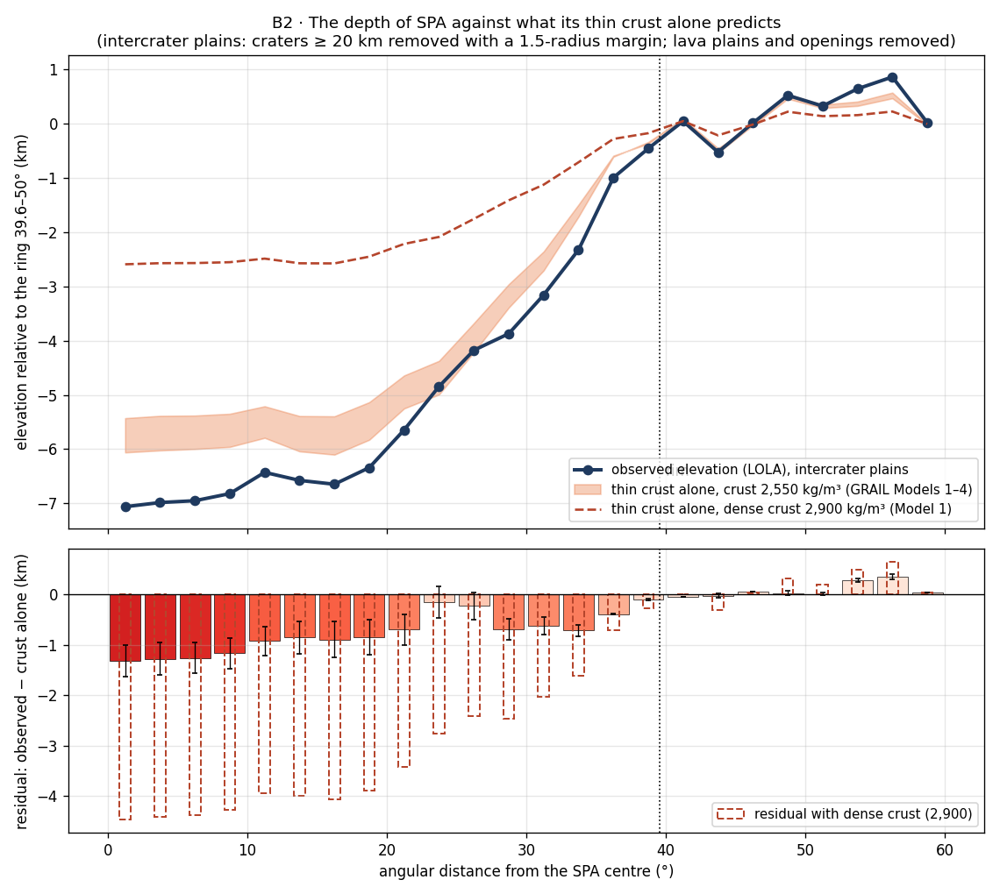
How to read Figure B2.1. The upper panel is the table drawn as a profile from the centre (left) to the rim (right). The blue line, the measured floor, runs below the orange band of the crust-alone prediction over the whole basin, and furthest below it at the centre; the dashed line for a dense crust lies higher still, leaving a larger gap. The lower panel shows only the gap, ring by ring, with the colour deepening as it grows: the reddest bars stand at the centre.
Heat from below raised the region into a dome, and the crust slid off it to the sides. The heat source calmed as the flattening relaxed, before the release; after the release, as the body moved away into space, the cooling grew stronger and changed the structure: the raised region subsided into a depression, and three lasting changes left the basin low.
In plain words, the burner did to the floor of SPA what heat does to a pan of rising dough set over a flame: first it swelled the region upward, and its softened crust slid away down the flanks of the swelling; then, when the flame was lowered and the region cooled, the swelling fell back — and fell lower than it began, because the heat had changed the material while it worked. Three such changes are named.
Thin crust — from the sliding and from the melting of the base of the crust.
Material lost — the long heat evaporated volatile material and also less-volatile material, which did not return (B11; Tian et al. 2026). The iron did not evaporate; it stayed.
Compaction — the layers of returning material, full of voids, were cooked from below; afterwards, in the cooling stage that followed the separation, they compacted and contracted. The compaction is strongest at the centre, where the heat was strongest, and weakens towards the rim.
In addition, iron-bearing material from the Earth reached the base of the region and was concentrated there as other materials left (B10); this dense mass at depth pulls the surface above it downward.
The first change is the thin crust measured by GRAIL, and the floating balance of Step 4 already accounts for the depth it gives. The residual of Step 4 is the depth left over, and in the model it is the work of the material lost and of the compaction. The concentrated iron is the model’s reading of the dense mass that science also needs.
The model predicts a depth that the thin crust alone does not explain; a residual that is largest at the centre and decreases towards the rim; and low ground above the heavy mass.
The residual is large at the centre and decreases towards the rim, from 1.1–1.8 km within 10° to 0.2 km at the rim, as compaction that weakens outward from the centre predicts.
It is the same for every margin width; it therefore belongs to the basin, not to the craters.
The order of magnitude fits: a residual of 1.1–1.8 km corresponds to a column of 9–15 km that lost 12% voids; with a dense crust, about 37 km. The arithmetic is simple: a layer that loses 12% of its volume as voids close becomes 12% thinner, so a column of 9 to 15 km sinks by 1.1 to 1.8 km, and a gap of about 4.4 km needs a column of about 37 km (; an earlier version gave about 35 km).
The lowest ground lies above the dense mass, as a concentration of iron at depth would give.
FITS The residual is largest at the centre and falls towards the rim, belongs to the basin rather than to the craters, and is of the size that compaction gives; the lowest ground lies above the dense mass.
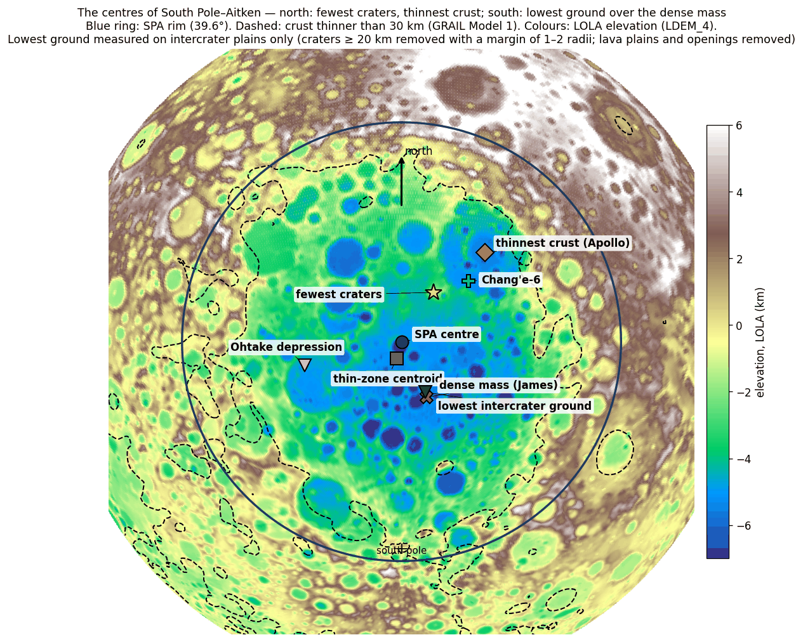
How to read Figure B2.2. The map places on one view the several “centres” that SPA turns out to have. Follow them from north to south: first the group of the north-east, where craters are fewest and where Chang’e-6 landed; then the geometric centre of the basin; then, to the south, the dense mass and the lowest ground. The figure is the first view of a pattern the paper returns to: the basin does not have one centre but two foci, one in the north and one in the south.
What it shows. The thin crust is not enough. Even with a normal crustal density depth is missing at the centre; with an iron-rich crust, much more. Both explanations need something beyond the thin crust, and both supply it. In the model two things act together: a general compaction, strongest at the centre and weakening towards the rim, and a heavy mass in the south that pulls the surface there down further.
SPA has two foci: in the north, the erasure of craters (the direction of the burner); in the south, the depth and the mass (concentrated iron). B1 and B2 connect: where the heat passed, and where the iron was concentrated. Craters contaminate elevation measurements; from here on, elevations are measured on the intercrater plains. B2 does not decide between the explanations, but it shows that more than a thin crust is required.
Data and code.
| Data | Source |
|---|---|
| Elevation | LOLA LDEM_4 (4 pixels per degree, 7.6 km), PDS; SHA-256 c04632eb…af476 |
| Crustal thickness | GRAIL, the four models of Wieczorek et al. 2013, 0.25° grid |
| Craters for the mask | Robbins 2019, km, without basins larger than 300 km (2,546 craters around SPA) |
| Lava and openings | LROC; the 36 openings (sampled from our map, radii from catalogues) |
| Code | b2.py, b2plains.py, b2fig.py — folder 19_B2_depth |
Open. The radii of the 36 openings are still to be checked. The dip in the residual around 23–26° and the renewed rise at 28–34° are to be tested as a real feature (the rim belt) or as noise. The verdict for science depends on the mass of James et al.; B10 tests its position and depth.
What we now have: the floor of SPA lies 1.1–1.8 km deeper at its centre than its thin crust gives, the extra depth fades toward the rim, and the lowest ground stands over the dense mass in the south. Together with B1, the basin shows a northern focus where craters were erased and a southern focus where the floor sank.
The phenomenon. SPA is the lowest region of the Moon. The gap in knowledge. How much of its depth its thin crust explains in isostatic balance, ring by ring, measured on the ground between the craters rather than on craters that formed afterwards, has not been set out. The research question: how deep is SPA against what its thin crust alone predicts, and how does the remainder change from the centre to the rim?
The depth is read as the depth of excavation of the impact, with the thin crust floating low and a dense mass beneath the basin (James et al. 2019); the floor is rich in iron, with a grain density near 3,000 kg/m³ (Huang & Wieczorek 2012). What is new here: elevation read only on the plains between craters of 20 km and more, the lava plains and the maria removed, against the crust of all four GRAIL models, ring by ring.
Compaction of the cooked layers was strongest at the centre, where the heat was strongest; so the basin is deeper than its thin crust explains, and the remainder is largest at the centre and falls toward the rim.
Type of research: quantitative; observed elevation against the isostatic prediction, by ring. The sample: LOLA elevation (LDEM_4) on the plains between craters, in rings of 5° about the centre. The tools: the four GRAIL crustal models (Wieczorek et al. 2013), crust 2,550 and mantle 3,220 kg/m³, with a dense crust of 2,900 as a check; Robbins (2019) for the crater mask, with margins of one to two radii.
Craters of 20 km and more were removed with their margins, and the lava plains and the maria with them; elevations and crust were read on what remained, relative to the ring 39.6–50°. The values are the table of step 4 and Figure B2.1.
The remainder is to km within 5°, to at 5–10°, and falls to to at the rim; with a dense crust it grows to about 4.4 km at the centre. It is the same with every margin width, so it belongs to the basin and not to the craters. The lowest ground between craters (61°S, 199°E, km) lies about 35 km from the published centre of the dense mass of James et al. (2019).
Result. The hypothesis is supported: the basin is deeper than its thin crust explains, the remainder is largest at the centre and falls toward the rim, as compaction weakening outward would make it; a remainder of 1.1–1.8 km corresponds to a column of 9–15 km that lost 12% of its voids. Limitations. The elevation model resolves 7.6 km; the remainder depends on the assumed crustal density; the dense mass beneath the basin can also fill the gap. Directions for further research. The porosity at depth inside and around the basin (B6); the dip of the remainder at 23–26° and its rise at 28–34°.
B3Thin crust
B1 and B2 read the surface of SPA: its craters and its depth. B3 and B4 go one layer down, to the crust itself — the light outer shell of the Moon that lies over the denser mantle. B3 asks how thick that shell is inside the basin and where it is thinnest; B4 asks what happened to the crust that is missing there.
In brief. The crust inside SPA is the thinnest on the Moon. When the openings — young basins that dug holes of their own into it — are removed, SPA’s own thin crust is centred about 150–190 km south of the basin centre, and its thinnest point lies in the south, near the lowest ground and the dense mass.
How the thickness of the crust is known. No probe has drilled the lunar crust; its thickness is read from gravity. The GRAIL mission (two spacecraft flying in formation around the Moon) measured the Moon’s gravity field in fine detail. The crust is lighter than the mantle beneath it, so where the crust is thin and the dense mantle comes close to the surface, the pull of gravity is a little stronger. The gravity that the visible topography (measured by the LOLA laser altimeter) does not account for — the Bouguer anomaly, gravity with the attraction of the surface relief removed — is therefore read as relief on the base of the crust: a strong Bouguer anomaly marks a shallow base, a weak one a deep base. Turning gravity into thickness needs assumptions — the densities of crust and mantle, and the thickness at one reference place — and Wieczorek et al. (2013) published four crustal models that differ in these choices. A result that holds in all four does not depend on them; that is why every measurement in B3 and B4 is given in all four, or in the two that bracket them (Models 1 and 4).
The crust inside SPA is the thinnest on the Moon: 15–28 km at the centre of the basin, against 41–51 km outside it (the four GRAIL crustal models, Wieczorek et al. 2013). The basin has lost roughly half or more of its crust. The mean crustal thickness in rings about the SPA centre:
| Ring from the SPA centre | Model 1 | Model 2 | Model 3 | Model 4 |
|---|---|---|---|---|
| 0–5° | 16.0 | 15.8 | 24.1 | 22.9 |
| 5–10° | 16.4 | 16.3 | 24.5 | 23.4 |
| 10–15° | 16.2 | 16.0 | 24.0 | 22.9 |
| 15–20° | 17.5 | 17.4 | 25.3 | 24.2 |
| 20–25° | 21.5 | 21.7 | 29.4 | 28.7 |
| 25–30° | 26.5 | 27.0 | 34.7 | 34.2 |
| 30–35° | 33.4 | 34.3 | 42.3 | 42.2 |
| 35–39.6° (rim) | 39.5 | 40.9 | 49.2 | 49.5 |
| 39.6–45° (outside) | 40.6 | 42.0 | 50.1 | 50.5 |
| 45–50° | 41.9 | 43.4 | 51.5 | 51.9 |
km, all ground. The redder the cell, the thinner the crust.
Read the table from top to bottom. The rings are measured in degrees of arc from the basin centre (one degree is about 30 km on the Moon), and the rim of the basin is the circle at 39.6°. In every model the crust is flat and thin out to 15°, about 16 km in Models 1–2 and about 23–24 km in Models 3–4; it then thickens steadily through 20–35°, reaches the outside value at the rim, and barely changes beyond it. The four models differ by about 8 km in their overall level, but the shape of the profile — a flat thin floor, a rising wall, a thick plateau outside — is the same in all four. The colours run from red at the top to pale at the bottom: a single direction of change from the centre outward.
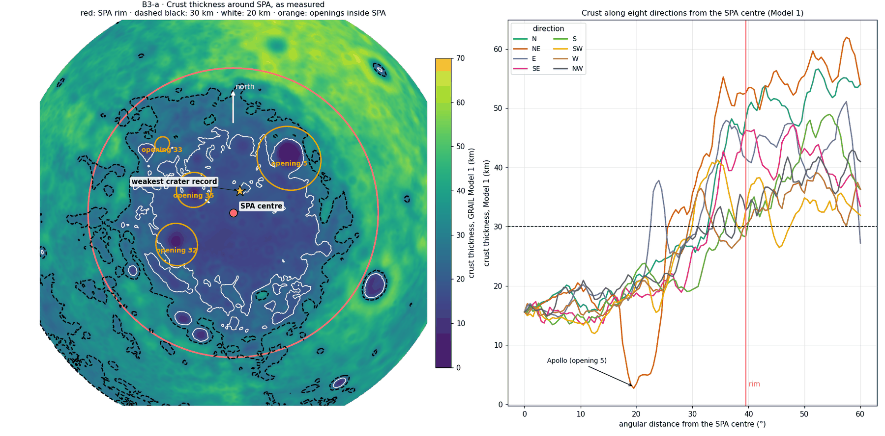
The map on the left shows where the thin crust lies; the profiles on the right show that the thin floor is the same in every direction out to about 20°. The one exception, the sharp dip to the north-east, is not SPA’s own crust but the hole dug by a younger basin inside it, Apollo. This is what forced the cleaning described next.
How we measured. The crustal map shows that the young basins inside SPA — the openings — dug “holes” of their own into the thin crust, and these contaminate the picture of SPA itself. (An opening, in this series, is a mare over a feed dome: a place where material rose from below and where the crust was opened; Paper 5.) If they are left in, the thinnest point of the raw map simply falls in the deepest of these holes, Apollo, and says nothing about SPA. We therefore examined SPA’s crust without the openings and without the lava plains. The results are the same when craters of 20 km and larger are also removed, and in all four models.
| What was measured — SPA itself | Result |
|---|---|
| The thinnest point (smoothing km over the remaining ground) | 61°S, 184°E; 12–13 km (Models 1–2), 18–20 km (Models 3–4); 270–285 km south of the centre |
| Centre of the zone where the crust is thinner than 30 km | 57–58.5°S, 185–191°E; 150–190 km south of the centre |
| Distance between the two | km — 5% of the basin diameter |
| Area of the zone thinner than 30 km | 1.8–2.9 million km²; equivalent width –1,900 km |
The table gives two independent ways of finding the “middle” of SPA’s thin crust. The first is a point: the crust is averaged over windows about 300 km wide, so that no single small hole decides the answer, and the window with the least crust is taken. The second is an area: all the ground where the crust is thinner than 30 km is outlined, and the centre of that area is found, as one would find the centre of gravity of a cut-out shape. The two lie about 120 km apart — 5% of a basin 2,400 km across — so they describe the same place, and both lie south of the nominal centre (53°S, 191°E). The zone thinner than 30 km covers 1.8–2.9 million km², the area of a disc about 1,500–1,900 km wide (an earlier version gave about 1,900 km, the upper end): most of the basin.
The distance from the centre at which the crust passes 30 km, by direction (median in each sector, SPA itself):
| Direction | Model 1 | Model 4 |
|---|---|---|
| North | 30° | 25° |
| North-east | 24° | 24° |
| East | 30° | 23° |
| South-east | 34° | 32° |
| South | 37° | 27° |
| South-west | 33° | 27° |
| West | 32° | 27° |
| North-west | 29° | 24° |
The redder the cell, the farther the thin zone reaches in that direction. In Model 1 it is widest in the south (37°) and narrowest in the north-east (24°); in Models 3–4 the differences are smaller.
This table gives the outline of the thin zone. Walking out from the centre along each of eight directions, it records how far one goes before the crust becomes thicker than 30 km. If the thin zone were a circle centred on the basin, all eight numbers would be equal. They are not: in Model 1 the thin zone is shortest toward the north-east (24°), in Model 4 toward the east and north-east (23–24°), and in Model 1 it reaches farthest toward the south (37°). The zone is pulled southward and pinched on the north-east side; this is why its centre lies south of the basin centre.
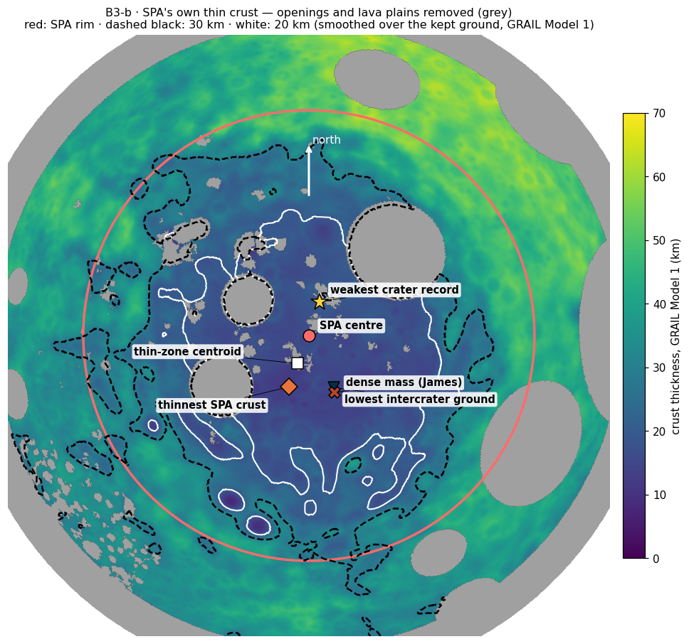
Figure B3.2 puts the two southern points on one map, and with them the crater record of B1 for comparison. The star is the weakest crater record on the ground of this figure, from which the openings and lava plains are removed; it is a different measure from the minimum of B1e (about 270 km north-north-east of the centre), which is read from a continuous density map on ground cleaned of the 34 maria and a halo of 200 km around each. Both lie on the northern side of the centre, while the crustal points lie on its southern side.
Why is the crust so thin, and why is the thin zone centred not on the basin centre but to the south of it, with its thinnest point in the south?
In the accepted reading SPA is an impact basin, and its thin crust is the hole left by excavation. The impact that made SPA excavated the crust and threw it outward. In models of an oblique impact travelling south — the direction most recent work proposes (Andrews-Hanna et al. 2025; Wakita et al. 2026) — the thin zone is elongated along the trajectory and tapers towards the south, with a gradual transition on the southern side (also Citron et al. 2024). An oblique impact, one that strikes at a slant rather than straight down, does not dig a symmetric hole: it digs deeper and longer in the direction of travel, so the thin zone is drawn out that way. No model predicts a particular thinnest point; the models predict the shape of the thin zone. The nearly absent crust in Apollo is explained by the Apollo impact itself, later and smaller, which excavated again inside SPA (Potter et al. 2018).
Here science holds. It has no requirement that its models fail to meet, and there is no point it predicts that was not found.
The verdict boxes that close Steps 4 and 6 follow the scheme set out at the head of Part B: science is judged on its own terms (explains, explains partly, explains with difficulty, does not explain), the model on its own (fits, fits partly, open), and neither box compares one with the other.
EXPLAINS A thin zone lying south of the centre and widening to the south fits an impact travelling south, and Apollo is explained by an impact of its own.
In the model SPA is the place where the heat of the burner reached the far side: a heat source beneath the far side, opposite the openings of the near side, with Imbrium as its main exit and Serenitatis as its secondary (A.5). The crust there is thin because that heat removed it. The heat from below made the thin crust, in three ways:
Sliding off the dome. The region, pushed and heated from below, rose into a dome, and the softened crust slid off it to the sides under gravity. A crust that is heated loses its stiffness; on a raised, sloping surface it creeps downhill, as a softened layer of wax runs down the sides of a warmed dome.
Pushed outward by heat. Hot material presses harder than cold material: fast-moving particles push slow-moving ones. The hot material that rose from below expanded and spread sideways beneath the crust, pushing it from the hot centre to the margins.
Melting from below. The base of the crust was melted by the heat.
The first two move crust sideways, from the centre to the margins; the third removes it in place, from beneath. The two that follow are given in numbers, so that the reader can see that each is physically possible on the time available.
The physics of the outward push (mechanism 2). Thermal pressure. Temperature is a measure of the kinetic energy of the particles; in a gas , and pressure rises with temperature. In a solid or viscous material, which cannot expand freely, heating creates pressure: In words: a material heated by tries to grow in volume by the fraction , where is its coefficient of thermal expansion. If its surroundings prevent it from growing, it is as if it had been squeezed back by that fraction, and the pressure needed to do so is that fraction multiplied by the bulk modulus , the material’s resistance to compression. The same thing happens when water is heated in a sealed, completely full container: it cannot expand, so its pressure rises until the container gives way. The table gives the values for silicate material:
| Quantity | Value for silicate material | Type |
|---|---|---|
| — volumetric thermal expansion | 2–4 per K | standard value |
| — bulk modulus | 70–100 GPa | standard value |
| 1.4–4 MPa per K | derived | |
| Heating by 300 K | 0.4–1.2 GPa | derived |
| Compressive strength | GPa | standard value |
Heating by a few hundred kelvin creates a pressure of 2–6 times the compressive strength (an earlier version gave 2–3 MPa per K for , 0.6–0.9 GPa and 3–4 times, the central values of these ranges) — the greatest pressure the material can bear before it fails; the material cannot sustain it, and the hot material is pushed outward, towards the cold.
Lateral spreading beneath the crust. Hot material is lighter: kg/m³ for heating by 300 K. A head of hot material of thickness exerts a lateral stress MPa ( km, m/s²). A layer of lighter material lying under heavier surroundings presses sideways, as a column of water presses on the walls of its tank; is that sideways push, set by the density difference, the Moon’s gravity and the thickness of the hot layer. How fast the material yields to it depends on its viscosity — its resistance to flow, very high for hot solid material that creeps slowly over long times. At a viscosity of Pa s this is a strain rate of per million years: within millions of years the material moves distances of the order of the thickness of the layer itself, which is enough to move crust from the centre to the margins.
The second law of thermodynamics sets the direction: heat flows from hot to cold (Fourier’s law, ), and with it a pressure difference arises from hot to cold () that pushes material in the same direction. The two laws have the same form: where the temperature falls (, the gradient of temperature), heat flows down that slope, and the pressure falls with it, so the push on the material points the same way as the flow of heat — from the hot centre to the cool margins.
Thermal diffusion — the Soret effect. In a mixture with a temperature difference, components also move because of the temperature itself: Here is the flow of one component, its fraction in the mixture, its diffusion coefficient and the Soret coefficient. The first term is ordinary diffusion, which evens out differences of composition; the second is a flow driven by the temperature difference alone, which can build up differences of composition. In silicate magmas – per K (Lesher & Walker 1986). Its limits: it is slow — m²/s moves material, over a distance of about , only a few metres in tens of thousands of years and about half a kilometre in a billion years (an earlier version gave hundreds of metres and tens of kilometres; the square-root estimate is smaller still, which only strengthens the conclusion) — so it is not what pushed the crust. And in experiments silica concentrates on the hot side while iron and magnesium move to the cold side, the opposite of the iron-rich floor of the SPA centre, so it does not explain the iron. Its role is in local compositional separation within layers that were cooked for a long time.
The physics of melting from below (mechanism 3). Conservation of energy (the first law) and the Stefan condition for the melting front. To melt a crust of thickness it must be heated to melting and then melted: The first equation is a budget: each kilogram of crust needs to be warmed to its melting point ( is the heat needed to warm one kilogram by one kelvin) and then , the latent heat, to turn it from solid to melt; multiplied by the density and the thickness , this gives the energy per square metre of surface. The second equation is the Stefan condition: a heat flux arriving from below moves the melting front upward at the speed , the flux divided by the energy each cubic metre needs.
| Quantity | Value |
|---|---|
| — latent heat of fusion | J/kg |
| — heating by 800 K | J/kg |
| — crustal density | 2,900 kg/m³ |
| Energy to melt 20 km of crust | J/m² |
| Heat flux from below | Time to melt 20 km |
|---|---|
| 0.5 W/m² (25 times today’s) | Myr |
| 0.1 W/m² | Myr |
The left table builds the budget; the right table divides it by two heat fluxes. The time is simply the energy per square metre divided by the heat that arrives per second on each square metre. Even the lower flux, 0.1 W/m², melts the 20 km in about 22 million years.
Melting 20 km of crust from below takes millions to tens of millions of years — far shorter than the time the burner operated; the mechanism works even at a moderate heat flux.
The values are orders of magnitude with accepted parameters for silicate material (expansion, bulk modulus, viscosity, heat flux), marked as assumptions (ADOPTED). They show that the mechanisms are possible; they do not compute exactly what happened.
What became of the crust and of the dome. The crust pushed outward piled up around the basin — the thickened ring (B4). The heat was strongest at the centre of the dome, beneath which it rose; it melted the thick and the thin parts of the region alike, and the thinnest crust remained in the south, where the original crust was thinner (B4). At the base of the region the iron-bearing material that had come from the Earth stayed, and was concentrated as other materials left (B10). The heat source calmed as the flattening relaxed, before the release from the Earth; after the separation only residual heat acted, decaying slowly. As the body moved away into space the cooling grew stronger and changed the structure: the cooked layers compacted and contracted, and the raised region subsided into a depression. The thin crust is therefore a sign of the heat, not its precondition: the burner did not seek out a place where the crust was already thin; it made the crust thin where it worked.
The openings inside SPA were strongly affected by the burner and affected their surroundings, so that statistically they sometimes resemble the basin centre; they are noise that hides the structure of SPA itself.
The model predicts a thin crust over the whole heated region, thinnest where the original crust was thin, and there also the lowest ground; and iron concentrated at the base of the region.
The structure of SPA is gathered in its south: SPA’s thinnest crust (61°S, 184°E), the lowest intercrater ground (61°S, 199°E, B2) and the dense mass (62°S, 200°E, B10) all lie in the south, within km of one another (an earlier version gave km). Three independent measurements — crust from gravity, elevation from the laser altimeter on the ground between craters, and a buried mass from the gravity field at depth — fall in one small area of a basin 2,400 km across.
The centre of the thin zone and the thinnest point nearly coincide — 5% of the basin diameter.
Removing the openings cleans the picture, as the model expects: without the “holes” of the openings the structure of SPA itself appears.
One point remains open: the weakest crater record lies on the northern side of the thin zone, km from the thinnest point; around the thinnest point the record is strong (0.82–1.10) — that is, 0.82 to 1.10 of the crater density just outside the rim, close to normal. Why this is so is left open here; B4 returns to it.
FITS SPA’s thinnest crust, its lowest ground and the dense mass lie together in the south, within about 230 km of one another, inside the heated region, on its thin southern side.
What it shows. The openings contaminate the measurement of the crust as craters contaminate the measurement of elevation: Apollo alone produced the “thinnest point” of the raw measurement. SPA has a structural south — the thinnest crust, the lowest ground and the dense mass, all three together — and B2 and B3 point to the same place. The north belongs to the weak crater record, the south to the structure; both lie within the same zone of thin crust.
Assuming the basin formed in an oblique impact travelling south, science explains B3 well — the thin crust and its position south of the centre. That explanation depends on the impact assumption; B3 alone does not decide between the explanations, but it shows where the body of the basin lies.
Data and code.
| Data | Source |
|---|---|
| Crustal thickness | GRAIL, the four models of Wieczorek et al. 2013, 0.25° grid |
| Openings and lava | The 36 openings (sampled from our map, radii from catalogues); LROC |
| Craters (additional check) | Robbins 2019, km, margins of 1.5 radii |
| Independent check | Paper8_B3_Thin_Crust (30.9.2026): centre of the thin zone 103–112 km south-south-west (all ground); Apollo 3.9–8.5 km in a circular window of 150 km |
| Code | b3clean.py, b3figs.py |
| Physics | Standard values for silicate material; Soret coefficient: Lesher & Walker 1986 (not yet checked against the original) |
The independent check was made on all ground, openings included; there the centre of the thin zone lies 103–112 km to the south-south-west, closer to the basin centre than on cleaned ground but in the same direction, and Apollo’s crust, 3.9–8.5 km, is the thinnest in the raw map — the contamination that the cleaning removes.
Open. Why the weak crater record lies in the north and not at the thinnest point is left open deliberately. The radius of the thin zone in the south depends on the model: in Models 3–4 the crust passes 30 km already at 19.5° and then falls again (independent check). The crustal thickness at the thinnest point depends on how the smoothing is defined. The radii of the 36 openings are still to be checked.
B4The outer ring
B3 found that the crust inside SPA is thin. A crust that is removed from one place must go somewhere, or be destroyed. B4 looks for it around the basin, and finds a ring of thickened crust. Both readings expect such a ring: in the impact reading it is the material thrown out of the crater; in the model it is the softened crust that slid and was pushed outward from the heated dome. What separates them is the shape of the ring — where it is thick and where it is missing.
In brief. Around SPA the crust stands out in a ring, 50–55° from its centre. Inside the basin the crust is uniform in all directions (15–19 km), like a levelled reservoir; outside it the original surface was preserved, thick in the north-east and thin in the south-west, and the ring inherits it. The ring is a bump above that surface in every direction except the west.
The crust of the Moon is not uniform even far from SPA: on the whole it is thinner on the near side and thicker on the far side. To see a local feature, this large-scale trend must first be taken away, as one levels a sloping table before looking for a bump on it. After the regional trend of the far side is removed, the crust around SPA is thicker than usual in all four GRAIL crustal models: the thickening peaks at 3.8–5.7 km, 50–55° from the basin centre, about 320–470 km beyond the rim (an earlier version gave 350–430 km), over a width of about 450 km. The ring out to 60° holds only about 37% of the crust missing from the basin (computed in 18 sectors of 20°, in all four models). That is, if the crust missing inside the rim were simply moved outward, it would make a ring nearly three times larger than the one found.
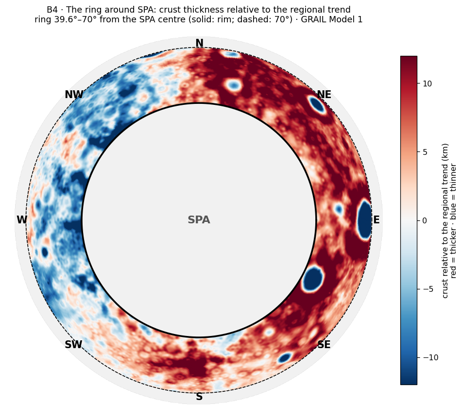
The figure shows only the band outside the rim, with the trend removed. The red band is the ring; it is broad and continuous on the eastern side and fades on the western side.
The direction. We decomposed the thickness in the ring 45–60° by direction. Going around the ring, the thickness rises and falls, and that variation can be split into simple patterns. The one-sided component is a ring thick on one side and thin on the side opposite, like a tilted plate; its strength is how much thicker the thick side is, and its direction is where the thick side points. The two-sided component is a ring thick on two opposite sides and thin on the two sides between them, like an oval. There is a strong one-sided component — thick on one side and thin on the side opposite — and a weaker two-sided component. To make sure that the finding does not depend on how the ring is defined, we also measured it on the ellipse of the basin ( km), in both published tilt directions:
| Ring shape | One-sided component (km) | Direction of the thick side | Two-sided component (km) |
|---|---|---|---|
| Circle (39.6°) | 7.8–8.9 | 96–97° | 2.9–3.3 |
| Ellipse, long axis ° | 8.0–9.1 | 98° | 4.3–4.9 |
| Ellipse, long axis ° | 7.7–8.6 | 98–99° | 3.5–4.0 |
Range between Models 1 and 4. Direction measured from north (0°) through east (90°). The redder the cell, the stronger the asymmetry.
Each row draws the ring in a different shape: as a circle, and as the published ellipse of the basin tilted one way and the other. Look at the middle column: the thick side points to 96–99° in all three rows, that is, almost due east. The one-sided component is 7.7–9.1 km in all three, more than twice the two-sided one.
The asymmetry does not depend on the shape: for the circle and for the ellipse, in both tilts, the thick side is the east (96–99°), with almost the same strength.
The surface in which the ring formed. The crustal map shows that SPA sits at the edge of the far-side highlands — the thickest crust on the Moon — to its north and north-east. The east-facing asymmetry could therefore be only that slope of the highlands, which the ring happens to cross, and not a property of the ring. We therefore followed the crust from the centre outward, to 90°, in every direction, and compared the ring with the crust farther out in the same direction:
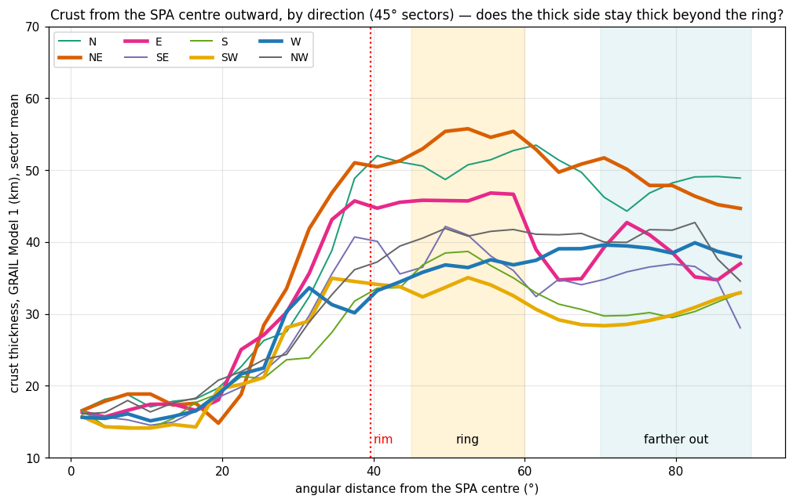
The eight lines of the figure are eight walks out of the basin. Near the centre they lie on top of one another; outside they fan out, each toward the thickness of the region it enters. The question is whether a line rises at the ring and falls again beyond it — a bump — or only climbs toward its own regional level.
| Direction | The ring (45–60°) | Farther out (70–90°) | Bump of the ring |
|---|---|---|---|
| North | 50.9 | 47.6 | |
| North-east | 54.8 | 47.4 | |
| East | 46.2 | 38.4 | |
| South-east | 38.7 | 34.8 | |
| South | 37.1 | 30.6 | |
| South-west | 33.5 | 30.4 | |
| West | 36.7 | 39.0 | |
| North-west | 41.3 | 39.7 |
km, Model 1 (Model 4 is similar: mean ). The redder the cell, the larger the bump; blue: the ring is thinner than its surroundings.
The last column is the ring minus the crust farther out in the same direction. Comparing each direction with itself removes the slope of the highlands: a direction that is thick because the highlands are thick there is thick both at the ring and beyond it, and the difference cancels. What is left is the ring’s own height. Seven of the eight cells are red; only the west is blue.
The surface itself slopes — thick in the north-east and thin in the south-west, far beyond the ring; the ring formed within a slope that already existed.
The ring is a real bump above that surface — 3.9–4.4 km on average — in seven of eight directions.
The asymmetry of the bump itself is about half as large: 3.7–4.4 km (against 7.8–8.9 km on the regional baseline), and still towards the east. In the west there is no bump. About half of the east-facing asymmetry therefore belongs to the surface the ring formed in, and about half to the ring itself.
The bump is seen in elevation too, not only in the crustal model (LOLA, the ring against 70–90° in the same direction):
| Direction | N | NE | E | SE | S | SW | W | NW |
|---|---|---|---|---|---|---|---|---|
| Bump in elevation (km) |
This matters because the crustal thickness is a model built on gravity and assumed densities, while the elevation is measured directly by laser. The two are independent, and they agree: the surface over the ring stands up to about 2 km higher than the surface beyond it, highest in the north-east and east, and in the west it stands lower.
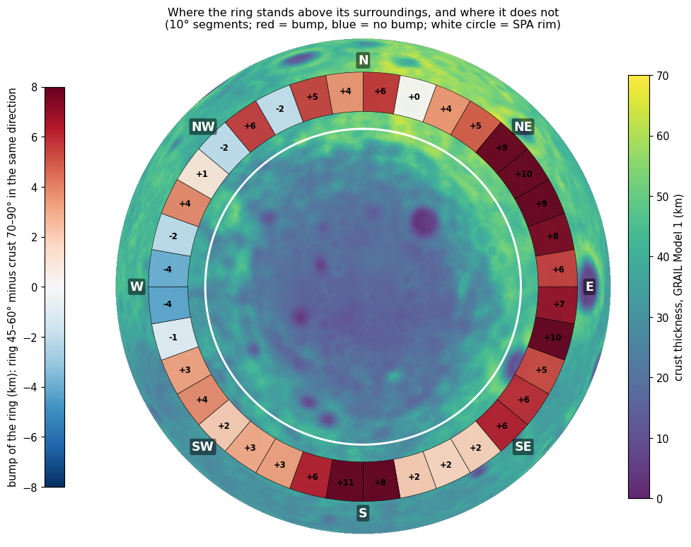
The figure repeats the comparison of the table in finer steps, 36 directions instead of eight, so that the gap in the west can be seen as a continuous stretch of about 40°, not a single unlucky sector.
The surface outside the ring does not set the height of the bump: over 24 directions there is no relation between the height of the bump and the crustal thickness behind it (correlation ) or the elevation of the surface there (). A correlation of would mean that the bump grows exactly as the crust behind it grows, and that it shrinks exactly; values this close to zero mean that the two are unrelated. In the south, where the crust behind the ring is thinnest ( km) and the surface is low, the bump is among the highest; in the west, where the crust is thicker (–41 km), there is no bump.
The openings in the western ring are not the cause: openings 28 and 29 (Tsiolkovskiy) cover about 44% of the western ring, but when they are removed, with a halo of 100 km, the bump does not return ( km).
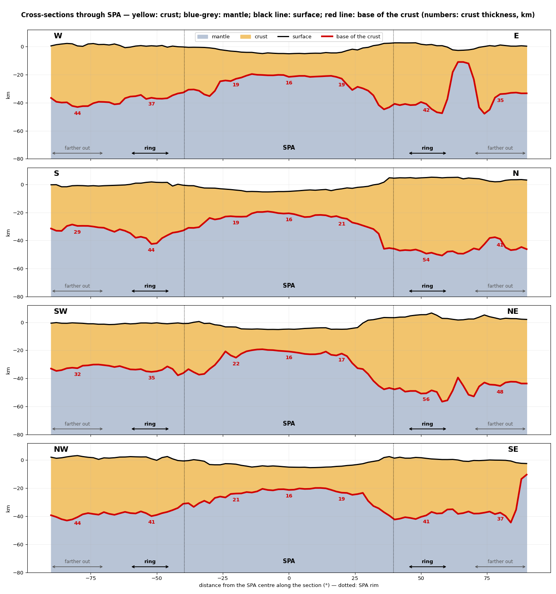
The cross-sections cut the basin as one cuts a cake, to show the layers from the side. The top line is the ground, the red line the base of the crust; the yellow between them is the crust.
The bump is a root extending downward. In the cross-sections the base of the crust beneath the ring sinks into the mantle and then rises again: in the south 44 km at the ring against 29 km farther out, in the north 54 against 41, in the north-east 56 against 48, in the east 42 against 35. In the west (37 against 44) and the north-west (41 against 44) there is no root; the base of the crust deepens gradually outward. A crust that floats on a denser mantle carries extra thickness mostly below, as an iceberg carries most of its bulk below the water; so the thickened ring shows above as a low bump of 1–2 km and below as a root of 7–15 km.
There is also an inner ring, 30–43° from the centre, and the two complement each other: where the outer ring is weak — in the west, north-west and south-west — the inner one is mostly strong. The inner ring is treated as a separate anomaly (B5).
Why is the crust around the basin thicker than usual, and why in the eastern half in particular, and thin in the western half?
The ring is the ejecta blanket of the impact: the excavated crust was thrown outward and piled up around the basin. In an oblique impact most of the material is thrown forward, in the direction of travel. The literature has two hypotheses for the direction:
| Hypothesis | Source | Where excess material is expected |
|---|---|---|
| South-east to north-west (the older) | Melosh et al. 2017 (a body of km, km/s, 45°) | North-west (down-range); almost nothing behind |
| North to south (the newer) | Andrews-Hanna et al. 2025; Wakita et al. 2026 | South (down-range), and two “wings” to the sides — east and west — in a butterfly pattern; km down-range, km to the sides. Wakita et al.: mantle material up to km to the west, and a thinner, closer layer in the east |
“Down-range” is the direction in which the impacting body was travelling. The table states, for each hypothesis, where its own simulations put the thrown-out material; these are the predictions against which the measured ring is set in Step 4.
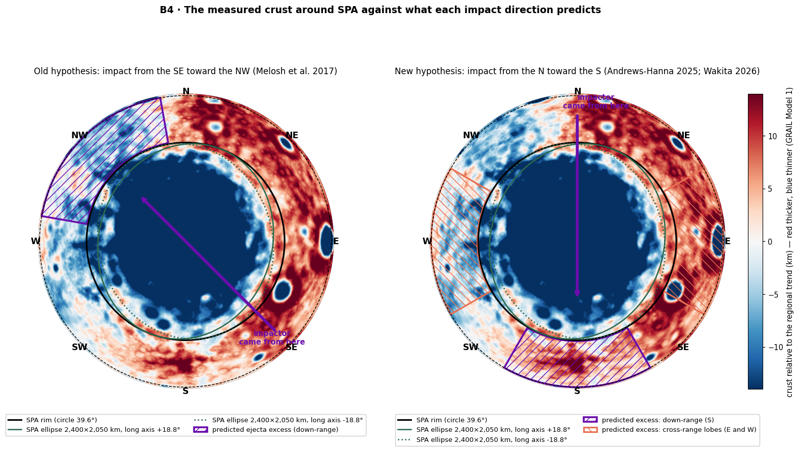
The figure lays each prediction over the measured crust. Where a hatched or coloured area falls on red, the prediction is met; where it falls on blue, it is not.
The older hypothesis predicts the opposite of what is found: where excess is expected — the north-west — the crust is thin.
The newer hypothesis fits in part: there is a bump in the south ( km), as expected, and in the east (), as expected — but in the west there is no bump at all (), whereas the two wings should be alike, and in the simulation of Wakita et al. there is even more material in the west.
We found no published prediction of the pattern “thick east, thin west”; this is a new measurement.
The amount of material: the ring out to 60° holds only about 37% of the crust missing from the basin. In the simulations a large part of the ejecta flies far or melts; this therefore does not contradict the impact, but it does not support it either.
In the accepted reading, too, the interior is levelled: a giant impact produces a large melt sheet, which differentiates and levels into a flat floor, so a flat floor and a uniform interior crust are explained by it as well. What distinguishes the explanations is the duration of the cooking: impact melt cools relatively quickly (see B11, B15).
There is no groove deepening along the trajectory (Figure B4.6): along both axes the floor is broad and flat, to km over km. At the angles proposed for SPA (30–45°) science does not predict a groove; one forms only in an impact at a very low angle, below about 15°. An asymmetry of the margins along the north–south axis was found: a high, steep northern rim and a low, gradual southern one — the argument of the newer hypothesis.
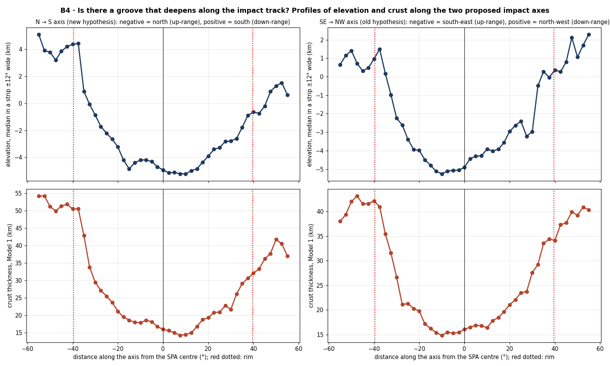
The figure is a check on the impact reading on its own terms: it looks along each proposed path for a trench, and finds a flat floor instead; and it shows the one asymmetry that the newer hypothesis uses in its favour, the steep north and gentle south of the rim.
EXPLAINS PARTLY There is a ring, and the thickening in the south and east fits the newer hypothesis; the thinness in the west and the inequality between the wings are not explained.
In B3 the crust slid and was pushed off the heated dome. B4 asks where it went, and why it went more to some sides than to others. The answer lies in the crust that the heat met around the dome.
The heat came from below and was strongest at the centre of the subsurface dome. It melted the region on every side, but the crust around the dome was not uniform: thick in the north-east, where the far-side highlands border the basin, and thin in the south-west. In the north-east lies Apollo, the largest opening in SPA, a mare (an opening) that existed before and was activated again by the heat from below.
The thick north-eastern side was melted much: a large amount of crust was moved there, and it left a ring in the north-east. The western side was melted little and gave little material, so no ring formed there. In the north-east the heated zone is narrow and the rings lie close to the basin; in the west and south-west the heated zone is broad, and the distance between the rings is large.
Why a hill remained — cooling from the outside inward. During the heating the region rose into a flat dome. When the heat source calmed, as the flattening relaxed before the release, the dome began to subside — but the cooling was not uniform. The outer part, the ring, cooled first and “froze” in a raised state, in a long process; the central part stayed hot longer and subsided only at the end. A ring-shaped hill was thus left around a depression, as a cake whose edges set first stands high at the rim while its soft centre sinks as it cools. What cooled first also compacted less, so the ring kept more of its thickness (the root seen in the cross-sections, Figure B4.4), while the centre, which stayed hot, compacted and contracted (B2). In the west the crust was melted little and little material piled up; the margin subsided together with the centre, and so there is no hill there.
A bump is not the default. A region that was heated, cooled and subsided gives a smooth transition to the original surface — a “zero line” — with no hill in between. This is the case in the west. The bump in the other directions is an addition: the crust that was pushed and slid from the centre and piled up at the margins.
Inside the basin the heat levelled everything, like a water reservoir, to a uniform level. Outside it the original surface was preserved — thick in the north-east, thin in the south-west. The crust pushed outward from the centre and slid off the dome (B3) piled up at the margins — in the outer ring or, closer in, in the inner ring (B5). In the cooling that followed, everything subsided: the layers compacted and contracted in proportion to their thickness.
The model predicts the strongest heat at the centre of the dome; a ring where the thick north-eastern crust was melted much, and none in the west, where the crust was melted little; a narrow heated zone facing the thick side; the thinnest crust on the thin side; uniform crust inside the basin; the original surface outside it; and material piled at the margins.
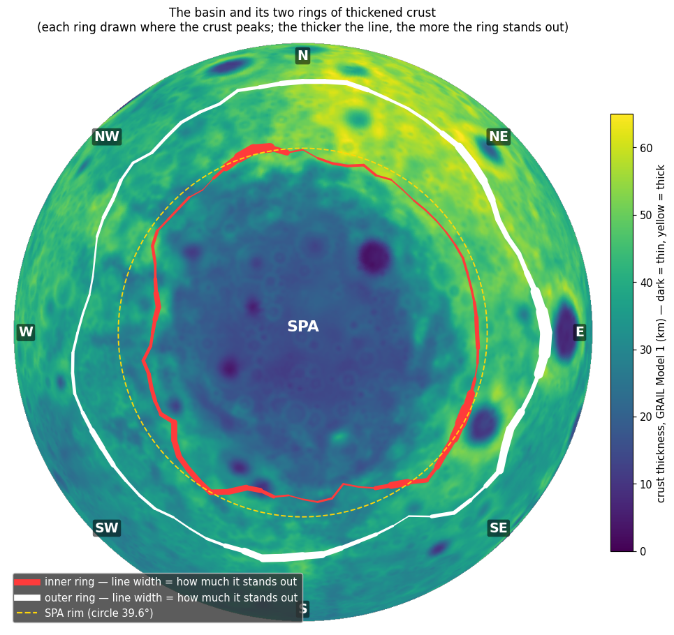
The figure draws both rings on one map. Where the white line is thick the outer ring is strong; where it thins, in the west, the red inner ring is the strong one, and the gap between the two is wide.
The table below sets each prediction of Step 5 beside the measurement that tests it. The left column is what the model requires; the right column is what was found, with the section where it was measured.
| What the model predicts | What is found |
|---|---|
| The strongest heat at the centre of the dome | The crater minimum lies within 6° of the dome centre (C.3); Chang’e-6, whose samples show prolonged heating (B11, B12, B15), landed 11.6° from it, inside Apollo |
| A ring where the thick crust was melted much, none where it was melted little | The ring is thick to the east: one-sided component 7.7–9.1 km toward 96–99° (Research 3); no bump in the west |
| A narrow heated zone facing the thick side | The thin zone is narrowest in the north-east: the crust passes 30 km already at 24°, against 29–37° in the other directions (Model 1; an earlier version gave 29–33°; in Model 4 the east, 23°, is as narrow) (B3) |
| The thinnest crust on the thin side | SPA’s own thin crust is centred 150–190 km south-south-west of the centre; the lowest ground and the dense mass lie in the south (B2, B3) |
| A large distance between the rings on the thin western side | West and south-west: –24°; south: –17° |
| Uniform crust inside | Out to ° from the centre all eight directions converge to 15–19 km; outside the basin 28–56 km (Figure B4.2) |
| The original surface outside | In the north-east thick and staying thick; in the south-west thin and staying thin |
| A hill left where the margins cooled first | A hill of to km and a crustal root on the sides where much crust was melted and piled; in the west, where the crust was melted little, no hill ( km) and no root |
| Material piled at the margins | The outer ring stands out in seven of eight directions (3.9–4.4 km on average); in the west the material piled closer in, in the inner ring |
The division left open in B3 — a weak crater record in the north, thin crust in the south — now falls into place without a separate source: the heat rose beneath the centre of the dome and worked on a crust that was thick in the north-east and thin in the south-west; the north keeps the record of the erased craters (B1), the south the thinnest crust, the lowest ground and the dense mass.
FITS Each prediction of the model — the strongest heat at the centre of the dome, the ring where the thick crust was melted much and its absence in the west, the narrow heated zone facing the thick side, the uniform interior, the preserved outer surface, the hill and root where the margins cooled first, and the material piled at the margins — is found in the measurements.
Data and code.
| Data | Source |
|---|---|
| Crustal thickness | GRAIL, the four models of Wieczorek et al. 2013; baseline: Legendre polynomial of degree 4 in distance from the sub-Earth point (independent check, SPA8_GRAIL) |
| Elevation | LOLA LDEM_4 |
| Ellipse | Garrick-Bethell & Zuber 2009 — km; two tilt directions, ° |
| Literature on the impact direction | Melosh et al. 2017; Andrews-Hanna et al. 2025; Wakita et al. 2026 — through a literature review (30.9.2026) |
| Code | b4.py, b4full.py, b4groove.py; profiles by sector and local comparison (30.9.2026) |
The baseline is the regional trend removed in Step 1: a smooth curve of crustal thickness against distance from the sub-Earth point (the point on the Moon that faces the Earth), which carries the change from the thin near side to the thick far side and nothing smaller.
Open. The relation to the inner ring is set out in B5. The relation to the rounding (correlation to ; 5.7% of random axis systems reach it) awaits a block test. The rounding is the change of the young Moon from a flattened figure to a sphere (Paper 7), which compressed the surface in some directions and stretched it in others; the ring is thicker where that strain compressed. A random set of axes reaches the same correlation in 5.7% of trials, which is suggestive but not yet decisive; a block test, which keeps neighbouring directions together when shuffling, will tell whether it holds. The young basins and craters in the ring (the blue spots) are to be removed, to check that the asymmetry remains.
The phenomenon. The crust around SPA is thicker than the regional crust. The gap in knowledge. Whether the thickening is a ring that stands above the surface around it in every direction, or a slope of the far side that the basin happens to cut, and in which direction it is uneven, has not been measured direction by direction. The research question: where around SPA is the crust thickened, by how much above the crust farther out in the same direction, and in which direction is the ring thick and thin?
The ring is read as the ejecta blanket of an oblique impact, thickest down-range: to the north-west for an impact from the south-east (Melosh et al. 2017), to the south with two equal wings to east and west for an impact from the north (Andrews-Hanna et al. 2025; Wakita et al. 2026). What is new here: the ring is measured against the crust farther out in the same direction, so that the slope of the far side is removed, in 8, 24 and 36 directions, on the circle and on the ellipse, in crust and in elevation.
The crust that slid off the dome piled up at its margins where the thick crust was melted much, and not where the crust was melted little; so a ring stands above the crust farther out in most directions, thick on the side of the thick far-side crust and missing on the thin western side.
Type of research: quantitative; crust and elevation by direction and ring. The sample: the four GRAIL crustal models, regional trend removed (degree 4); the ring 45–60° against 70–90° in the same direction; LOLA elevation. The tools: code that decomposes the ring into one- and two-sided components on the circle and on both ellipses, and profiles the base of the crust in cross-sections.
The ring was read in every direction in all four models; the openings in the western ring were removed with a halo of 100 km as a check. The values are the tables and Figures B4.1–B4.6.
The ring. A thickening of 3.8–5.7 km at 50–55°, standing above the crust farther out in seven of eight directions, 3.9–4.4 km on average; a root of the crust beneath it in the south, north, north-east and east. The direction. The one-sided component is 7.7–9.1 km toward 96–99°, nearly the same on the circle (7.8–8.9 km) and on both ellipses; the bump itself is uneven by 3.7–4.4 km, still toward the east. The west. No bump ( km; km in elevation), and none returns when the openings are removed. The surface behind. The height of the bump is unrelated to the crust or the elevation behind it (, ).
Result. The hypothesis is supported: a ring stands above the surface around it in seven of eight directions, thick to the east and missing to the west, an east–west asymmetry that neither impact direction predicts. Limitations. The baseline of the regional trend is a choice; the ring holds only about 37% of the crust missing from the basin; young basins and craters within the ring remain to be removed. Directions for further research. The ring with the young basins removed; its relation to the strain of the rounding by a block test (Paper 7).
B5The inner ring
In brief. Besides the outer ring (B4), SPA is surrounded by a second ring of thickened crust, close to the basin — 28–44° from its centre — and it is the clearer and more precisely defined of the two. It is not a circle: it lies farther out in the north-east and east and closer in the south-west and west; its centre lies –120 km east-north-east of the SPA centre. The inner wall is steepest in the north and north-east and gentlest in the south and south-west.
This section asks three questions of that ring: is it really there all the way round, where is its centre, and on which side is its wall steep. The answers carry weight because the shape of a basin’s rim records the process that made it. An impact leaves a pattern tied to the direction of flight; a dome that rose under the heat and spread against the surrounding crust leaves a pattern tied to that crust. The section also explains how the change of the young Moon from a flattened figure to a sphere changed the distances on its surface, and with them the distances that we measure today between SPA and the points that fed it.
The basin and its two rings of thickened crust are shown in Figure B4.7. A ring of thickened crust is a belt around the basin in which the crust — the light outer shell of the Moon, which floats on the denser mantle beneath it — is thicker than on either side. GRAIL, the twin spacecraft that mapped the Moon’s gravity, gives the thickness of this shell everywhere: where the crust is thick, light material replaces dense mantle and the pull of gravity is slightly weaker. In Figure B4.7 the inner ring is the red line and the outer ring of B4 the white line; the yellow dashed circle is the rim as a circle at 39.6° from the centre. One degree of arc on the Moon is about 30.3 km of surface, so 39.6° is about 1,200 km.
How we measured. In each of 24 directions (every 15°) we searched for the peak of crustal thickness between 28° and 44° from the centre, and for how far it stands above its neighbours. That second quantity is the prominence: like the height of a hill above the saddles on either side of it, it says how clearly the peak stands out, not how thick the crust is in absolute terms. A ring that is real should show a peak with a clear prominence in most directions; a ring that is only noise would give peaks of small prominence, scattered in distance. The findings are the same in Models 1 and 4 — two of the published GRAIL crustal models (Wieczorek et al. 2013), built with different assumptions — so they do not depend on the choice of model.
The table lists, for each direction, the distance of the peak from the centre, its prominence, the thickness of the crust at the peak, and, for comparison, the thickness of the crust on the basin floor in the same direction. Directions are measured from north (0°) clockwise through east (90°), south (180°) and west (270°).
| Peak distance | Prominence | Crust at peak | Floor crust | |||
| Direction | Model 1 | Model 4 | Model 1 | Model 4 | Model 1 / 4 | Model 1 / 4 |
| 0° N | — | — | 0.0 | 0.0 | — | 18 / 25 |
| 15° | 44° | 39° | 6.2 | 10.5 | 57 / 71 | 19 / 26 |
| 30° | 38° | 38° | 2.3 | 5.2 | 54 / 68 | 19 / 27 |
| 45° NE | 36° | 36° | 2.6 | 4.4 | 52 / 66 | 18 / 25 |
| 60° | 38° | 38° | 3.1 | 4.1 | 50 / 61 | 17 / 24 |
| 75° | 37° | 37° | 2.8 | 2.8 | 49 / 60 | 18 / 25 |
| 90° E | 37° | 37° | 8.1 | 11.3 | 48 / 59 | 17 / 25 |
| 105° | 44° | 44° | 2.5 | 3.2 | 47 / 59 | 16 / 23 |
| 120° | 38° | 38° | 23.9 | 30.3 | 47 / 59 | 15 / 22 |
| 135° SE | 42° | 42° | 2.2 | 2.6 | 45 / 55 | 15 / 22 |
| 150° | 43° | 42° | 4.1 | 6.2 | 40 / 51 | 15 / 21 |
| 165° | 34° | 34° | 2.1 | 3.4 | 31 / 40 | 15 / 21 |
| 180° S | 42° | 42° | 1.9 | 3.8 | 36 / 46 | 15 / 21 |
| 195° | 30° | 30° | 7.6 | 10.7 | 29 / 38 | 15 / 21 |
| 210° | 28° | 38° | 5.3 | 7.3 | 26 / 48 | 14 / 20 |
| 225° SW | 34° | 34° | 8.3 | 11.0 | 38 / 49 | 14 / 21 |
| 240° | 34° | 28° | 5.1 | 6.7 | 35 / 39 | 15 / 22 |
| 255° | 33° | 33° | 6.7 | 9.2 | 34 / 44 | 15 / 22 |
| 270° W | 31° | 31° | 4.5 | 6.4 | 35 / 45 | 16 / 22 |
| 285° | 30° | 30° | 9.5 | 13.9 | 40 / 52 | 16 / 22 |
| 300° | 37° | 37° | 5.8 | 9.6 | 45 / 58 | 15 / 22 |
| 315° NW | 35° | 35° | 5.5 | 8.2 | 34 / 44 | 18 / 26 |
| 330° | — | — | 0.0 | 0.0 | — | 18 / 25 |
| 345° | 40° | 40° | 6.8 | 10.2 | 49 / 62 | 17 / 24 |
Prominence and crust in km; floor crust: mean to 15° from the centre. Distance: bluish — far from the centre; orange — close. Prominence: the redder the cell, the more the ring stands out. “—”: no peak in the range.
How to read the table: follow the distance columns from top to bottom and the colour turns from blue (far) in the first half of the circle, the north-east, east and south-east, to orange (close) in the second half, the south-west, west and north-west. The ring is therefore displaced as a whole, not ragged. In the prominence columns the strong red cells mark where the ring stands out most. The last two columns show how large the ring is compared with the basin floor: the crust at the peak is 26–57 km in Model 1 and 38–71 km in Model 4, against 14–19 and 20–27 km on the floor, so the ring is two to three times as thick as the floor beside it. Model 4 gives systematically thicker crust than Model 1, but the pattern of distances and prominences is the same in both.
The ring is present almost all the way round: in 22 of 24 directions (it is missing in the north, 0°, and in the north-north-west, 330°).
It is strongest in the south-east at 120° ( to km), the north-west at 285° ( to ), the east at 90° ( to ) and the south-west at 195–225° ( to ).
Its distance varies: in the north-east and east 36–44°; in the south-west and west 28–34°, that is, inside the circle of the rim.
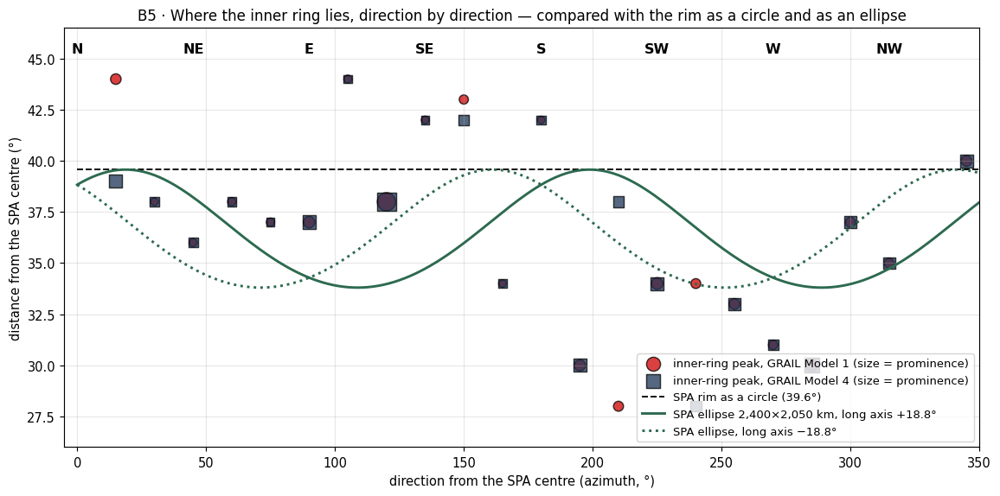
Figure B5.1 draws the same peaks on a map seen from above the basin. What to look at: the symbols do not follow the dashed circle of the rim, nor the green ellipses. They lie outside the circle in the north-east and east and inside it in the south-west and west, so that together they trace a circle of their own, pushed toward the east-north-east.
To put numbers on that impression we fitted a ring to the 22 peaks: a circle whose centre and radius are free, allowed also to be slightly elongated. The fit gives the shape of the inner ring (fit by direction):
| Measure | Model 1 | Model 4 |
|---|---|---|
| Mean radius | 36.8° ( km) | 36.6° ( km) |
| Position of the ring centre relative to the SPA centre | km towards 68° (east-north-east) | km towards 82° |
| Ring centre | 51.4°S, 196.8°E | 52.4°S, 196.8°E |
| Elongation | 2.6° along the axis 152°/332° (north-north-west – south-south-east) | 2.5° along the axis 155°/335° |
The table says three things. The ring has a radius of about 37°, just inside the circle of the rim (39.6°). Its centre lies about 110–120 km from the SPA centre, toward the east-north-east, in both models. And it is very nearly a circle: the difference between its long and short directions is only 2.5–2.6°, about 80 km on a ring more than 2,200 km across. The ring is displaced, not stretched.
The inner ring is not the accepted ellipse. The ellipse ( km) predicts a ring close in the east and west and far in the north and south; the ring actually lies far in the north-east and east and close in the south-west and west — like a circle whose centre lies east-north-east of the SPA centre.
The inner wall — the steepest slope between the basin floor and the ring (expected: steep on the resisting side, gentle on the less resisting side). By “resisting side” we mean the side where the surrounding crust is thick and cold and stopped material moving outward from the basin; there the ground climbs abruptly from the floor to the ring. Where the crust offered less resistance, the material spread farther and the climb is gradual. The wall is measured in two independent ways: in the crustal thickness from GRAIL (how many kilometres the crust thickens per 100 km of distance) and in the surface elevation from the laser altimeter LOLA (how many metres the ground rises per kilometre):
| Direction | In crustal thickness (km per 100 km) | In elevation (m per km) |
|---|---|---|
| North | 10.5 | 25.3 |
| North-east | 9.3 | 30.7 |
| East | 8.0 | 17.8 |
| South-east | 6.3 | 18.5 |
| South | 4.9 | 14.9 |
| South-west | 6.6 | 11.5 |
| West | 7.3 | 16.0 |
| North-west | 4.4 | 20.8 |
The redder the cell, the steeper the wall. Steepest: north and north-east; gentlest: south and south-west.
Read the two columns together. In the crust the north is steepest (10.5) and the north-east next (9.3); in the elevation the north-east is steepest (30.7 m/km, a rise of about 3 km over 100 km) and the north next (25.3). In both, the south and south-west are among the gentlest. The two measures come from different instruments, and they agree on the side of the steep wall: the north and north-east, where the far-side highlands — the thickest crust on the Moon — border the basin (B4).
Figure B5.2 shows the ring in profile, as if the Moon were cut through the basin. The yellow layer is thin under the floor and thickens abruptly near the dotted rim; that abrupt thickening is the inner ring. Comparing the two ends of a section that runs from north-east to south-west shows the asymmetry of the wall directly: a cliff-like rise on one end, a long ramp on the other.
Why are there two rings of thickened crust, why is the inner one not round and centred east-north-east of the basin centre, and why is its wall steep in the north-east and gentle in the south-west?
In large impact basins the rim is raised, and around it a collar of thickened crust piles up (the crustal collar): material thrown and pushed out of the cavity comes to rest just beyond its edge. In three-dimensional models of SPA the collar appears, and is even larger than measured (Citron et al. 2024). In an impact travelling from north to south, the side towards which it travelled (the south) is gentle and gradual, and the side from which it came (the north) is steep (Andrews-Hanna et al. 2025). In this reading the asymmetry of the wall is a record of the direction of flight of the impacting body.
The wall is steep in the north and gentle in the south, which fits an impact from north to south.
But the steepest wall is in the north-east (30.7 m/km) and the gentlest in the south-west (11.5) — a north-east/south-west axis, not a north/south one.
The centre of the inner ring lies –120 km east-north-east of the SPA centre, roughly perpendicular to the proposed impact axis. An oblique impact displaces the structure along its direction of flight, not across it.
The collar in the models is larger than measured (Citron et al. 2024); here there are two rings, and the inner one is strong in the south-east ( to km).
EXPLAINS PARTLY In impact models a raised collar of crust forms around the basin, but the explanation of its shape was built after the measurement: the impact direction was chosen to fit the steep northern rim. It predicts neither an inner ring centred east-north-east of the basin centre nor a north-east/south-west axis for the wall.
In the model SPA was not dug out; it was raised and then fell. Heat from the burners, Imbrium and Serenitatis, which came out on the far side and gathered beneath the region, pushed it up into a dome, its softened crust slid outward to the sides, and when the heat calmed the dome cooled and subsided into the basin we see (A.5). The rings are where the outward-sliding material came to rest against the crust around it.
The inner ring is the edge of the dome that rose. There is one inner ring and one outer ring — not two waves and not two events — and both are shaped by the thickness of the surrounding crust: thick in the north-east (the far-side highlands), thin in the south-west; the north-eastern side is steep in both. A thick, cold crust is a firm wall: material pressed against it piles up close and steep, like snow pushed by a plough against a kerb. A thin crust yields, and the material spreads farther and more gently.
The rounding changes distances on the surface; it does not move anything over it. The heat rose along a straight axis. The Moon then rounded — the same mechanism that produced the excess at the poles (Paper 7) — and the distances on the surface changed. Before the rounding the far side was the pointed end of an elongated body (1 : 0.637 : 0.601); in the rounding, what lay near that end came to lie farther from it, and the basin was stretched in that direction.
Why distances near the end grow can be seen with an elongated balloon, like a rugby ball, with dots drawn on it near one end. Seen from the centre of the balloon, the dots on the long, gently curved slope toward the end all lie within a narrow cone of directions. Press the balloon into a round ball: the end draws in and the body becomes round, and the same dots — still on the same patch of skin, none of them having slid — now lie within a wider cone. Their angular distances from the end have grown. For the figure 1 : 0.637 : 0.601 the growth near the end is the ratio of the long axis to the two short ones, and .
Near the end the distances grew by a local factor of 1.57–1.66; this factor holds for small angles near the end and is not a constant multiplier for all angles — at large angles the full mapping of the rounding is used. At the angles that matter for SPA the full mapping gives a smaller growth, about 1.4–1.5: the dome-to-exit distances grow from 17.0° and 21.2° on the flattened figure to 24.1° and 29.2° on the sphere (see Reference points below), and SPA’s distance from the far end — the point opposite the contact centre — grows from about 27° to 39.5°.
The rounding is not a rigid rotation: a rotation turns the whole surface together and keeps every distance between two points; the rounding changes the distances between points on the surface. SPA therefore did not move over the surface; the change from a flattened figure to a sphere changed the axes and the distances, and the position of the ring centre is a view produced by that change of shape. In short: about 27° from the far end at the burner’s time, on the flattened figure; about 39.5° on the sphere of today (A.5). The two numbers describe the same place on two shapes of the body.
Timing. The rounding stretched the basin late in the attached stage, after the flattening: once the Moon’s centre of mass had passed the corotation line, the flattened body rounded and parted, and at the release its exterior was already rigid and round (Paper 2, §B.7; Paper 7). The stretching is therefore part of the attached stage; nothing in it requires the Moon to change shape after it left the Earth.
Reference points. The reference point used earlier (23°N, 320°E, with its antipode at 23°S, 140°E) is not the reference. In its place are the exits of the two burners: Imbrium (main; antipode 37.6°S, 160.0°E) and Serenitatis (secondary; antipode 27.3°S, 198.4°E). The antipode of a point is the point diametrically opposite it on the globe; the heat that rose beneath Imbrium and Serenitatis reached the far side at these two antipodes, which we call the exits. The centre of the inner ring — the centre of the dome, 51.4°S, 196.8°E — lies 29.2° ( km) south-east of the Imbrium exit and 24.1° ( km) south of the Serenitatis exit. These are today’s distances, on the sphere. The initial angular distance before the rounding depends on the elongation: from the old reference point 38° (1 : 0.637 : 0.601), 20° (1 : 0.3 : 0.28) and 7° (1 : 0.1 : 0.094); from the new exits, with the full mapping of the rounding (1 : 0.637 : 0.601, long axis toward the contact centre, 24.1°N, 335.2°E), 21.2° (Imbrium) and 17.0° (Serenitatis); see C.3 and Figure C.1. Read in this direction, the calculation says: the more elongated the body was, the closer to the exit the dome lay at its birth; for the figure used in the series it lay about 17–21° from the exits, and the rounding opened this to the 24–29° measured today.
Small domes. Beneath each exit lies a local thin crust — Ingenii (12–16 km, 5.7° from the Imbrium exit) and the Apollo basin (5–9 km, 10° from the Serenitatis exit). The large dome is the wide thin zone at the centre, to the south of them. Each exit thus has a small dome of its own directly above it, and the large dome lies beyond both.
A hinge-like mechanism for an east–west component was also examined and set aside: in a Moon attached in steady rotation there is no east–west force, and the force from the outward rise is about times too small.
Reconstruction of the mechanism. The same mapping that stretches the distances also changes the size of every patch of surface, and with it the number of craters per unit area on that patch: where a patch shrinks its craters crowd, where it widens they thin out. Paper 7 measured this effect as density factors; the relaxation mapping reproduces them: pole (1.21), side (1.14), the point facing the Earth (0.73) — the figures in brackets are those of Paper 7. One mapping thus accounts both for the crater excess at the poles and for the stretching of SPA.
The table sets each statement of the model beside the measurement that tests it.
| What the model says | What is measured |
|---|---|
| The distance of SPA from the far end grew by a factor of about 1.5 (full mapping; is the small-angle factor near the end) | Today 39.5° from the point opposite the contact centre; at the time of the burner about 27° |
| A pear whose tip, with the Moon, stood at about 22.5° deflects the exit of the stream up to ° south (C.4); the rounding enlarges this to ° | The southward component of the separation: ° on the flattened figure, ° today — as predicted |
| The eastward component at the time of the burner ° | Today °; its origin is not yet explained |
| The inner ring is the edge of the dome; both rings follow the crustal thickness | A ring in 22 of 24 directions; its centre km ENE; the wall steep in the NE (30.7 m/km), gentle in the SW (11.5) |
The calculation assumes that the direction to the pole of that time is close to today’s south; the total magnitude (27° 39.5°) is more reliable than its division into components. Distances and components are measured from the point opposite the contact centre (24.1°S, 155.2°E) with the full mapping of C.3; an earlier version, measured from the point opposite the old reference 23°N, 320°E, gave 34–36° 48.6°, a southward component of 25° 38° and an eastward one of 20° 30°.
The first row is the rounding of Step 5 in one line: the place of SPA on the flattened figure and on the sphere. The factor given in earlier versions is the small-angle factor of the end; the pair 27° 39.5° is the full mapping at SPA’s distance. The second row splits that separation into its southward and eastward parts. The pear — the neck of material that joined the Moon to the Earth — had its base roughly on the equator of that time and its tip, with the Moon, at about 22.5°; its stream left the far side south of the point opposite by up to the latitude of the Moon (C.4); the full mapping gives a southward part of about 22° on the flattened figure, which the rounding enlarged to about 33° today. The eastward part grew in the same way from about 15° to about 22°; why it was 15° at the start is left open. The last row is the ring itself, as measured in Step 1.
FITS The inner ring, present in 22 of 24 directions, is the edge of the dome, and both rings follow the thickness of the surrounding crust; the rounding takes SPA’s distance from the far end from about 27° to the present 39.5°, with a southward component of about 33° as predicted.
What it shows. There are two rings, and the inner one is the clearer and more precise; its distance from the centre varies with direction. The inner ring is probably the true rim of the basin: it does not match the accepted ellipse but a circle whose centre lies east-north-east of the SPA centre. What matters is not how much resistance there was but where: in the west it was close, at the rim, so the material piled up in the inner ring; in the other directions it was farther out, and the material piled up in the outer ring. This is why the outer ring of B4 has no bump in the west, while the inner ring there stands close to the centre. The wall is steep on the resisting side (north-east) and gentle on the less resisting side (south-west), as expected and as measured. What we now have: a single rim, displaced toward the thick crust and steep against it, and a rounding that changed the distances around it without moving it.
Data and code.
| Data | Source |
|---|---|
| Crustal thickness | GRAIL, Models 1 and 4 (Wieczorek et al. 2013) |
| Elevation | LOLA LDEM_4 |
| Ellipse | Garrick-Bethell & Zuber 2009 |
| Code | b5.py (peaks in 24 directions; shape fit), ringsmap.py, b4xsec2.py |
Open. The source of the southward component is set out in C.4: the position of the pear and the forces of the rotation, enlarged by the flattening; the axes of that time are left for future work. The peak in the south-east is to be measured again after Mendel–Rydberg is removed; this requires the GRAIL and LDEM data of the second SPA data package. (Mendel–Rydberg is a younger basin at the edge of SPA; its own rim may add to the strong south-eastern peak.) The slope of the outer ring’s wall is to be measured in each direction. The full three-dimensional calculation in the axis system of the time of the rounding is deferred to future work. The literature is to be checked for whether a separate inner ring has been described at SPA, for what the models predict about the position and shape of the collar, and for how the SPA centre derived from the collar compares with that derived from topography. A second cooling front is to be considered: in the inner ring the outside-in cooling of B4 acted less. The floor between 20° and 40° shows saw-tooth peaks, read as a surface stretched smooth in the dome stage that wrinkled into teeth when the dome subsided; the test is how serrated this floor is (the scatter of crustal thickness and elevation on scales of tens of kilometres) compared with the centre and with the outside of the basin, and whether the teeth are aligned (parallel to the rim).
The phenomenon. Close inside the rim of SPA the crust rises sharply. The gap in knowledge. Whether this is a ring of its own, where its centre lies and how steep its inner wall is in each direction, has not been measured. The research question: is there an inner ring of thickened crust around SPA, what is its shape and centre, and where is its wall steepest?
Large impact basins carry a raised collar of thickened crust; models of SPA give a collar larger than measured (Citron et al. 2024); an impact from the north leaves a steep northern wall and a gentle southern one (Andrews-Hanna et al. 2025). What is new here: the peak of crustal thickness is found in 24 directions, a ring is fitted to it, and its wall is measured direction by direction in crust and in elevation.
The inner ring is the edge of the dome that rose; its shape is set by the thickness of the crust around it: its wall is steep on the side of the thick crust in the north-east and gentle on the thin side in the south-west, and its centre lies toward the thick crust of the north-east, against which the material piled up.
Type of research: quantitative; peak finding and fitting. The sample: GRAIL Models 1 and 4, peaks between 28° and 44° from the centre in 24 directions; LOLA elevation for the wall. The tools: code that finds each peak and its prominence, fits a displaced, elongated circle, and measures the steepest slope between the floor and the ring.
The peaks were found in both models with the same rule, and the ring fitted to them; the wall was read in eight directions. The values are the tables and Figures B5.1–B5.2.
The ring. Present in 22 of 24 directions; mean radius 36.6–36.8° (–1,116 km); centre –118 km east-north-east of the SPA centre, at 51.4–52.4°S, 196.8°E. The distance. 36–44° in the north-east and east, 28–34° in the south-west and west. The wall. Steepest in the north and north-east (9.3–10.5 km per 100 km in crust; 25–31 m/km in elevation), gentlest in the south and south-west.
Result. The hypothesis is supported: an inner ring exists, centred east-north-east of the basin’s centre, not the accepted ellipse, with its wall steepest on the north-eastern side. Limitations. The peaks depend on the crustal model; the ring is missing in two directions; the timing of the stretching by the rounding is inferred. Directions for further research. The ring and the outer ring together against the thickness of the far-side crust in a numerical model of a dome that cools from its margins inward.
B6 Density and porosity
In brief. At the surface, SPA has as much porosity as the highlands. At depth the pores are almost closed, and the closure is strongest at the centre and weakens gradually toward the rim. This is the same structure as the subsidence of B2.
Porosity is the fraction of a volume that is empty: the cracks and gaps between grains. Ground that has been broken up is porous, like a heap of gravel; ground that has been heated and pressed is compact, like a brick fired in a kiln, whose powder has fused and whose pores have closed. The porosity of SPA at depth is therefore a record of what happened to its ground: whether it was shattered, or cooked and compacted. This section reads that record, and finds that the ground beneath SPA was compacted, most of all at its centre — the pattern that heat accumulated and held longest beneath the centre leaves, and the same pattern as the extra depth of the basin in B2.
Grain density, surface bulk density, surface porosity and its change with depth are taken from GRAIL (Wieczorek et al. 2013), with linear and exponential depth models following Besserer et al. (2014) and grain density following Huang & Wieczorek (2012). The terms are simple. Grain density is the density of the solid material itself, with no gaps; it depends on composition (iron-rich minerals are heavier). Bulk density is the density of the ground as it lies, gaps included. The two are tied by porosity: bulk density = grain density (1 porosity). GRAIL gives the bulk density near the surface from how gravity follows topography, and also how fast the density rises with depth; the depth models carry that rise down, either at a steady rate (linear) or levelling off with depth (exponential). Using both shows whether a result depends on that choice.
The values are averaged in rings around the centre of SPA (53°S, 191°E) and compared with two reference regions, both of which are used: the far-side highlands (a cap of 20° around 45°N, 180°E) and the rest of the far side (the far hemisphere outside SPA, with SPA taken as 39.57° around 53°S, 191°E). Two references guard against a chance choice: the highlands are the crust that was not heated beneath SPA, and the rest of the far side is the broad average. From the surface to 10 km depth (linear model), porosity falls from 19.7% to 4.4% at the SPA centre, from 20% to 7.9% in the far-side highlands, and from 14.5% to 12.8% in the rest of the far side. At the surface SPA and the highlands start from the same porosity; by 10 km SPA has lost almost four fifths of its pores, the highlands about three fifths.
| Region | Grain density | Surface density | Surface | Porosity at 10 km |
| (kg m) | (kg m) | porosity | (exp. / linear) | |
| SPA 0–10° | 3,005 | 2,412 | 19.7% | 2.9% / 4.4% |
| SPA 10–20° | 2,991 | 2,411 | 19.4% | 3.1% / 3.2% |
| SPA 20–30° | 2,952 | 2,395 | 18.9% | 3.6% / 5.1% |
| SPA 30–40° | 2,917 | 2,353 | 19.3% | 4.2% / 6.2% |
| SPA 40–50° (rim) | 2,906 | 2,358 | 18.9% | 7.1% / 8.8% |
| Far-side highlands | 2,897 | 2,310 | 20.3% | 6.2% / 7.9% |
| Rest of the far side | 2,920 | 2,497 | 14.5% | 9.6% / 12.8% |
Check: surface porosity was recomputed directly from the GRAIL map (porosity_l250-650): 0–10° 19.746% (analysis table 19.745%), 10–20° 19.373% (19.373%), 30–40° 19.32% (19.35%).
How to read the table: each row is a ring around the SPA centre (the first five) or a reference region (the last two). The three middle columns are the surface. The grain density falls from 3,005 kg/m³ at the centre to 2,906 at the rim: the centre is made of heavier, iron-rich material. The surface porosity, however, hardly changes, 18.9–19.7% in every ring, close to the 20.3% of the highlands. The relation above can be checked on any row: at the centre , that is, about 20% empty. The last column is the depth of 10 km, and there the picture changes: 2.9–4.4% at the centre, rising ring by ring to 7.1–8.8% at the rim, which is about the value of the highlands (6.2–7.9%). In the exponential model the rise is steady from the first ring; in the linear model the two innermost rings are close (4.4 and 3.2%), and from 10–20° outward the rise is steady.
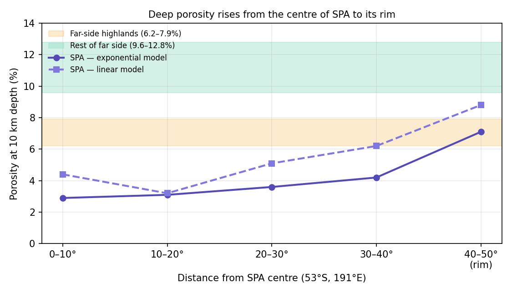
Figure B6.1 draws the last column of the table against distance. What to look at: both curves lie below the two coloured bands of the reference regions across the basin, and climb toward them at the rim. Inside SPA the ground at 10 km has fewer pores than anywhere around it, and the fewer the closer to the centre.
Why does the surface of SPA have no less porosity than its surroundings, while at depth the pores are almost closed? And why is the closure strongest at the centre and weakening gradually toward the rim?
The high density of the SPA floor is explained by composition: iron- and pyroxene-rich material with a grain density of about 3,000 kg m (Huang & Wieczorek 2012). (Pyroxene is a common iron- and magnesium-bearing mineral, heavier than the feldspar of the highlands.) Porosity in the lunar crust is created mainly by impact fracturing and closes with depth under pressure and creep (Wieczorek et al. 2013; Besserer et al. 2014). Creep is the slow flow of solid material under load; it is what lets the weight of the layers above squeeze the gaps shut, and it is far faster in warm material than in cold. In a large impact the crust beneath the basin is fractured and becomes more porous; prolonged heating can close pores.
Consistent: the high grain density at the centre, which follows from composition.
Not consistent: an impact predicts more fracturing and more porosity beneath the basin; at depth less was found, 2.9–4.4% at the centre against 6.2–12.8% in the surroundings.
Not consistent: the closure weakens continuously from the centre to the rim in both depth models; a short-lived impact provides no mechanism for this. Pressure alone does not provide one either: at the same depth the weight of the layers above is about the same inside and outside the basin, so pressure closes the pores equally everywhere. What closes them more in one place than in another is heat that lasted, and a closure that is greatest at the centre needs heat that was greatest at the centre.
EXPLAINS PARTLY Composition explains the density; it does not explain a compaction at depth that weakens gradually from the centre outward.
The layers of returning material were full of pores. Material that rose from the Earth, very hot and rich in volatiles, landed on the young Moon again and again and built up in layers that kept gaps as their volatiles escaped. The heat of the burners, which came out on the far side and accumulated beneath SPA, baked them from below, most strongly at the centre, where it was held longest. Warm material creeps, and under the weight of the layers above it the gaps squeeze shut: the ground was cooked and compacted, as clay is in a kiln. The heat source calmed as the flattening relaxed, before the release, and as the Moon receded into space after the release cooling took over: the baked layers compacted and contracted, and the pores closed, mainly at depth and most of all at the centre. Closed pores at depth are thus the mark of ground that was held hot for a long time; the more closed, the hotter or longer it was held, and the gradient from the centre to the rim is the shape of the heat source itself.
At the surface, a kind of seepage and evaporation re-created pores, which is why the surface of SPA resembles the highlands. No molten material broke out: the volatiles evaporated and escaped upward through openings they made for themselves, which closed again with the heat, and their passage left the top layer full of voids, while at depth nothing opened the closed pores again.
The model’s prediction: at depth, the pores are more closed at the centre and less closed with distance from it. It is tested in step 6.
The table sets each statement of the model beside what the GRAIL values show.
| The model says | What was found |
|---|---|
| The pores closed mainly at depth | Surface 19.7% (as in the highlands, 20.3%); at 10 km 2.9–4.4% (against 6.2–7.9% in the highlands and 9.6–12.8% in the rest of the far side) |
| The closure is strongest at the centre and weakens outward | Exponential: 2.9 3.1 3.6 4.2 7.1%; linear: 4.4 3.2 5.1 6.2 8.8% |
| The compaction is the subsidence of B2 | The porosity difference times the thickness (0–20 km) gives 0.5–1.2 km; the B2 residual is 1.1–1.8 km within 10° of the centre, 0.5–1.2 km at 10–20° and 0.2–0.3 km at the rim (an earlier version cited it as 0.5–1.5 km). The compaction matches the residual of the 10–20° ring and gives from about a third to all of the central one, with the same structure, largest at the centre |
| The surface was rebuilt by a kind of seepage of volatiles | No reduced porosity at the surface |
The third row joins this section to B2, and its arithmetic is simple. When a layer of thickness loses a fraction of its volume as its pores close, and the closing is taken up vertically, its top sinks by . The difference in porosity between SPA and its surroundings, taken over the top 20 km, gives a sinking of about 0.5–1.2 km. B2 found that the floor of SPA lies deeper than its thin crust alone explains, by 1.1–1.8 km within 10° of the centre, 0.5–1.2 km at 10–20°, falling to 0.2–0.3 km at the rim. The compaction is of the size of the residual in the 10–20° ring and makes up from about a third to all of the residual at the centre; the rest of the central residual is left, in the model, to the material lost (B2). The pores that closed are most of the depth that was missing.
FITS The pores are closed at depth and not at the surface, the closure weakens from the centre to the rim as predicted, and the compaction accounts for much of the subsidence of B2.
What it shows. The depth values are computed from models (GRAIL measures the surface and the change with depth), so the evidence is indirect; it is, however, consistent in both depth models and against both comparison regions. The compaction at depth and much of the subsidence of B2 are one quantity seen twice, with the same centre-outward structure: once as missing pores in the gravity, once as missing height in the topography. What we now have: ground beneath SPA that was cooked and compacted from below, most at the centre, as heat accumulated beneath the centre requires.
Data and code.
| Data | Source |
|---|---|
| Surface density and porosity | GRAIL, Wieczorek et al. (2013) (porosity_l250-650) |
| Change with depth | Linear and exponential models, Besserer et al. (2014) |
| Grain density | Huang & Wieczorek (2012) |
| Ring analysis and comparisons | density_analysis.py and
results/*.csv; archive folder
14_GRAIL_density_ring_chatgpt |
Open. The subsidence was computed from the ring means; an exact computation from the maps is still to be done (not blocking).
The phenomenon. The floor of SPA is dense. The gap in knowledge. Whether its density is composition alone, or also pores closed at depth, and how the closure changes from the centre to the rim, has not been read ring by ring against the far side around it. The research question: how do porosity at the surface and at depth change from the centre of SPA to its rim, against the far-side highlands and the rest of the far side?
Grain density, bulk density and porosity are given by GRAIL (Wieczorek et al. 2013), with depth models (Besserer et al. 2014) and grain density from composition (Huang & Wieczorek 2012). Pores in the crust are made by fracturing and close with depth under pressure and creep. What is new here: the published grids read in rings about the centre and against two reference regions, at the surface and at 10 km depth, in both depth models.
The layers of returned material were cooked from below and compacted, most at depth and most at the centre; so at the surface SPA is as porous as its surroundings, while at depth its pores are closed, most at the centre and less toward the rim.
Type of research: quantitative; values by ring against reference regions. The sample: the GRAIL grids of grain density, bulk density and porosity, rings of 10° about the centre; the far-side highlands (a cap of 20° about 45°N, 180°E) and the rest of the far side. The tools: code that averages by ring with area weighting, in the linear and the exponential depth models.
Each ring and each reference region was read on every grid; surface porosity was recomputed directly from the porosity map as a check. The values are the table of step 1 and Figure B6.1.
The surface. Porosity 18.9–19.7% in every ring, as in the far-side highlands (20.3%). At 10 km. 2.9–4.4% at the centre, 3.1–3.2% at 10–20°, 3.6–5.1% at 20–30°, 4.2–6.2% at 30–40°, 7.1–8.8% at the rim; against 6.2–7.9% in the far-side highlands and 9.6–12.8% in the rest of the far side. The grains. 3,005 kg/m³ at the centre against 2,897–2,920 around.
Result. The hypothesis is supported: the surface is as porous as its surroundings, and at depth the pores are closed most at the centre, weakening steadily to the rim, in both depth models. Limitations. Porosity at depth is extrapolated from the published inversions and depends on the depth model; the grain density is itself inferred from composition. Directions for further research. Porosity at depth from a direct inversion of the gravity of SPA, with the grain density fixed by the returned samples.
B7An unusual floor
In brief. The floor of SPA is rich in iron, and the iron is concentrated in the central region and decreases gradually toward the rim. Thorium is enhanced by a factor of 2.4–3.6, but it lies in a ring and in a crescent to the north-west. The ratio of potassium (moderately volatile) to thorium (refractory) is low across the whole basin interior. The norites are 4.25 billion years old.
The sections before this one read the shape of SPA: its craters (B1), its depth (B2), its crust (B3–B5) and the closing of its pores at depth (B6). This section reads what the floor is made of. Three elements carry the story. Iron is heavy and comes mostly from deep material. Thorium is a radioactive element that does not evaporate even at very high temperature (it is refractory), but that leaves a solid for the liquid whenever the solid begins to melt. Potassium is moderately volatile: strong and prolonged heat drives part of it off as vapour. Because thorium stays and potassium can leave, the ratio of the two, K/Th, is a thermometer of past heating: the more potassium was lost, the lower the ratio. Norites are coarse-grained igneous material that solidified slowly from a melt at depth.
We use the Lunar Prospector GRS maps (Prettyman et al. 2006; PDS
LP_9001), averaged in rings around the centre of SPA and around the
centre of the dome, and compared with the far-side highlands and the
rest of the far side (analysis script analyze.py). The
gamma-ray spectrometer (GRS) of Lunar Prospector measured, from orbit,
the gamma rays that each element in the upper few decimetres of the
surface emits; from them it mapped iron, titanium, thorium and potassium
over the whole Moon. A ring average adds up all the map cells at the
same angular distance from a centre, so that a change from the centre
outward stands out from the noise of single cells. The two comparison
regions are the same as in B6: the far-side highlands, ancient crust far
from SPA, and the rest of the far side outside SPA. They show what the
far side is like without the heating that the model places under
SPA.
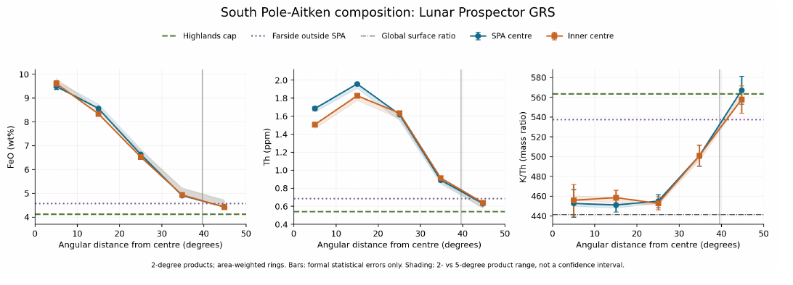
In the figure each curve runs from the centre of SPA (left) to beyond its rim (right). What to look at: the iron curve falls steadily from the centre to the rim and meets the comparison lines only there; the thorium curve rises first and peaks in the second ring before it falls; the K/Th curve stays flat and low across the interior and climbs only at the rim. The two centres, of SPA and of the dome, give the same picture, so the result does not depend on which centre is chosen.
| Ring (around the SPA centre) | FeO (%) | TiO (%) | Th (ppm) | K (ppm) | K/Th |
|---|---|---|---|---|---|
| 0–10° | 9.48 | 0.85 | 1.69 | 763 | 451 |
| 10–20° | 8.56 | 0.65 | 1.96 | 884 | 451 |
| 20–30° | 6.63 | 0.51 | 1.62 | 738 | 455 |
| 30–39.57° | 4.91 | 0.34 | 0.89 | 447 | 501 |
| 39.57–50° (rim) | 4.43 | 0.36 | 0.63 | 358 | 567 |
| Far-side highlands | 4.12 | 0.33 | 0.54 | 303 | 563 |
| Rest of the far side | 4.57 | 0.41 | 0.68 | 368 | 537 |
Check: the analysis code downloads the maps from PDS and was not re-run here (no connection); the ratios and percentages in the table were checked: (an earlier version of the table gave 453); ; (differences of one or two units from the table, 501 and 563, come from the unrounded Th values); 19.6% and 15.8%.
The table gives the same rings in numbers. FeO and TiO are iron oxide and titanium oxide, in per cent by weight; Th and K are thorium and potassium in parts per million (ppm). The 19.6% and 15.8% of the check note are the two deficits of K/Th inside SPA, against the highlands and against the rest of the far side, which the text rounds to 16–20%. Read down each column: iron halves from the centre to the rim; thorium is highest in the second ring and drops to the level of the comparison regions only beyond 30°; K/Th stays near 450 out to 30° and then rises to the 537–567 of the regions outside.
Iron. Concentrated in the central region and decreasing steadily to the rim, around both centres. The centroid of the richest decile lies in the central region, about 150–200 km from the centres of SPA and of the dome; the instrument footprint is about 150 km. We therefore speak of regions. The richest decile is the tenth of the map cells with the most iron; its centroid is their mean position. The footprint is the patch of ground that a single measurement averages over. A distance of 150–200 km is only about one footprint, so the measurement can place the iron in the central region but cannot single out one point within it.
Thorium. Enhanced by a factor of 2.4–3.6 over the comparison regions inside 30° (an earlier version gave 2–3.6), with a maximum in the 10–20° ring. The first harmonic points west-north-west (280°): a crescent also described by Moriarty et al. (2021), with hot spots up to 6 ppm. The first harmonic describes how the thorium of a ring changes as one goes round it: if one side of the ring is richer than the other, the harmonic points toward the richer side. Here it points west-north-west, so the thorium is not spread evenly around the centre but gathered on one side of it, in the shape of a crescent.
Potassium to thorium. K/Th is 451–455 across the basin interior out to 30°, 16–20% lower than in the comparison regions, and rises only toward the rim. The flatness matters as much as the low value: the whole interior lost potassium to the same degree, and the change comes only at the margin.
Chang’e-6. The potassium is isotopically heavy (K to ; Tian et al. 2026); the norites are million years old (Su et al. 2025). An isotope is a form of the same element with a different mass. When material evaporates, the lighter atoms leave a little more easily, so what remains behind becomes slightly heavier. K measures, in parts per thousand, how much heavier the potassium of a sample is than a standard; a heavier value points to potassium that was lost as vapour. The Chang’e-6 samples, returned in 2024 from the Apollo basin in the north-east of SPA, are the only samples from the far side.
Behind the scenes. The centre of the composition was first tested with grain density. When it became clear that the grain density is itself computed from the iron and titanium of the same maps, the test was moved to the element maps themselves, and the results are stated at the level of regions.
Why is the floor rich in iron, with the iron concentrated and decreasing gradually toward the rim? Why does thorium lie not at the centre but in a ring and a crescent? Why is the potassium-to-thorium ratio low across the whole basin interior?
The impact excavated deeply, into the lower crust and perhaps the mantle, and produced a melt lake that differentiated; the 4.25-billion-year-old norites are its product (Su et al. 2025). A melt lake differentiates when, as it cools, heavier crystals sink and lighter ones float, so that layers of different composition form. Four mineralogical zones surround the centre (Moriarty & Pieters 2018). The thorium is the exposure and dispersal of a layered mantle and of ejecta (Moriarty et al. 2021). The heavy potassium is attributed to vaporisation in the impact (Tian et al. 2026; a model of about 2% loss).
Each of the findings has an explanation of its own within the impact reading, but each explanation is separate: iron from a melt lake, thorium from a layered mantle, potassium from momentary vaporisation.
The time of the impact is set from the measured ages: the explanation fits the impact to the times that science measures.
Impact vaporisation is brief; across the whole basin interior the ratio is uniformly low. A momentary flash heats most strongly where the blow falls and less elsewhere; a uniform loss over a region some 2,400 km across asks for heat that reached the whole interior evenly.
EXPLAINS Each finding has its own explanation within the impact reading: iron from a melt lake, thorium from a layered mantle and potassium from vaporisation.
The question for the model is whether one process gives all four findings at once: the iron gradient, the thorium ring and crescent, the flat low K/Th, and the age.
The burner. The heat entered through two burners on the near side, Imbrium (main) and Serenitatis (secondary), and came out opposite them on the far side, at 37.6°S, 160.0°E and 27.3°S, 198.4°E. These two exits are the antipodes of the centres of Imbrium (37.6°N, 340.0°E) and Serenitatis (27.3°N, 18.4°E); the antipodes given in the environment box, 37°S, 161.5°E and 25.4°S, 198.8°E, are those of the opening points used for the crater counts (Imbrium 37°N, 341.5°E; Serenitatis 25.4°N, 18.8°E). The two pairs lie 1.3° (Imbrium) and 1.9° (Serenitatis) apart. The melt lake above the burner is the central region south of the two exits, where the heat accumulated and was held longest (the large dome). The centroid of the thorium craters lies 6.6° from the Imbrium exit. The burner, as set out in A.5, is the heat source of the model: heat and material that rose from the Earth’s interior while the Moon was attached, passed through the openings of the near side, and came out on the far side opposite them.
The melt lake was the central region where the heat of the burners accumulated and was held longest, so everything there was melted. Heavy, deep material rose with the heat; this is why the iron is concentrated in the central region and decreases gradually outward. The gradient follows the heat: where the heating was strongest and longest, the most deep material reached the base of the crust, and the amount falls off with the heat toward the rim.
Thorium was pushed outward from the dome with the crust that slid away (B3, the three ways of thinning the crust); this is why it lies in a ring and not at the centre. A dome that rises sheds its upper layer to the sides, as a heap of sand on a table that is lifted from below spreads outward; what was on top at the centre ends up in a ring around it.
Thorium also left the centre with the liquid. There was a flow toward the crescent, not only ejected material, and it was deflected by the rotation. Thorium hardly evaporates, but it “escapes” into the liquid: in partial melting it passes almost entirely into the melt. In partial melting only part of a solid becomes liquid, and some elements that do not fit well into the crystals of the solid, thorium among them, move almost entirely into that first liquid. At the centre, where the heat was strongest, the most liquid formed; the liquid flowed outward, was deflected toward the side of the crescent and carried the thorium with it. A depleted residue remained at the centre (1.7 ppm), and an enriched liquid accumulated in the crescent (4–5 ppm at the hot spots). At the far end, with the Moon attached, the rotational force on a broad, slow flow on a gentle slope is of the same order as the slope force. The rotational force here is the sideways push that a turning frame gives to anything moving across it. A fast stream on a steep slope runs straight down, because the slope dominates; a broad, slow flow on a gentle slope feels a slope force as weak as the sideways push, and turns aside, as the broad, slow currents of the Earth’s oceans are turned by the Earth’s rotation. This is why the outflow did not spread evenly, but bent to one side.
Volatilisation across the whole heated zone: strong, concentrated and sustained heating evaporated not only water but also moderately volatile elements such as potassium. The whole basin is a heated zone (B8); this is why the ratio is low throughout the interior, with a transition at the margins. The difference from the impact reading is the duration: a long heating from below acts on the whole area above it, and the loss is the same wherever the heat reached; outside that area the loss stops, and the ratio climbs at the rim.
The age of 4.25 billion years is the time of melting above the burner; it supports the burner having operated in the period the model sets. The model places the attached stage between the start of the construction and release at 3.873 Ga (B15); a melt that solidified slowly at depth 4.25 billion years ago lies inside that period.
The table sets each statement of the model beside the measurement that tests it.
| The model says | What was found |
|---|---|
| Iron concentrated, decreasing gradually | 9.5 8.6 6.6 4.9 4.4% ; the same structure as in B1, B6, B8 |
| Thorium pushed into a ring | Maximum at 10–20°, not at the centre |
| Thorium left the centre with the liquid, and the liquid was deflected toward the crescent | Centre 1.7 ppm; crescent hot spots 4–5 ppm |
| Volatilisation across the whole heated zone | K/Th 451–455 throughout the interior, 16–20% below the comparison regions; transition at the margins ; isotopically heavy potassium at Chang’e-6 |
| Melting in the period of the burner | Norites 4.25 billion years old |
FITS The iron gradient, the thorium ring and crescent, the uniformly low K/Th and the norite age all follow from melting and volatilisation above the burner.
What we now have. One heat supply, from the two burners and held longest beneath the centre, strong and long-lasting, gives all four findings together: it raised deep iron where it was strongest, pushed thorium outward with the sliding crust and with the outflowing liquid, drove potassium off evenly over the whole heated area, and melted the norites in its own time.
Data and code.
| Data | Source |
|---|---|
| FeO, TiO, Th, K | Lunar Prospector GRS, Prettyman et al. (2006) (doi:10.1029/2005JE002656); PDS LP_9001 |
| Mineralogical zones | Moriarty & Pieters (2018) (doi:10.1002/2017JE005364) |
| Thorium crescent | Moriarty et al. (2021) (doi:10.1029/2020JE006589) |
| Iron in northern SPA | Ivanov et al. (2018) (doi:10.1029/2018JE005590) |
| Heavy potassium | Tian et al. (2026), PNAS (doi:10.1073/pnas.2515408123) |
| Norites, 4.25 billion years | Su et al. (2025), NSR (doi:10.1093/nsr/nwaf103) |
| Na/K in glasses | Li et al. (2026), EPSL (doi:10.1016/j.epsl.2026.119980) |
| Code and report | analyze.py and
SPA_Composition_Report.pdf; archive folder
B7_2026-10-04 |
Open. (1) Why the thorium crescent lies specifically to the north-west. (2) A low potassium-to-thorium ratio can also arise from mixing of materials; the test is a joint mixing model of K, Th, FeO and mineralogy, checking whether a potassium deficit remains that matches the heavy isotopes. The first point is taken up in B9, where the direction of the crescent is derived from the rotation.
B8 Little visible lava
In brief. SPA, the deepest basin, with a crust as thin as in the near-side basins, is covered by only 4% visible lava. What there is lies concentrated at the centre. In the model, the basin underwent heating and melting from below, not an outpouring; only at the centre, where the heat was strongest, did material come out.
Lava rises where the crust is thin and the ground is low, and on the near side the deep basins with thin crust are flooded with dark lava plains, the maria. SPA is the deepest basin of all and its crust is as thin as theirs; by that rule it should be among the most flooded. This section measures how little lava it carries, where that lava lies, and why.
Terms: we speak of “heating” and “melting from below”, not of a lava outpouring or percolation. Visible lava means maria exposed at the surface; buried lava (cryptomare) means lava later covered by bright material, the subject of B9. The distinction matters here: a basin can hold much lava that the eye no longer sees, if lighter material later fell over it. This section counts only what is visible; B9 counts what is hidden.
We use the LROC mare map (LROC_GLOBAL_MARE_180), averaged in rings around the centre of the dome (the region of 51°S, 197°E, the centre of the inner ring, B5), and the GRAIL crustal thickness (model 1) at the basin centres. The LROC map outlines every exposed mare on the Moon from images of the Lunar Reconnaissance Orbiter Camera; GRAIL, a pair of spacecraft that mapped the Moon’s gravity, gives the thickness of the crust beneath each point.
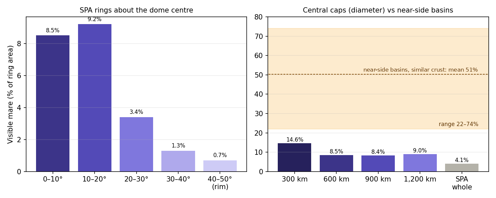
On the left, the share of each ring covered by lava falls from the centre outward. On the right, the smaller the cap around the centre, the larger its share of lava; but even the cap of near-side-basin size stays below the whole band of near-side basins with similar crust.
| Region in SPA | Visible lava |
|---|---|
| Ring 0–10° | 8.5% |
| Ring 10–20° | 9.2% |
| Ring 20–30° | 3.4% |
| Ring 30–40° | 1.3% |
| Rim 40–50° | 0.7% |
| Inner 300 km | 14.6% |
| Central cap 900 km across (the size of a near-side basin) | 8.4% |
| SPA as a whole | 4.1% |
The table reads in two parts. The first five rows are the rings: about 9% in the inner 20°, falling to under 1% at the rim. The last three rows are areas of growing size around the centre: the more of the outer basin an area includes, the lower its share, from 14.6% in the inner 300 km to 4.1% for SPA as a whole.
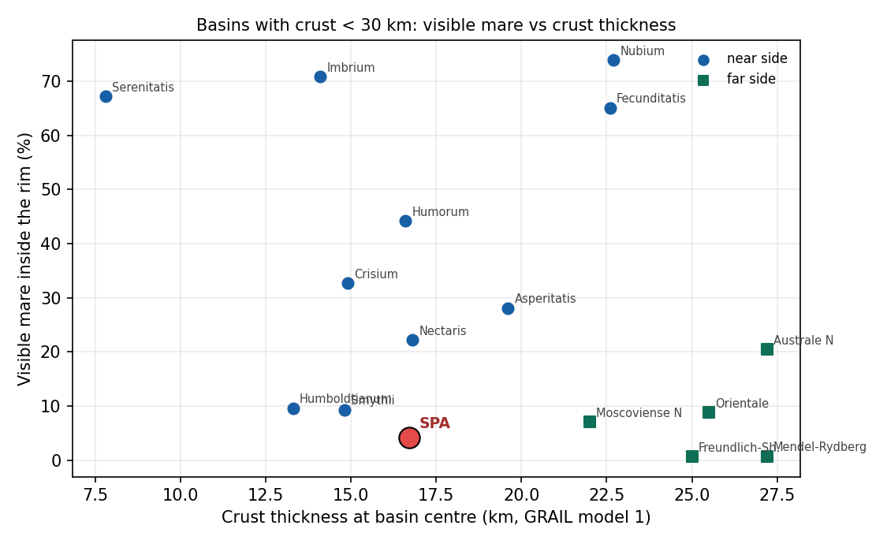
The figure compares like with like: only basins whose crust at the centre is thinner than 30 km, so that each could have let lava through as easily as SPA. The near-side circles sit high; the far-side squares sit low; SPA, in red, lies near the bottom — only Freundlich-Sharonov and Mendel-Rydberg, with crust of 25–27 km, carry less — although its crust is among the thinnest.
| Basin | Side | Crust at centre (km) | Visible lava |
|---|---|---|---|
| Serenitatis | near | 7.8 | 67.2% |
| Imbrium | near | 14.1 | 70.8% |
| Crisium | near | 14.9 | 32.7% |
| Humorum | near | 16.6 | 44.2% |
| SPA | far | 16.7 | 4.1% |
| Nectaris | near | 16.8 | 22.2% |
| Asperitatis | near | 19.6 | 28.1% |
| Fecunditatis | near | 22.6 | 65.1% |
| Nubium | near | 22.7 | 73.9% |
| Humboldtianum | near (limb) | 13.3 | 9.6% |
| Smythii | near (limb) | 14.8 | 9.3% |
| Moscoviense N | far | 22.0 | 7.1% |
| Freundlich-Sharonov | far | 25.0 | 0.6% |
| Orientale | far (limb) | 25.5 | 8.8% |
| Mendel-Rydberg | far | 27.2 | 0.7% |
| Australe N | far | 27.2 | 20.5% |
Check: visible lava over the whole Moon 16.2% (literature about 16–17%); near side 30.1% (about 31%); far side 2.3% (about 2%).
The table lists the basins of the figure, sorted by side and by the thickness of the crust. SPA sits among Crisium, Humorum and Nectaris, with crust of 15–17 km, yet carries a fifth to a tenth of their lava. The check note confirms that the mare map reproduces the totals of the literature, so the low value of SPA is not an artefact of the map.
Why is SPA, the deepest basin, with a crust of about 17 km at its centre like Crisium, Humorum and Nectaris, covered by only 4% visible lava, when near-side basins with similar crust are covered by 22–74%? And why is what there is concentrated at the centre?
The far side has fewer heat sources (KREEP is concentrated on the near side), and the mantle beneath SPA is depleted; therefore less magma reached the surface. KREEP is lunar material rich in potassium (K), rare earth elements (REE) and phosphorus (P), and with them in thorium and uranium, whose radioactive decay heats the ground around it. A depleted mantle is one from which melt has already been drawn, so that little remains to melt again. The lava that is present drains to the low places: the centre of the basin and deep craters within it.
Consistent: a general difference between the two sides; far-side basins with thin crust are covered on average by 7%.
Not consistent: even on the far side SPA lies near the bottom, below every far-side basin with crust under 25 km (only Freundlich-Sharonov and Mendel-Rydberg, with crust of 25–27 km, carry less), although it is the deepest of all; and a central cap of near-side basin size (8.4%) is covered less than any near-side basin with similar crust.
EXPLAINS PARTLY The difference between the two sides explains why far-side basins carry little lava; it does not explain why SPA, the deepest, lies near the bottom even on the far side, nor why a basin-sized central cap carries less than any near-side basin with similar crust.
SPA underwent heating and melting from below, not an outpouring. Most of the basin is a heated zone from which no lava came out; it enters the percentage calculation as a huge area and dilutes it. A percentage is lava divided by area: SPA’s area is many times that of a near-side basin, and nearly all of the added area is heated ground that never erupted. The same lava spread over a much larger denominator gives a small share.
At the centre the material absorbed the most heat, the melting reached a lava-like state, and there material came out, not beyond the margins. The heat fell off from the centre outward, and only where it was highest did the melt become fluid enough to reach the surface; farther out the ground was heated and partly melted, but the melt stayed below.
At first there was an ordinary mare at the centre, and not a small one. The heat of the whole region erased it; its buried traces are the subject of B9.
The mantle beneath SPA is depleted because there was heat at its base (see B13). Heat that melts the base of the mantle again and again draws its melt away each time, and leaves a residue that has little left to give.
The heat also erased the crater record; the craters on SPA today are returning material that landed after the region had cooled (see B1).
| The model says | What was found |
|---|---|
| Little visible lava: there was no outpouring | 4.1% over SPA as a whole |
| The lava is concentrated at the centre, where the heat was strongest | 14.6% in the inner 300 km; 8.5–9.2% in the inner rings; 0.7–1.3% at the margins |
| Dilution explains most of the gap | From 4.1% for the whole basin to 8.4% for a basin-sized central cap: the gap to the near side falls from a factor of 5–18 to a factor of 2.6–9 (22.2/8.4 to 73.9/8.4; an earlier version gave 1.5–9) |
| The remaining gap is the central mare that was erased | Prediction for B9: buried lava concentrated at the centre |
| The same structure from the centre outward | As in the porosity at depth (B6), the heavy material (B7) and the crater deficit (B1) |
The third row is the key one. Comparing SPA as a whole with a near-side basin compares areas of very different size; comparing a central cap of the same size as a near-side basin removes that difference. The gap shrinks by about half, and what remains is the subject of the fourth row: the lava that was there and is now hidden.
FITS SPA carries little visible lava and what it has lies at the centre, as heating and melting from below require; dilution by the large heated area accounts for most of the gap to the near-side basins.
Data and code.
| Data | Source |
|---|---|
| Maria | LROC Global Mare Map (LROC_GLOBAL_MARE_180), shared data archive |
| Crustal thickness | GRAIL, model 1 (Wieczorek et al. 2013);
grail_compact.npz |
| Basins | Neumann et al. (2015)
(neumann_basins_ge500.csv) |
| Code | Map rasterised on a 0.25° grid; rings and caps around the dome centre; area weighting (cosine of latitude) |
B9Buried basalts and the central mare
In brief. Inside the central circle of 15° there is buried lava, and there the visible lava is also dense. To the west-north-west lies a broad thorium crescent that weakens with distance from the centre. In the model, the buried lava is the original central mare, the opening that ejected material. The ejected material, while the Moon was attached and rotating fast, fell behind to one side and formed the crescent. After release the mare calmed; it stayed hot and froze slowly, and the dated deposits, spanning about 1.5 billion years, record that slow freezing.
B8 left a gap: even a central cap of near-side-basin size carries less visible lava than the near-side basins, and the model predicted that the missing part is buried at the centre. This section looks for that hidden lava and finds it inside the central circle. It then reads the thorium crescent of B7 as material that this central mare threw out while the Moon was attached and turning fast, and tests that reading with a simulation of where such material lands. Last, it reads the ages of the lava as the long, waning life of the same opening.
Terms: melting is the process in which material becomes liquid; it can solidify at depth without coming out (large crystals, no bubbles, like the Chang’e-6 norites). Lava is molten material that reached the surface, flowed and solidified (small crystals or glass, bubbles, dark plains). Visible lava means exposed maria; buried lava (cryptomare) means lava that flowed and was later covered. The crystals tell the two apart because of cooling time: a melt that cools slowly at depth has time to grow large crystals, while lava cooled quickly at the surface freezes into small crystals or glass, and its escaping gas leaves bubbles.
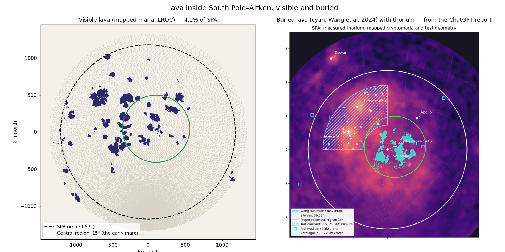
The two panels put the visible and the hidden lava side by side. What to look at is the green circle: the cyan patches of buried lava fall almost wholly inside it, and so does most of the visible lava; outside the circle, toward the rim, there is little of either. Buried lava is found from orbit by the dark material that small craters dig up from beneath a bright cover, and by the chemistry of the cover itself; Wang et al. (2024) give a minimum and a maximum outline, and both are shown.
| Measured | Value | Source |
|---|---|---|
| Buried lava inside the central circle of 15° | 13.6–24.1% (minimum / maximum extent) | Wang et al. (2024); map intersection, external analysis |
| Buried lava outside the circle | Almost none | Figure B9.1 |
| Visible lava in SPA as a whole / in the inner 300 km | 4.1% / 14.6% | B8 |
| Volume of the visible lava deposits in and around SPA | 129 deposits; thickness 31–273 m; volume 1–2,630 km; at the centre of SPA smaller than in the large craters to the north | Pasckert et al. (2018) |
| Dark-halo craters (which expose buried lava) | 2 inside the central circle; a sparse catalogue, insufficient for inference | Checketts et al. (2023); Izquierdo et al. (2024) |
The first two rows carry the finding: a seventh to a quarter of the central circle hides buried lava, and outside it almost none. Added to the visible lava of the same circle, this closes much of the gap that B8 left. The fourth row shows that the visible deposits are small and thin, tens to a few hundred metres; the last row records a second, independent tracer, too sparse to lean on. A dark-halo crater is a small crater that punched through the bright cover and threw the dark lava beneath it around its rim.
The ages.
| Method | What was measured | Age |
|---|---|---|
| Crater counting (remote) | 101 of the 129 visible lava deposits | 2.2–3.7 Gyr; peak 3.6–3.2 |
| Crater counting, Chang’e-6 site | Southern mare of Apollo, western part | 2.98–1.54 Gyr |
| Laboratory, Chang’e-6 (one site) | 99% of the basalt fragments | 2.8 Gyr |
| Laboratory, Chang’e-6 | One aluminium-rich basalt fragment of different composition, from another magma source | 4.2 Gyr |
| Laboratory, Chang’e-6 | Norites: a melt that solidified slowly | 4.25 Gyr (B7) |
The Chang’e-6 landing site (41.6°S, 206°E) lies about 11.6° from the centre of the dome, inside the circle of 15°.
Two kinds of age stand in the table. Crater counting dates a surface from orbit: the longer a surface has been exposed, the more craters it has collected, so the density of craters gives an age; it dates the top of a deposit, the last lava to flow there. Laboratory ages come from the radioactive decay measured in returned samples, and date the moment a fragment solidified. Read from the bottom up, the table runs from the oldest to the youngest: the slowly cooled norites, one ancient basalt fragment from a rich source, the main body of the visible deposits, and the last lava at the Chang’e-6 site. The span of the dated visible deposits, from 3.7 to 2.2 Gyr, is the “about 1.5 billion years” of the opening paragraph. B15 counts all the molten material of the region, from the norites that solidified at depth 4.25 billion years ago to the last lava at 2.2 Gyr, and therefore speaks of at least 2 billion years; the two figures measure different things and do not conflict. All the laboratory ages come from inside the circle of the central mare.
The thorium crescent. B7 found that the thorium of SPA lies on one side, to the west-north-west. Here the crescent is mapped crater by crater, to learn whether it is a layer that covers the ground or a material dug up from below.
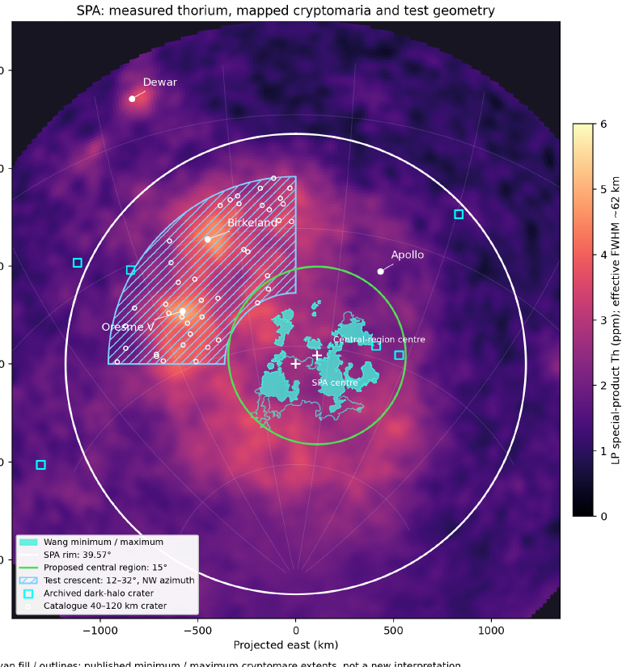
The map shows the crescent as a band of high thorium west and north-west of the centre, 12–32° from it, outside the circle of buried lava. The hatched area is the region tested; the 43 craters inside it are the sample used below.
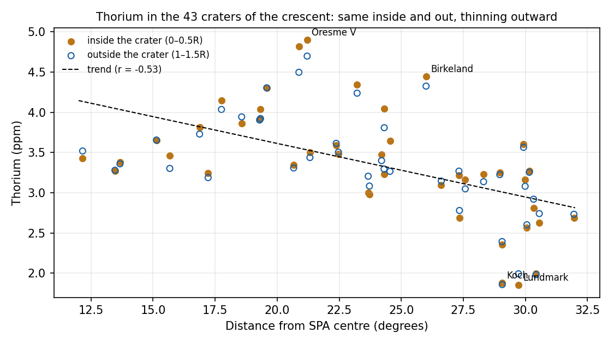
This figure asks the decisive question. If the thorium were a deep layer that the craters dug up, the floor of each crater would be richer than the ground around it. It is not: inside and outside are almost the same. The thorium therefore lies spread over the surface as a cover, and the craters that formed later in it only stirred it. The second result is the slope: is the correlation coefficient, which runs from (a perfect fall) through 0 (no relation) to (a perfect rise); is a clear fall of thorium with distance from the centre, as a cover thrown out from the centre would thin as it spreads.
| Measured | Value |
|---|---|
| Craters above 3 ppm (inside / outside) | 32 / 34 of 43 |
| The strongest hot spots | Birkeland (4.45 ppm) and Oresme V (4.90 ppm); also Finsen, Davisson, Rumford (“hot spots”, Moriarty et al. 2021) |
| Verified coordinates | Birkeland 30.17°S 174.01°E; Oresme V 40.75°S 165.39°E; Dewar 2.61°S 165.62°E (54.6° from the centre, outside the rim) |
Check: in the table of 43 craters, 32/34 confirmed; the distance of Birkeland, 25.98°, confirmed. The full code of the external analysis was not re-run here (the raw files are missing).
Three of every four craters in the crescent stand above 3 ppm, inside and outside alike, several times the 0.54–0.68 ppm of the comparison regions of B7. Dewar lies far outside the rim and is treated below as a separate source.
Why is the buried lava concentrated precisely in the central circle? Why does thorium lie in a crescent on one side, west and north-west, weakening with distance? And why does the lava in SPA span about 1.5 billion years, from different sources, in small amounts?
Buried lava is ancient volcanism covered by ejecta of later impacts (Whitten & Head 2015); at the centre of SPA extensive deposits are interpreted as buried lava (Wang et al. 2024; Chuang et al. 2025). The thorium crescent is the exposure of a layered upper mantle or of the residue of the melt lake, re-excavated by young craters (Moriarty et al. 2021; Wang et al. 2026). Far-side volcanism lasted at least 1.4 billion years, from different magma sources, and waned as the internal heat sources weakened (Li et al. 2024).
Consistent: the existence of buried lava, and long volcanism that wanes.
Not predicted in advance: the one-sided crescent, in a single direction, west and north-west, weakening with distance from the centre. In the accepted explanation it is a layer exposed at a particular place; the direction itself is not derived from a mechanism. Figure B9.3 adds a second point: a layer re-excavated by young craters should be richer inside the craters than around them, and the measurement finds the two equal.
EXPLAINS Buried lava, long waning volcanism and a thorium-rich exposed layer are all accounted for in the accepted reading.
The burner and its exits. The burners are Imbrium (main) and Serenitatis (secondary), on the near side. Their exits on the far side are at 37.6°S, 160.0°E (near Ingenii) and 27.3°S, 198.4°E (northern SPA, near Oppenheimer and Apollo). The “strategic point” and the central mare lie in the central region south of the exits (dome centre 51.4°S, 196.8°E; the weakest crater record of Figure B3.2, 47.5°S, 193.5°E, on ground with the openings and lava plains removed — the minimum of B1e, on ground cleaned also of the halos, is 45.4°S, 197.9°E). Beneath each exit there is a small dome of thin crust (Ingenii; Apollo). Active maria ejected material that landed around them and made craters: opposite the exits there are 220 craters per million km, at that weakest point 90 (111 at the minimum of B1e); Oppenheimer, a volcanic vent with pyroclastic deposits, lies 8.9° from the Serenitatis exit. The strategic point is the place where the heat of the burners was held longest; it is defined below. Pyroclastic deposits are fragments of melt thrown out by escaping gas, the mark of an explosive vent.
The central mare. At first the dome held, between 0° and 15°, a large, ordinary and turbulent mare: the opening. Through it material was ejected that landed in various places, not necessarily back in it. The regional heat, focused there by the pear, melted its boundaries, and it was melted together with all of SPA to different degrees. In the series a mare is an opening over a feed dome (Paper 5): a mouth through which melt came up and through which material was thrown out. The pear is the elongated tip of the Earth on which the Moon sat while attached; it carried the heat to the burner.
The buried lava is the mare itself. Inside the circle of 15° we see the buried lava, and this is indeed the mare that was buried, the one that ejected. The rest of SPA underwent melting without lava; only the mare, which lay at the surface, was lava, and part of it was buried. This turns the measurement of Step 1 into a test: the model placed the mare in the circle of 15° from the dome, and the buried lava was found in that circle and almost nowhere else.
The crescent is what the mare ejected, fallen behind to one side. The material rose and fell behind to the western side of the mare. The hot spots are places where material fell directly. Dewar, a buried lava lake outside the rim, is an independent source. A cover that fell from above explains the result of Figure B9.3: the thorium lies on the surface, the same inside and outside the craters, and thins with distance from the mare that threw it.
Thorium left the centre with the liquid. As set out in B7, there was a flow toward the crescent, not only ejected material, and it was deflected by the rotation. Thorium hardly evaporates, but it “escapes” into the liquid: in partial melting it passes almost entirely into the melt. At the centre, where the heat was strongest, the most liquid formed; the liquid flowed outward, was deflected toward the side of the crescent and carried the thorium with it. A depleted residue remained at the centre (1.7 ppm), and an enriched liquid accumulated in the crescent (4–5 ppm at the hot spots). At the far end, with the Moon attached, the rotational force on a broad, slow flow on a gentle slope is of the same order as the slope force. The outward flow of thorium and the crescent simulation below are retained, and the centroid of the thorium craters, 6.6° from the Imbrium exit, is retained as an observation. The two ways, through the air and over the ground, act in the same direction, because the same rotation turns both to the same side.
The rotation rate from the crescent. The rotation rate of Earth can be inferred from the crescent. Material thrown up from a rotating body falls behind the rotation. The reason is the same as for a skater who opens her arms and slows: material thrown outward, away from the centre of rotation, keeps its angular momentum, so at its greater distance it turns more slowly than the ground it left, and the ground runs ahead beneath it. It lands behind its starting point, on the trailing side. With the Moon attached, effective gravity at the far end almost cancels, the material stays aloft for about 35–40 minutes, and the rotation deflects all of it to one side. The far end lay beyond the corotation line, where the outward push of the rotation exceeds the pull of the Earth; that excess pulls away from the Moon and works against the Moon’s own gravity, so that thrown material falls back only slowly. The longer the flight, the farther the ground turns beneath it, and the more one-sided the landing. At detachment the Moon was round and its exterior rigid; during the ejections it was still elongated toward Earth.
Two stages. While the Moon was attached and the rotation fast: strong ejection, the crescent and the buried lava. After detachment: the Earth’s pressure no longer reached the Moon, and with it the ejections stopped; the mare calmed, stayed hot and froze slowly in place, and the dated ages of 3.7–2.2 Gyr record that slow freezing of what remained there. That is why there is no crescent of that time: after release the Moon no longer turned with the Earth’s fast day, its far end no longer lay beyond the corotation line, and nothing was thrown to be turned aside.
The strategic point. The burner operated before detachment, from Earth, through the stream along the pear. The strategic point is the place where its heat was held longest (thin crust, existing openings and gathered heat); after detachment it was the last to freeze, so the youngest ages lie there. That late-freezing lava is also “lava from Earth”: the mantle of the Moon is Earth material (Paper 3, C.10). As a thick pot of soup taken off the flame stays hot longest at its centre, the place where the heat gathered is the last to set.
Little lava, and the youngest was measured. The visible lava patches are few and small: a low amount of erupted lava. The age measured in the laboratory is that of the last lava at one site, and older lavas lie beside it. A sample scooped from the surface takes the top layer, which is the last to flow; the 2.8-billion-year age dates the end of activity at that spot, not its beginning.
The simulation: the crescent as a compass for rotation. If the crescent is material that fell behind the rotation, its distance and its one-sidedness depend on how fast the Earth turned. The simulation asks whether the day of the series’ release state gives a crescent at the observed place. Material is thrown at 45° from the far end of the attached Moon (radius 1,890 km), its centre on the corotation line of the release state of the series, 16,400 km from the Earth’s centre, with the Earth’s day of 5.77 h (Paper 2, §B.1); the Moon turns with the Earth. Each run throws 72 parcels round the compass and records where they land. The corotation line is the distance at which a free orbit takes exactly one Earth day; a body there that turns with the Earth is moving at orbital speed. Seventy-two parcels, one every 5°, cover every direction equally, so any lopsidedness in where they land comes from the rotation and not from the throw.
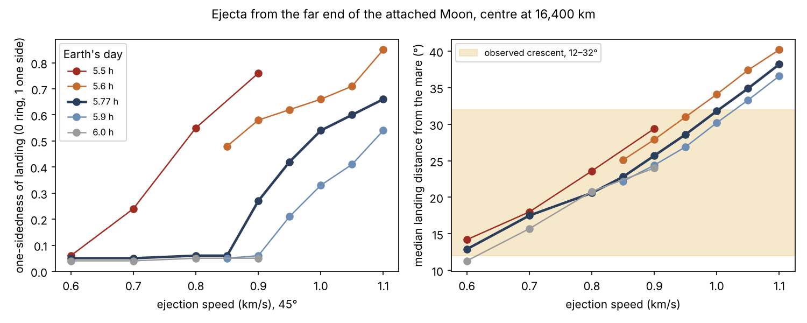
Each curve is one length of the Earth’s day. On the left, one-sidedness stays near zero at low speeds, where the parcels fall back in an even ring, and climbs as the speed grows and the flight lengthens. On the right, the landing distance grows with speed. A crescent like the observed one needs both at once: a clearly one-sided landing and a distance inside the shaded band.
| Ejection speed | What happens at 5.77 h |
|---|---|
| 0.6–0.85 km/s | A symmetric ring, 13–23° from the mare |
| 0.9 km/s | The ring begins to turn one-sided (0.27); two thirds on the trailing side |
| 0.95–1.0 km/s | Crescent: one-sidedness 0.42–0.54, 74–96% on the trailing side, 29–32° from the mare |
| 1.05–1.1 km/s | Crescent, 35–38° from the mare, beyond the observed one |
At a faster day (5.5–5.6 h) the crescent forms at lower speeds,
0.8–0.9 km/s, 24–29° from the mare; at 6.0 h and slower it does not form
in the range tested. Code: sim577.py, folder
B9_crescent_5.77h_2026-10-14.
The table follows the release-state day, 5.77 h, as the throw grows stronger. Slow throws land in an even ring; from 0.9 km/s the ring begins to lean; at 0.95–1.0 km/s most of the material lands on the trailing side, in a crescent at the observed distance; still faster throws carry it past the observed band. A faster Earth turns the ground more during each flight, so the crescent appears at lower speeds; a slower Earth does not turn it enough.
The crescent forms in the release state of the series: at 5.77 h the material thrown at about 1 km/s falls on one side, the trailing one, at the outer part of the observed crescent.
| The model says | What was found |
|---|---|
| The central mare in the dome, 0–15° | The buried lava lies almost entirely inside the circle of 15° (13.6–24.1% of it) |
| The mare was lava; the rest of SPA melting without lava | Visible and buried lava concentrated at the centre; almost none outside it |
| A flow of liquid, deflected by the rotation, also carried thorium to the crescent | The centre is depleted (1.7 ppm), the crescent enriched (4–5 ppm) |
| The crescent is ejected material that fell behind to one side | Thorium on one side, west and north-west; a layer (inside = outside), weakening with distance () |
| A crescent only while the Moon is attached and rotating fast | In the simulation, at the release state of the series (5.77 h, 16,400 km), a crescent for ejection at 0.95–1.0 km/s, landing 29–32° from the mare, at the outer edge of the actual crescent (12–32°) |
| After release no ejection, so no crescent of that time | The visible lava lies at the centre and north of it, not in the crescent |
| Ejection while attached; after release the mare froze slowly in place | 4.2 Gyr (one source) 3.6–3.2 (peak) 2.8–2.2 (last, another source); small deposits |
The rows follow the story in order: where the mare was, what it threw, how the thrown material and the outflowing liquid were turned to one side, and how the mare calmed and froze after release.
FITS The buried lava lies in the circle of the central mare, the thorium crescent has the one-sided direction that fast rotation of the attached Moon gives to ejected material, and the lava ages record the slow freezing of heat held long at the centre.
What it shows. The turbulent central mare, melted to different degrees, joins B1, B6, B7, B8 and B9 into one account: an opening that ejected, melted and was buried, which is the centre-outward structure that recurs in every measurement. It turns a finding of the literature (buried lava at the centre) into a fulfilled prediction: the buried lava lies exactly in the circle of the mare. The trailing of the ejected material gives a mechanism for the one-sided direction of the thorium, which the accepted reading does not derive.
The crescent also gives a new and independent test: at the release state of the series (5.77 h) it forms for ejection at about 1 km/s, and a faster day forms it at lower speeds; it connects SPA to Paper 2. The elongation toward Earth during the ejections justifies a Moon rounded around the mare in the simulation. The two stages, attached and fast, then free and calm, explain why the young deposits made no crescent, a prediction borne out on the map. The strategic point explains why the youngest ages lie at the same place: the heat was held longest there and froze last, without a second burner after detachment (link to B15). Little lava, with the youngest measured, points to the remote ages (2.2–3.7 Gyr) and to the 4.2-billion-year fragment as the lava of the burner’s time. A crater-source test, applicable to all maria, passes to Papers 6 and 7.
What we now have. B7, B8 and B9 now form one account of the floor. The heat of the burners, accumulated beneath the centre, heated the whole basin and melted it from below (B7, B8); only at its centre did an opening, the central mare, bring lava to the surface. While the Moon was attached and turning fast, that mare threw out material that fell behind the rotation into the thorium crescent, and liquid that left the centre was turned the same way. The heat later melted and buried the mare, which is the hidden lava of the central circle. After release the mare calmed: it stayed hot and froze slowly in place, without a crescent.
Data and code.
| Data | Source |
|---|---|
| Buried lava at the centre of SPA | Wang et al. (2024), JGR Planets (doi:10.1029/2023JE008176); data: zenodo.8435503 |
| Buried lava, reviews | Whitten & Head (2015), Icarus (doi:10.1016/j.icarus.2014.09.031); Chuang et al. (2025), PSJ (doi:10.3847/PSJ/ada4a6) |
| Dark-halo craters | Izquierdo et al. (2024) (doi:10.1029/2023JE007867); zenodo.7823630 |
| Visible lava, ages and volumes | Pasckert et al. (2018), Icarus (doi:10.1016/j.icarus.2017.07.023) |
| Basalt of 4.2 and 2.8 Gyr | Zhang et al. (2025b), Nature (Chang’e-6); Cui et al. (2024), Science (doi:10.1126/science.adt1093) |
| Thorium | Moriarty et al. (2021) (doi:10.1029/2020JE006589); Wang et al. (2026), EPSC2026-624; Lunar Prospector, half-degree product |
| Craters | Robbins (2019) (doi:10.1029/2018JE005592); IAU/USGS |
| Survival of impactor material (literature) | Avdellidou et al. (2016) (doi:10.1093/mnras/stv2844); Zhu et al. (2019) (doi:10.1038/s41586-019-1359-0) |
| Analysis and code | analysis.py,
all_craters.py, all_crater_apertures.csv and
the analysis report; sim2.py, sim577.py
(crescent simulation) |
Open. The crescent simulation is to be repeated independently with a Moon elongated toward Earth, as during the ejections, a range of angles, and the Moon’s centre below the corotation line, as it was before release. The age of the buried lava in the central circle is to be measured: is it as old as the burner’s time? The crescent marks the trailing side of that time and is to be compared with the axis system of that time (future work). The crater-source test is to be applied to a clean case (Dionysius, Mare Tranquillitatis) in Papers 6 and 7.
B10The dense mass
In brief. Beneath the southern half of the mare zone, at depth, there is an excess mass of at least kg, spread over about km. In the model: iron-bearing material from the Earth reached the base of SPA, as it reached many places in the Moon. SPA was not an active mare: no material was brought up through it from below, so there was no mechanism for anything to sink. The material in place was heated, cooked and changed; as the heat drove other materials off, the iron that remained was concentrated in the mare zone, and it froze in place when the region cooled.
Sections B1–B9 read the surface of SPA: its craters, its shape, its crust and its lava. Sections B10–B14 go below the surface, into what the mantle beneath the basin holds and what its samples are made of: a heavy mass seen in gravity (B10), a mantle that lost its volatile elements (B11), a mantle poor in oxygen (B12), a washed-out source of lava (B13) and metal grains inside the oldest dated samples (B14). The five are read together, because in the model they are the work of one heat source and of one supply of iron from the Earth. The mare zone used throughout is the circle of 15° around the dome centre (51.4°S, 196.8°E) in which the central mare lay (B9).
How a hidden mass is seen. A spacecraft in orbit is pulled slightly harder over places where there is more mass below it. The two GRAIL spacecraft flew one behind the other and measured the changing distance between them; from it the gravity field of the whole Moon is mapped. Part of that field comes simply from the shape of the surface—a mountain pulls, a hollow pulls less—and LOLA, the laser altimeter of the Lunar Reconnaissance Orbiter, gives that shape. Once the effect of the visible topography is removed, what is left is the gravity of what lies inside: thinner or thicker crust, and denser or lighter material in the mantle. This remainder is the Bouguer anomaly (here, the Bouguer disturbance).
James et al. (2019), from GRAIL gravity and LOLA topography, found a diffuse density excess in the mantle beneath SPA of at least kg; the preferred lower bound in their model lies deeper than 300 km (this is not the mean depth). Their original model and data are archived at Zenodo (doi:10.5281/zenodo.2551813). Gravity from orbit tells how much extra mass there is and roughly where, but it cannot fix the depth uniquely: the same pull can come from a smaller excess close to the surface or a larger one deeper down, which is why the result is stated as a lower bound and a range of depths. We analysed its position and size against the reference points of this paper (Figure B10.1 and the table below).
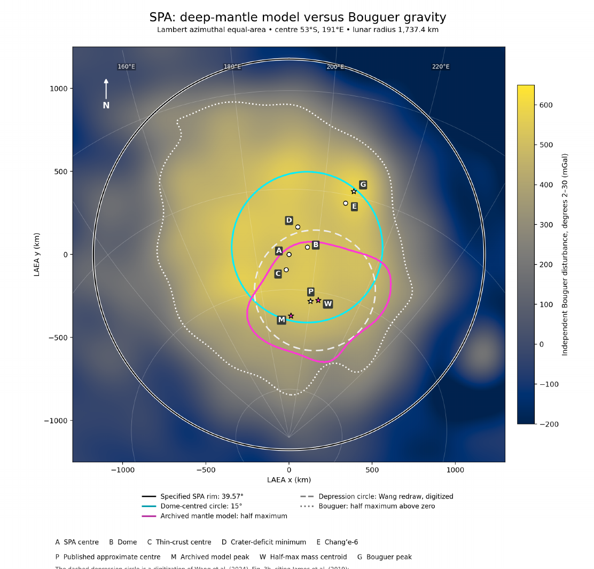
The map is drawn so that equal areas on the Moon appear as equal areas on the page, so the sizes of the outlines can be compared directly. “Degrees 2–30” means that only the broad part of the gravity field is kept, features of hundreds of kilometres and more, which is the scale of a deep mass; fine detail from the crust is left out. “Half maximum” is the outline drawn where the excess falls to half of its peak value: it marks the main body of the mass without its faint tails. What to look at: the magenta outline (the deep mass) sits inside the cyan circle (the mare zone), on its southern side, and the three marks P, M and W for its centre all lie south of B, the dome centre. The peak of the overall gravity, G, lies elsewhere, towards Apollo; it includes the crust and is not the deep mass.
| Definition | Position | From the dome centre |
|---|---|---|
| Published centre | 62°S, 200°E | 10.7° (326 km), south |
| Peak of the original model | 65.2°S, 191.9°E | 14.0° (425 km), south |
| Centroid of the half-maximum area | 61.6°S, 203.2°E | south |
| Extent (half maximum) | 444,500 km²; equivalent radius 377 km (12.4°); 50–73.5°S |
All definitions of the centre fall inside the 15° circle, on its southern side. The mass is broad and diffuse, not a lump. If it is metal, it is equivalent to a sphere 95 km in diameter; gravity alone does not distinguish metal from oxides. Check: the distance from the dome centre to the published centre is 10.7° .
The table gives the centre of the mass in three ways, because a broad, smeared mass has no single obvious centre: the centre stated in the publication, the strongest point of the archived model, and the centre of gravity of the area inside the half-maximum outline. Whichever is used, the answer is the same: the centre lies 10.7°–14.0° south of the dome centre, inside the 15° circle. The last row gives the size. An area of about 444,500 km² is that of a circle of radius 377 km, or 12.4° of arc on the Moon—close to the 15° radius of the mare zone. The note under the table gives a sense of scale: packed into pure metal, the whole excess would fill a ball only 95 km across; spread out as it is, it is a thin excess over a very wide volume.
What is this heavy material, how did it reach that depth, why did it stop there rather than sink to the core, and why does it lie beneath the southern half of the mare zone?
Either metal from the core of the impactor, dispersed through the mantle and left suspended in it; or dense oxides from the last stage of magma-ocean crystallisation—although the concentration beneath SPA has not yet been explained (James et al. 2019). The first reading follows the impact model: a body with an iron core struck, and part of its iron was mixed into the Moon’s mantle. The second reading belongs to the cooling of the early Moon: as a global layer of melt (the magma ocean) crystallised, the last minerals to form were rich in iron and titanium and therefore heavy.
Consistent: heavy material that remained suspended in a stiff mantle. Not consistent: the source depends on an impactor with a core; in the oxide explanation the concentration beneath SPA remains open; the position in the southern half is not derived.
EXPLAINS PARTLY Science accounts for dense material held in a stiff mantle, but its source depends on a cored impactor or leaves the concentration beneath SPA open, and the southern position is not derived.
Concentrated in place, and froze. SPA was not an active mare (B17). Nothing was brought up through it from below: no stream carried material up and let it sink back, and so there was no mechanism for anything to sink. The material that was in place could only be heated, cooked and changed; there was heating, and then cooling. The long heat drove off volatile and also less-volatile material (B11, B12); the iron did not leave, and as the other materials left, the iron that remained was concentrated. When the heat calmed and the region cooled, the concentration froze where it was. The picture is a sauce reduced over a low flame: the water leaves, nothing is added, and what remains in the pot is denser than before.
The source is iron from the Earth. At that time the Earth had not much of a mantle and not really a core; its interior was fairly mixed, and iron-bearing material rose with the stream along the pear to many places in the Moon, the base of SPA among them (Paper 3, C.10; B12).
Diffuse, not gathered. The material does not collect into a body; it extends over a wide area. This is what the gravity shows: a broad density excess, not a compact lump.
Formed in the mare zone, on its southern side. The diameters are similar: the radius of the mass is 12.4°, against 15° for the mare zone. Every definition of its centre lies 10.7°–14.0° south of the dome centre, inside the 15° circle, on the thin side of the region (B4, B5), with SPA’s thinnest crust and lowest ground within about 230 km of it (B2, B3). The mass did not move to get there; it formed where the iron-bearing material lay at the base of the region. Why that place is on the southern side is left open here.
Tested and rejected. Two causes of the southern position were examined and set aside. The Earth’s tide, while the Moon was attached, would have pulled northwards, towards the plain—the wrong direction. The rounding of the body moves the depth together with the surface: the change from the flattened figure to the sphere carries the deep mass and the mare zone above it together, so it cannot separate them.
Why the mass stayed where it formed. The answer of the model does not rest on the stiffness of the mantle. SPA was not an active mare: no material was transported up from below, so no mechanism existed that could carry anything down; the material in place was heated, cooked and changed, and the iron became concentrated as the other materials left. The concentration therefore stayed where it formed. The table below gives the measure of sinking where such a mechanism does exist — in an active mare fed from below. It asks how fast a heavy body would sink through the mantle at different stiffness. It uses Stokes’ law, the rule for a ball sinking slowly through a thick fluid: the sinking speed grows with the density difference and with the square of the radius, and falls in proportion to the viscosity. Viscosity, given in pascal-seconds (Pa s), measures a material’s resistance to flow; the solid mantle flows, but very slowly, and its viscosity depends strongly on temperature—a hotter mantle is softer by many powers of ten.
| Mantle viscosity (Pa s) | Body of radius 20 km | Body of radius 50 km |
|---|---|---|
| (hot) | 1.5 million years | 250,000 years |
| 150 million years | 25 million years | |
| 1.5 billion years | 250 million years | |
| (cold) | longer than the age of the Moon | 2.4 billion years |
Time to sink 300 km (Stokes’ law, density contrast 500 kg/m³, gravity at depth m/s²). The times apply to bodies carried in an active mare fed from below, such as Moscoviense (B17); beneath SPA, which was not an active mare, there was no mechanism for sinking.
The table is read from top to bottom as the mantle cools: the colour passes from red (hot, soft) to blue (cold, stiff). Each step down multiplies the viscosity, and the sinking time grows by the same factor: in a hot mantle a body of 50 km radius sinks 300 km in about a quarter of a million years; in a cold one the same journey takes billions of years. A larger body sinks faster than a small one, as the two columns show. The times in the table apply to an active mare fed from below, such as Moscoviense (B17): there material rose and sank back, and a heavy body carried in that flow sinks at the rate the table gives — fast while the mantle is hot, slowly once it has cooled. SPA was not such a mare. Nothing was brought up through it, so nothing was set moving that could sink; the material in place was heated, cooked and changed, the iron became concentrated as the other materials left, and when the region cooled the concentration froze where it was. That is the “froze” of the model, and it answers why the mass did not reach the core: in SPA there was no mechanism to take it there.
| What the model says | What is found |
|---|---|
| Heavy material beneath the heated region | Excess mass beneath SPA, inside the mare zone |
| Formed in the mare zone | Similar sizes: 12.4° against 15° |
| Diffuse; concentrated in place and froze; not an active mare, so no mechanism for sinking | Diffuse density excess in the mantle, not in the core |
| On the thin side of the region (observation; cause open) | In the southern half—the same side as the thin crust and the gentle wall (B3, B5) |
Each row sets one requirement of the model beside the measurement that meets it: the place (under the heated region), the size (like the mare zone), the form and the depth (diffuse, held in the mantle) and the side (south, with the thinnest crust and the lowest ground).
FITS A diffuse heavy mass beneath the mare zone, of similar size and held in the mantle rather than the core, is what the model’s sequence — iron delivered from the Earth, concentrated in place by heating in a region that was not an active mare, frozen by cooling — requires; it lies on the same side as the thinnest crust and the lowest ground.
Data and code. James et al. (2019), GRL 46,
5100–5106 (doi:10.1029/2019GL082252), data doi:10.5281/zenodo.2551813;
Wang et al. (2024), JGR Planets (doi:10.1029/2023JE008176); GRAIL
gravity of the GSFC series, as used by James et al. (2019) (GRGM900C,
Lemoine et al. 2014, doi:10.1002/2014GL060027; degree 1200, Goossens et al. 2020)
and LOLA (Smith et al. 2010, doi:10.1029/2010GL043751); analysis and code:
SPA_Mass_Anomaly_Report.pdf, analyze.py (data
and code folder B10_2026-10-04).
Open. Why the mass lies on the southern side of the mare zone, with the thinnest crust and the lowest ground, is left open; a numerical model of heating and cooling in place beneath SPA, without upwelling, remains to be done.
B11A mantle that lost its volatiles
In brief. Across the whole heated region of SPA the ratio of potassium (moderately volatile) to thorium (refractory) is low and flat. In the Chang’e-6 basalts both potassium and iron are isotopically heavy: the light atoms were lost. Iron evaporates only under strong heat; an impact is very hot but short, the burner less hot but prolonged—and it acts over the whole region.
B10 found the heavy material that came to the base of SPA. This section asks what the heat did to the material that stayed: what it drove off.
Volatile and refractory. Elements differ in how easily they leave a hot material as vapour. Water, sodium and potassium go easily and are called volatile (potassium moderately volatile); thorium hardly goes at all and is called refractory. Iron lies between them: it evaporates only under strong heat. Evaporation needs heat, so a material that has lost its volatile elements is a material that was heated.
Isotopes as a record of evaporation. Most elements come in several isotopes, atoms of the same element that differ only slightly in weight. When a material evaporates, the lighter atoms escape a little more readily, so the residue left behind grows heavier. The shift is written , in parts per thousand () relative to a reference standard: K compares potassium-41 with the lighter potassium-39, and Fe compares iron-56 with the lighter iron-54. A higher (more positive) value means isotopically heavier: light atoms were lost. Two independent records therefore speak here: how much potassium is left compared with thorium, and how heavy the potassium and iron that remain are.
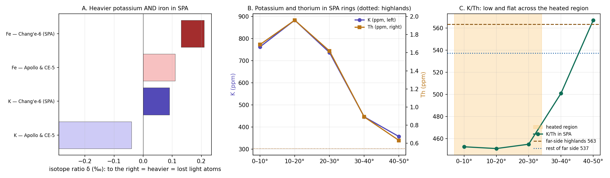
What to look at: in panel A the dark (SPA) points lie to the right of the light (near-side) points for both potassium and iron—the SPA samples are heavier in both. In panel C the ratio stays at one low level from the centre outward across the shaded heated region, and rises to the level of the comparisons only at the margin.
| Measured | Value | Source |
|---|---|---|
| K/Th in rings 0–30° | 451–455: 16%–20% below the highlands (563) and the rest of the far side (537); 567 at the margin | Lunar Prospector GRS (B7) |
| K in the Chang’e-6 basalts | 0 to (Apollo and Chang’e-5: to ) | Tian et al. 2026 |
| Fe in the same basalts | 0.13–0.21 (Apollo and Chang’e-5: 0–0.11) | Tian et al. 2026 |
| Excluded by the authors | Cosmic-ray effects and impactor material | Tian et al. 2026 |
| Sodium and potassium in glasses | Evaporated and recondensed onto the molten material | Li et al. 2026 |
| Unusual drying in SPA, without foreign isotopes | — | Hebrew-language paper (citation to be verified) |
| Sample site | 11.6° from the dome centre, inside the central mare zone; 210 km from the crater minimum (an earlier version gave 320 km, the distance from the weakest point of Figure B3.2) |
The first row is the map from orbit: the Lunar Prospector gamma-ray spectrometer (GRS) counted the gamma rays given off by potassium and thorium at the surface, and their ratio is 451–455 everywhere inside 30° of the centre—about a sixth to a fifth lower than outside. The ratio is used rather than potassium alone because it cancels much of the effect of simply having more or less of the same mixed material: both elements tend to travel together in melts, so a fall in their ratio points to potassium that was removed. The next two rows are the samples: the SPA basalts are heavier in potassium and in iron than every near-side basalt measured. The fourth row matters for the reading: Tian et al. checked and excluded the two other ways to make the isotopes heavy—exposure to cosmic rays at the surface, and material of a foreign body. What remains is evaporation.
Why compare with what lies outside SPA. To know what was there before the heating we use the neighbours: the same Moon, the same far side, the same ancient crust—without the burner. If SPA differs from them, the difference arose inside it. There are two comparisons (as set in B6): the highlands and the rest of the far side. For the isotopes the comparison is with near-side basalts, because Chang’e-6 is the only far-side sample. This is not a perfect comparison; a clean one will require a far-side basalt from outside SPA.
Why is potassium uniformly deficient relative to thorium across the whole heated region? And why has iron too—which evaporates only under very strong heat—lost its light atoms?
The loss is attributed to evaporation during the impact that formed SPA; in the model of Tian et al. (2026) about 2% of the potassium was lost. After evaporation part of the vapour recondensed (Li et al. 2026).
Consistent: heavy potassium means evaporation. Not consistent: an impact is very hot but short; the ratio is uniform across the whole heated region, not only around one point; and iron—which evaporates only under strong and prolonged heat—is heavy as well. The difference between the two kinds of heating is like the difference between a blowtorch passed once over a pan and a low flame left under it for hours: the first is hotter at its peak, but the second dries out the whole pan.
EXPLAINS PARTLY Impact evaporation accounts for heavy potassium, but a short event does not readily account for a uniform deficit across the whole region or for isotopically heavy iron.
Strong, concentrated and sustained heating. Water and similar substances clearly evaporated; the point is that strong, concentrated and sustained heating evaporated less-volatile elements as well. Hence potassium lost its light atoms; the iron did not evaporate and stayed, but the long heat took a small share of its lightest atoms, and the iron that remains is isotopically heavy. The long heat affected the iron, and perhaps also other, less-volatile materials.
Over the whole heated region (B8). The entire basin is a heated region, so the ratio is low and flat across the whole interior, with a transition at the margins.
At the surface, evaporation that created voids (B6). The gases that left the material opened pores in it, the high porosity of the upper crust found in B6.
The unusual drying fits the burner, and no foreign isotopes were found.
Thorium left the centre with the melt. There was a flow towards the crescent—not only ejected material—deflected by the rotation. Thorium hardly evaporates, but it “escapes” into the melt: in partial melting almost all of it passes into the molten material. Partial melting means that only part of a material melts, as when a frozen mixture is warmed and the first liquid to appear carries the substances that melt most easily; thorium, whose large atom fits poorly into crystals, goes with that first liquid. At the centre, where the heat was strongest, the most melt formed; the melt flowed outwards, was deflected towards the crescent side and carried the thorium with it. A depleted residue remained at the centre (1.7 ppm), and an enriched melt accumulated in the crescent (4–5 ppm at its foci). (ppm, parts per million, is grams in a tonne.) At the far end, while the Moon was attached, the rotational force on a broad, slow flow over a gentle slope was of the same order as the slope force; this is why the flow did not run straight downhill but bent to one side.
Why thorium is the index. Its atom is heavy (atomic mass 232), but it hardly evaporates and it moves with the melt, not with weight. Potassium that evaporated leaves thorium behind, and the ratio falls. Iron, by contrast, stayed where it was and was concentrated as other materials left (B10): the two separated because they behaved in opposite ways—thorium followed the liquid, iron stayed in place.
| What the model says | What is found |
|---|---|
| Evaporation across the whole heated region | K/Th 451–455 throughout the interior, 16%–20% below the comparisons |
| Strong, prolonged heating—iron too | Heavy Fe (0.13–0.21) |
| Samples from the central mare zone | Chang’e-6 11.6° from the dome centre |
| Thorium left the centre with the melt | Centre 1.7 ppm; ring 10–20° 2.0 ppm; crescent foci 4–5 ppm |
The last row is read from left to right as a path outward: thorium rises from 1.7 ppm at the centre to 2.0 ppm in the ring of 10–20° and to 4–5 ppm at the foci of the crescent—a centre emptied and a margin filled, as an outflow of melt requires.
FITS Sustained heating over the whole basin gives the uniform potassium deficit and the isotopically heavy potassium and iron, while thorium, carried by the melt from the centre to the crescent, records the outflow.
Data and code. Lunar Prospector GRS (B7); Tian et al. (2026), PNAS (doi:10.1073/pnas.2515408123); Li et al. (2026), EPSL (doi:10.1016/j.epsl.2026.119980).
Open. Where did the vapours go: to space through the opening, recondensed at the margins (where the ratio only returns to the highland level), or both? How much was lost: a small loss (a few per cent) over a vast area, or a large one? A low ratio is not a lost quantity, since mixing also affects it. The Hebrew-language source on the unusual drying is to be cited. Mixing versus evaporation test: a joint model of K, Th, FeO and mineralogy, checking whether a potassium deficit remains that matches the isotopes.
B12An oxygen-poor mantle
In brief. The mantle source of the Chang’e-6 basalts holds about 13 times less available oxygen than the mantle beneath the near side. In the model: prolonged heat, outgassing and evaporation removed the oxygen-bearing substances, and the iron from the Earth, which reached the base of SPA, bound what remained and was concentrated there as the other materials left. On cooling, the state was locked in.
B11 showed that the heat drove off the volatile elements. This section shows a second trace of the same heat, and the first chemical trace of the iron of B10: the mantle beneath SPA has lost much of its available oxygen.
What “reduced” means. In a hot material, iron can be held in two forms: as metal, or combined with oxygen as iron oxide. Which form wins depends on how much oxygen is free to react—its fugacity, in effect the chemical pressure of the oxygen. A material with much free oxygen is called oxidised; one with little is reduced. Geochemists measure this against a fixed reference, the iron–wüstite (IW) line: the oxygen level at which metallic iron and iron oxide (wüstite, FeO) can just exist side by side. IW is the distance from that line in log units, so each unit is a factor of ten. A negative value means less oxygen than the line: conditions in which metallic iron is stable and does not rust.
Zhang et al. (2025a) applied two independent methods (vanadium in spinel, europium in pyroxene) to 23 basalt fragments from Chang’e-6. Both methods rest on elements that change their electric charge with the oxygen available—vanadium and europium take a different form in a reduced melt than in an oxidised one—and the crystals that grew in the melt (spinel and pyroxene) record which form was present. Two independent methods agreeing makes the result firm.
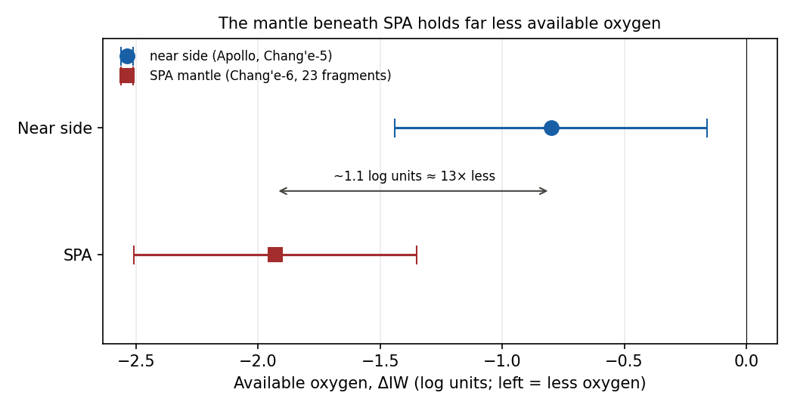
What to look at: the SPA samples sit to the left of the near-side samples, by about one log unit. Because the scale is logarithmic, a difference of 1.1 units is a factor of about 13, not a factor of 1.1.
| Where | IW |
|---|---|
| Beneath SPA (Chang’e-6) | |
| Beneath the near side (Apollo, Chang’e-5) |
The colour marks the direction: blue for the more reduced mantle, red for the more oxidised. The difference of the two central values, against , is the factor of about 13 of the figure.
Terminology. IW measures how much oxygen is available for chemical reactions in the material—not oxygen as a gas. In the young Moon oxygen was bound in the material. The sample site lies inside the mare zone, 11.6° from the dome centre. The basalts themselves are 2.8 billion years old and record the state of their mantle source: when a mantle melts, the melt carries the oxygen state of the place it came from, so a basalt is a sample of its mantle source taken at the time of its eruption.
The same mantle source was also found to be “extremely dry” (He et al. 2025) and “ultra-depleted” (Zhou et al. 2025; B13).
Why is the mantle beneath SPA so poor in oxygen compared with the near side?
Two possible processes (Zhang et al. 2025a): (1) asymmetric crystallisation of the magma ocean—more iron sank to the core beneath the near side, and the mantle there became oxidised; (2) release of sulphur and carbon monoxide in the impact that formed SPA, which reduced the mantle beneath it. The authors write that verifying either mechanism is still difficult.
Consistent: there are two possible mechanisms. Not decisive: the authors themselves do not distinguish between them; release during an impact is a short event.
EXPLAINS PARTLY Two mechanisms can produce a reduced mantle, but the authors cannot yet tell them apart, and impact degassing is a brief event.
Heat, outgassing and evaporation—and, in addition, iron. Prolonged temperature, outgassing and evaporation push the oxygen to other regions; heat drives oxygen out and burns it. Stated precisely: prolonged heat, outgassing and evaporation removed the oxygen-bearing substances, and the iron bound what remained—both mechanisms from the same heat source.
The iron from the Earth. Iron-bearing material from the Earth’s interior rose to the Moon, and also to the deep layers beneath SPA; this iron had thermodynamic effects—metallic iron “absorbs” oxygen. Metallic iron and free oxygen do not stay apart: the iron combines with the oxygen into iron oxide, as a steel wool pad left in water rusts and takes oxygen from the water around it. A large supply of metal therefore lowers the oxygen of the material around it.
It took up the oxygen at the centre, and stayed there. Beneath SPA there was no upwelling to carry the iron up and down; there was heating and cooling. The iron took up the oxygen where it lay, and as the heat drove the other materials off, the iron that remained was concentrated, with the oxygen bound in it. This is the deep mass of B10.
The centre has the least oxygen, and this was locked in. Oxygen that arrived later was no longer absorbed; the material remained oxygen-poor as it cooled. Once the material hardens, its oxygen state is frozen.
Requirement. What reached the base of SPA carried metal. At that time the Earth had not much of a mantle and not really a core: its interior was fairly mixed, and iron-bearing material rose to the Moon and also to the base of SPA (Paper 3, C.10). The reasoning is direct. Had the material that came from the Earth been oxidised silicate alone, it would have brought oxygen with it and raised the IW beneath SPA above the near side, not lowered it. A mantle 13 times poorer in oxygen can only be made by material that takes oxygen up, and that is metal; the iron-bearing material that reached the base of SPA supplied it.
| What the model says | What is found |
|---|---|
| Oxygen-poor mantle beneath the heated region | IW against on the near side |
| Least oxygen at the centre of the mare zone | The Chang’e-6 site lies inside the mare zone—the most oxygen-poor mantle known |
| Same heat source: evaporation too | Extremely dry mantle; isotopically heavy potassium and iron (B11) |
| The iron bound the oxygen and was concentrated in place | The deep mass (B10) |
The table links B12 to its neighbours: the first two rows are this section’s own measurement, the third ties it to the evaporation of B11, and the fourth to the deep mass of B10. Three separate measurements—gravity, isotopes and oxygen—are read as the work of one heat source and one supply of iron.
FITS A single prolonged heat source that drove oxygen out and supplied iron to bind the rest gives the most oxygen-poor mantle known at the centre of the mare zone, together with the dry mantle, the heavy isotopes and the deep mass.
What it shows. Prediction: future samples from inside SPA but outside the mare zone should show more available oxygen than Chang’e-6; samples from inside the mare zone should show as little as Chang’e-6 or less. This prediction follows from the model’s centre-outward structure: the iron and the heat were concentrated in the mare zone, so the loss of oxygen should be strongest there. Link to B16 (magnetism): tiny crystals of haematite and maghemite—oxidation products formed in transient vapours—were found in the Chang’e-6 samples and have been proposed as the carriers of the magnetic anomalies on the margins of SPA. In the model they are the oxygen that was pushed to other regions; this is examined in B16.
Data and code. Zhang et al. (2025a), Nature Communications 16 (doi:10.1038/s41467-025-62341-5); Zhou et al. (2025), Nature 643, 371–375 (ultra-depleted mantle; doi:10.1038/s41586-025-09131-7); He et al. (2025), Nature (dry mantle; doi:10.1038/s41586-025-08870-x).
B13A depleted source
In brief. The ancient basalt from SPA (4.2 billion years) came from a source rich in thorium, potassium and rare earth elements; the young basalts (2.8 billion years) from the same region came from an ultra-depleted source. In the model: the material arrived from the Earth rich, and heat from below depleted it while the Moon was attached—melt left again and again and carried the escaping elements with it.
B11 and B12 read what the heat drove off as vapour. This section reads what it took away in a different way: by melting. It compares two basalts from the same place, made 1.4 billion years apart, and asks what changed in their source between them.
Terminology. Elements that do not enter crystals (thorium, potassium, the rare earth elements) escape into the melt whenever material melts. A depleted mantle is one from which melt has already left—a “washed-out” residue. It is like a tea bag: the first cup takes the strong flavour, and each later cup from the same bag is weaker, because what dissolves easily has already gone. On the Moon these escaping elements are gathered under one name, KREEP: K for potassium, REE for the rare earth elements, P for phosphorus. A KREEP-rich source still holds them; a KREEP-poor source has lost them.
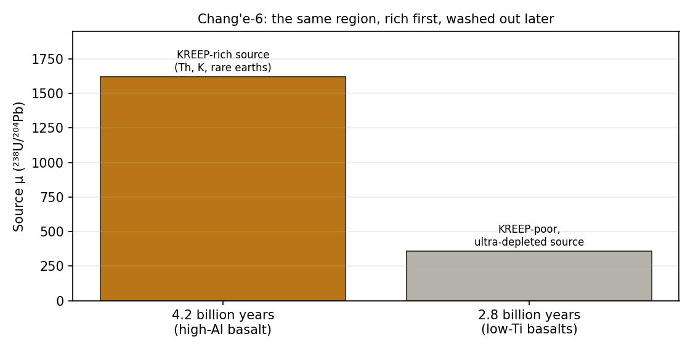
The measure used in the figure, , is the ratio of uranium-238 to lead-204 in the source. Uranium belongs with the escaping elements and leaves with the melt; lead-204 is not made by decay and stays fixed. A high therefore marks a source that still holds its escaping elements, and a low a source that has lost them. What to look at: the same place gave a high- source first and a low- source later.
| What | What is found | Source |
|---|---|---|
| The young basalts (2.8 billion years) | Extreme depletion: initial Sr/Sr 0.699237–0.699329; Nd 15.80–16.13 | Zhou et al. 2025 |
| The same basalts | KREEP-poor source, | Zhang et al. 2025b |
| The ancient basalt ( million years) | KREEP-rich source, | Zhang et al. 2025b |
| Implication (from the literature) | The depleted, refractory source inhibits melting: few eruptions despite the thin crust | Xu team (Cui et al. 2024) |
Orange marks the rich source, blue the washed-out one. The strontium and neodymium values of the first row are two further measures of the same depletion, read from radioactive decay. Rubidium, which leaves with the melt, decays slowly into strontium-87; a source that lost its rubidium early grows little strontium-87, and its Sr/Sr stays low—as here. Neodymium leaves with the melt more readily than samarium, which decays into neodymium-143; a source that lost neodymium early is left relatively rich in samarium and grows extra neodymium-143. Nd measures that extra in parts per ten thousand against an undepleted reference, so a high positive value, here about 16, marks a source that was washed out long before its basalts erupted. The two values, 1,620 and 360, show the fall in one number: the later source holds between a quarter and a fifth of the escaping uranium of the earlier one.
Why is the mantle beneath SPA so washed out—and why did the same region first erupt rich basalt and only later washed-out basalt?
Two explanations (Zhou et al. 2025): (1) the mantle was depleted from the start, by crystallisation of the magma ocean; (2) the impact that formed SPA melted a large volume of mantle, and the melt left, leaving a depleted residue.
Consistent: both explanations yield a depleted source. Not decisive: the authors do not distinguish between them; an impact is a single, instantaneous event.
EXPLAINS Both proposed explanations yield the observed depleted source, although the authors do not choose between them.
Rich from the Earth, washed out by heat. The ancient basalt came from the Earth rich, but over time it was depleted by the heat. The material that arrived in the stream along the pear was rich in the escaping elements—this is the 4.2-billion-year basalt, from the time of the burner.
The mantle is depleted because there was heat at its base. Heat from below melted the mantle again and again while the Moon was attached; each time the melt left—upward and outward—carrying the escaping elements with it and leaving a washed-out residue. This is the tea bag used again and again: a single melting would leave a partly depleted residue; repeated melting leaves the extreme depletion. The source was washed out by the time of the release, and the 2.8-billion-year basalts record that washed-out residue as it finally froze.
Thorium left with the melt (B7, B9, B11). The thorium-bearing melt flowed from the centre and was deflected towards the crescent. The elements missing from the source at the centre are therefore not lost; they are found in the crescent.
| What the model says | What is found |
|---|---|
| First, rich material from the Earth | The 4.2-billion-year basalt: KREEP-rich source () |
| Later, a residue washed out by heat | The 2.8-billion-year basalts: ultra-depleted source (; Nd 16) |
| The order: rich washed out | Same region, 1.4 billion years apart |
| The escaping elements left with the melt | The thorium crescent (B7, B9) |
The colours repeat those of the previous table, rich (orange) then washed out (blue). The point of the third row is the order: in one place, the rich source comes first and the washed-out one later, which is the order a heating from below, while the Moon was attached, produces. A mantle depleted from the start would not first give a rich basalt.
FITS Rich material delivered from the Earth and then repeatedly melted from below gives the observed sequence in one region: a KREEP-rich source first, an ultra-depleted residue later, and the escaping elements gathered in the thorium crescent.
What it shows. Link to B8: a washed-out, refractory residue is hard to melt, so late lava in SPA is scarce (as the Xu team also concludes). The elements that make a mantle melt easily are the very ones that left; what remains needs more heat to melt, and so the basin, despite its thin crust, shows little late lava.
Data and code. Zhou et al. (2025), Nature 643, 371–375 (doi:10.1038/s41586-025-09131-7); Zhang et al. (2025b), Nature (doi:10.1038/s41586-024-08382-0); Cui et al. (2024), Science.
B14Metal in the ancient norites
In brief. Two norites 4.25 billion years old contain iron–nickel metal with a nickel/cobalt ratio of 8.5–11. Science reads this as material of the impacting body; but iron from the Earth, re-melted in an oxygen-poor setting and mixed with the metal already in the Moon, also gives such a ratio. What will decide is the isotopic composition of the metal.
B10 and B12 traced the iron from the Earth in gravity and in the oxygen of the mantle. This section comes to the iron itself: metal grains that can be held in the hand. It is also where the model makes its sharpest prediction.
What a norite is. A norite is a crystallised melt made mostly of plagioclase (the light mineral of the lunar highlands) and of pyroxene poor in calcium. The Chang’e-6 norites are clasts, fragments of it collected in the returned soil. They crystallised million years ago (Su et al. 2025; B7)—the 4.25 billion years of this section—as the melt pond above the burner solidified. A later event reset their ages at Ga (Su et al. 2025): an event that restarted the radioactive clocks by which their age is read. In the model that event is the separation itself, the end of the attached stage (B15). The metal grains were inside the norites when they formed. They are therefore part of the sample from its birth, not dust that fell on the surface later, and this is what makes them decisive (E.7).
Why nickel and cobalt. Nickel and cobalt both prefer metal to silicate—they are siderophile, “iron-loving”—and so they follow iron wherever it goes. Their ratio, Ni/Co, differs between reservoirs and is used as a first fingerprint of where a metal came from.
Su et al. (2025, National Science Review 12, nwaf103; doi:/nsr/nwaf103) report iron–nickel metal grains in two norite clasts (CE6C0100YJFM002-158 and CE6C0200YJFM001EGP07-16) with Ni/Co of 8.5–11, above the values measured for the metal already in the Moon (below 5).
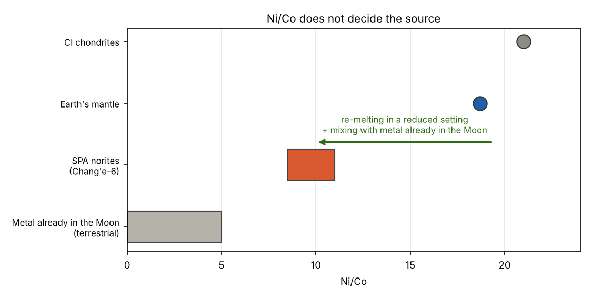
What to look at: the SPA norites lie between the metal already in the Moon on the low side and the Earth and the meteorites on the high side. The arrow shows the model’s reading: metal that began high, near the Earth’s value, and was brought down into the measured range.
| Material | Ni/Co |
|---|---|
| Metal already in the Moon | below 5 |
| SPA norites | 8.5–11 |
| Earth’s mantle | 18.7 (McDonough & Sun 1995) |
| Primitive meteorites (CI) | 21.0 (McDonough & Sun 1995) |
| Earth’s core | 20, of meteoritic order |
The colour deepens as the ratio rises. The key point of the table is the bottom three rows: the Earth’s mantle (18.7), the Earth’s core (20) and primitive meteorites (21.0) lie close together. A ratio above that of the metal already in the Moon therefore marks metal that had not yet equilibrated in the Moon, but it does not tell the Earth from a meteorite.
Where did metal with a Ni/Co ratio higher than that of the metal already in the Moon come from?
Such a ratio is meteoritic: material of the impacting body, trapped in the melt pond (Su et al. 2025). This has been a long-standing point of conflict with the model.
The reading holds in that the ratio is higher than that of the metal already in the Moon. It is not decisive: iron from the Earth also gives a high ratio, and the ratio changes when the metal is partitioned between metal, silicate and sulfide. A metal grain is not a sealed sample of its source; each time it melts it trades nickel and cobalt with the silicate and sulfide around it, and its ratio moves.
EXPLAINS A meteoritic source accounts for a Ni/Co ratio above that of the metal already in the Moon.
The metal is iron from the Earth, brought by the flow along the pear, and trapped in the norites when the melt pond above the burner solidified (B7).
If the material is terrestrial and the ratio in the Earth’s core is about 20, could the ratio have been lowered under the different conditions of that time, on the way from the Earth to SPA? It could, in two ways:
Re-equilibration in an oxygen-poor setting. Nickel and cobalt both partition into metal, but in an oxygen-poor setting more iron and cobalt enter the metal, and the ratio falls. The mantle beneath SPA is strongly reduced (B12), and the metal was re-melted in the melt pond, at low pressure. Nickel goes into metal under almost any conditions; cobalt is less eager and joins the metal in larger amounts only when oxygen is scarce. So the more reduced the setting, the more cobalt the metal takes, and the lower its Ni/Co.
Mixing with metal already in the Moon. Metal from the Earth’s deep iron (20) mixed roughly half and half with metal already in the Moon — itself terrestrial, but long equilibrated in the Moon (below 5) — gives 10–12, the measured range.
A refinement: in the model the iron came from the Earth’s deep iron while its core was still organising — the pre-core material that entered the pear — so its ratio need not be today’s core value of 20.
The Ni/Co ratio can thus be reached from the Earth as well as from a meteorite, and so it cannot decide between them. What can decide is a property that re-melting and mixing do not touch: the isotopes.
Why isotopes decide. Bodies of the solar system formed in different regions of the early disc of gas and dust, and each region received a slightly different blend of isotopes of elements such as chromium, titanium, molybdenum, ruthenium and osmium. Every body therefore carries an isotopic signature of its birthplace, as a wine carries the taste of its soil. The Earth and the Moon share one signature; most meteorites carry measurably different ones. Melting, cooling, re-equilibration and mixing with the metal already in the Moon—which itself carries the shared Earth–Moon signature—can move the Ni/Co ratio, but they do not change the isotopic signature of the metal. If the metal in the norites is from the Earth, its isotopes will match the Earth; if it came from a foreign body, the foreign signature will show.
| What the model says | What was found |
|---|---|
| Metal from the Earth in the melt pond | Iron–nickel metal in norites 4.25 Ga old |
| The ratio fell on the way from 20 | 8.5–11, between the metal already in the Moon and the Earth’s values |
| Terrestrial isotopic signature | Not yet measured |
The first two rows are met; the third, shaded, is the open one, and it is the one that decides.
FITS PARTLY The ratio fits; the decision lies with the isotopes.
Open. Prediction and test: the chromium, titanium, molybdenum, ruthenium and osmium isotopes of the metal in the two clasts should carry a terrestrial signature, with no meteoritic deviation; re-equilibration and mixing change the Ni/Co ratio but not the isotopic signature, so the isotopes read the origin of the metal directly. This is the sharpest prediction of the paper: the model holds that the Moon contains no material from outside the Earth–Moon system beyond tiny amounts — fine space dust drawn later onto its surface layer, perhaps one or two meteorites in four billion years — and these grains, dated and sealed inside their norites since 4.25 billion years, are where that claim can be tested directly (Part F). Whether this is the same iron as in the deep mass (B10) and in the reduced mantle (B12) remains open; the data are missing.
B15 Prolonged volcanism
In brief. In SPA, molten material rose over at least 2 billion years, from 4.25 to 2.2 Ga. In the model, the burner worked while the Moon was attached and calmed as the flattening relaxed, before the release; the separation, 3.87 Ga ago, closed the attached stage; from then on only residual heat acted, continuously and in slow decay, through the strategic point, and the volumes became smaller.
The question this section answers is how long SPA stayed hot, and what kept it hot. Ages are given in Ga, billions of years before today: 4.25 Ga is 4.25 billion years ago, close to the birth of the Moon, and 2.2 Ga is more than two billion years later. “Prolonged” means that the dated melts of SPA do not cluster around one moment, as the products of a single blow would; they spread from 4.25 to 2.2 Ga, a span of at least 2 billion years, in which molten material kept reaching the surface or freezing just beneath it. This span counts all the melting dated in SPA, from the deep norites to the youngest visible lava; the figure of about 1.5 billion years in B9 refers to one part of it, the lava of the central mare.
The ages come from two kinds of measurement, and the table below mixes them on purpose. A laboratory age is read from the decay of radioactive elements inside the crystals of a returned sample: it is precise to a few million years (the in the table) but belongs to a single fragment. A crater-count age is read from orbit: the longer a lava surface has been exposed, the more craters it has collected, so counting the craters on a lava deposit gives its age; it is less precise, but it covers whole deposits across the basin. Two terms recur. Norites are a coarse-grained material of plagioclase and low-calcium pyroxene that crystallises slowly from a large body of melt below the surface. KREEP is the lunar shorthand for material rich in potassium (K), rare-earth elements (REE) and phosphorus (P), together with thorium and uranium. The value is the ratio of uranium to lead (U/Pb) in the source from which a basalt melted; a high marks a KREEP-rich source, a low a depleted one.
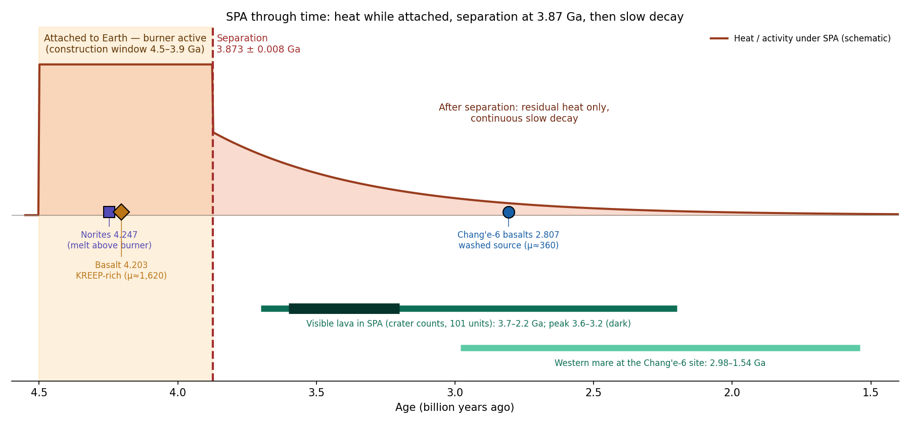
The figure is read from left (old) to right (young). The points on the left lie inside the shaded band, the attached period; the dashed line marks the separation; the bars to its right are the visible lava, which continues long after the separation but in smaller deposits. The curve is only a sketch of the order of events — heat high while attached, then a slow decline — and its height and slope are not computed.
| Age (Ga) | What | Source |
|---|---|---|
| Norites: melt that solidified slowly | Su et al. 2025, NSR (doi:/nsr/nwaf103) | |
| Aluminium-rich basalt clast, from a KREEP-rich source () | Zhang et al. 2025b, Nature (doi:/s41586-024-08382-0) | |
| Event that reset the norite ages | Su et al. 2025 | |
| 3.7–2.2 (peak 3.6–3.2) | Visible lava in and around SPA: crater counts on 101 of 129 deposits; thickness 31–273 m, volume 1–2,630 km | Pasckert et al. 2018, Icarus (doi:/j.icarus.2017.07.023) |
| 2.98–1.54 | Western mare at the Chang’e-6 site (crater counts) | Chang’e-6 literature |
| 99% of the Chang’e-6 basalt fragments, from a depleted source () | Zhang et al. 2025b; Cui et al. 2024, Science (doi:/science.adt1093) |
The table runs from the oldest age at the top to the youngest at the bottom. Three things in it carry the argument. First, the two oldest ages, 4.247 and 4.203 Ga, are melts formed within about 45 million years of each other, early in the Moon’s history. Second, the norites carry a second date, Ga: a heating event strong enough to restart their radioactive clocks, but not to make them anew. Third, the visible lava is much later, small and thin: deposits of 31–273 m thickness and of 1 to 2,630 km each, a modest amount for a basin 2,400 km across. Between the top and the bottom of the table, the source falls from about 1,620 to about 360: the same region gave a rich melt early and a depleted melt late.
Why did molten material rise in the same region for at least 2 billion years, and why did the volumes keep decreasing?
Internal heat: heat from radioactive elements inside the Moon, decaying with time; the far side has less of it. Thin crust: in SPA the crust is the thinnest and the basin the deepest, so magma reaches the surface relatively easily, and activity returns to the same region. Depleted source: the mantle there is depleted and refractory, so only small volumes came out. Different sources: the rich basalt (4.20 Ga) and the depleted basalt (2.81 Ga) came from separate mantle sources (Zhang et al. 2025b). 3.87 Ga: a later impact, separate from the one that formed SPA, reheated the norites and reset their age (Su et al. 2025).
Two events at the same place. To account for 4.25 and 3.87 Ga, science needs two separate impacts at the same point; the second impact is not identified with any particular crater or basin. Little heat on the far side, and activity over 2 billion years. The radioactive heat sources are concentrated on the near side, yet in SPA molten material rose from 4.25 to 2.2 Ga. The explanation rests on the thin crust, on the ease of reaching the surface, and not on the heat source. A rich source and then a depleted one. The explanation requires two separate mantle sources beneath the same site, one KREEP-rich and one strongly depleted. Limit of the data: four laboratory ages do not distinguish continuous activity from separate events.
A thin crust is a path, not a heater: it lets melt out more easily, but something must still make the melt, and on the far side the radioactive supply is small. This is why the “thin crust” answer leaves the duration unexplained.
EXPLAINS WITH DIFFICULTY Each finding receives an explanation, but through separate events and sources: two impacts at the same point, and two mantle sources.
The model reads the whole table as one sequence in three stages: a hot stage while the Moon was attached, the separation that ended it, and a long cooling tail.
While attached: the burner (4.5–3.87 Ga). The norites (4.25 Ga) are the melt above the burner (B7); the rich basalt (4.20 Ga) is lava of the central mare, from material that arrived from the Earth in a rich state (B9, B13). The attached stage is long: the relaxation of the region must happen within it — at least 10 years, the bound used for the viscosity estimate, and in the model about 600 Myr in all, from the start of the bulge to the release at 3.873 Ga. The burner worked within this stage and calmed before its end.
3.873 Ga: the separation itself. The burner had calmed as the flattening relaxed; the separation closed the attached stage, and the region cooled and contracted (B2, B3). The reset of the norite clocks is the mark of this event in the samples, and it falls at the end of the construction window (3.9 Ga), as the model requires.
After the separation: residual heat only. The heat stored beneath SPA, not a second burner (B9: a burner from the Earth, followed by the strategic point — thin crust, existing openings, residual heat). A large hot body cools from the outside inward, and its interior keeps its heat for a long time, as a thick stone wall keeps the warmth of a fire long after the fire is out. SPA had been heated from below for the whole attached stage, so it held a large store of heat.
Continuous, in slow decay. The source was depleted over time (B13), and therefore the volumes became smaller. Each melting removed from the source the elements that melt first, so the next melt came from a poorer source and in a smaller volume: this is the fall of from about 1,620 to about 360.
Why the visible peak is at 3.6–3.2 Ga and not right after 3.87 Ga. No lava flowed over the surface of SPA in that interval. The buried “lava” of B9 is the material between the burner and the outer part of SPA that the heat melted in place, the central mare among it, heated with the region and erased; it lies beneath the surface and was never an outpouring. After the separation it froze slowly, from the outside inward, and the interval 3.87–3.6 Ga is read as that slow freezing. A crater-count age can only be read on a surface that is still exposed; material that froze beneath the surface has no craters of its own, and drops out of the count.
One sequence and one source. 4.25 and 3.87 Ga are two stages of the same process, burner and then separation, not two impacts; and the rich and the depleted source are the same source, which began rich (material from the Earth) and was depleted by the heat (B13).
Each row of the table states one expectation of the model on the left and the measurement that meets it on the right.
| What the model says | What was found |
|---|---|
| Melting and lava during the burner | 4.25 Ga (norites), 4.20 Ga (rich basalt) |
| An event at the end of the construction window (3.9 Ga): the separation, not a second impact | Ga |
| Late activity at the same point, in decreasing volumes | 3.7–2.2 Ga, thin and small deposits; 2.8 Ga at a site within the mare region |
| The source was depleted | at 4.20 Ga at 2.8 Ga |
| The buried material was melted in place and froze slowly; nothing flowed over the surface | Buried lava in the centre (13.6%–24.1% of the 15° circle, B9) |
FITS Each of the five expectations of the model is met by the measured ages and deposits.
What we now have: the ages of SPA form one sequence — heating while attached, the separation at 3.873 Ga, and a cooling tail of shrinking volumes — rather than two blows and two unrelated sources.
Open. Prediction: the buried material in the central circle froze slowly after the separation, and its ages of 3.87–3.6 Ga record that freezing; the part that belongs to the central mare is older, from the time of the burner. More generally, SPA holds no lava younger than the tail of the record below 1.5 Ga.
B16 The magnetism of SPA
In brief. The centre of SPA is almost without magnetism; a magnetised ring surrounds it, and all the strong magnetism lies to the north, west and north-west: on the trailing side, the same side as the thorium crescent, near Ingenii — on the same side, not in the same place. In the model, the heat erased the magnetism in the centre; the iron and the heavy material were carried with the fluid, in the direction of rotation, to the trailing side and were left there, and therefore the magnetism is there.
The Moon has no global magnetic field today, but parts of its crust are magnetised: they hold a weak field of their own, frozen into iron-bearing grains when they cooled. These patches are called crustal magnetic anomalies. They matter here because they record where magnetised iron lies in the crust, and where heat later erased it. This section asks only where the magnetised material lies around SPA. How the material was magnetised in the first place — what field it cooled in — is a separate question, left for future work.
Field model T2015_449 (Tsunakawa et al. 2015; Wieczorek 2018), synthesised at 25 km altitude. Reproduction check: at 44.8°S 198.4°E the field is 0.85 nT, and an independent calculation gives 0.852 nT .
The field is measured from orbit, by magnetometers on spacecraft (Lunar Prospector and Kaguya) passing over the surface. The field model combines these passes into one map and computes from it the field everywhere at the same height above the surface, here 25 km, so that every place is compared at equal distance from its sources. The field is given in nanotesla (nT), a billionth of a tesla; the crustal fields of the Moon are a few nT to a few tens of nT, a tiny fraction of the field at the Earth’s surface. is the strength of the field, regardless of its direction. The reproduction check shows that our own computation of the published model gives the same value as an independent one, 0.85 against 0.852 nT, at a test point near the crater minimum.
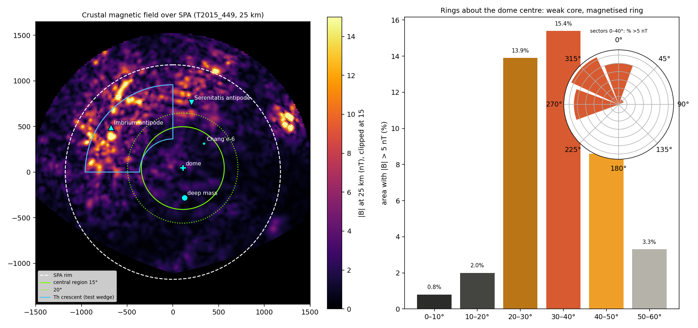
On the left map, the inside of the central circles is dark, almost empty of field, while the bright patches gather on the upper left, the north and the west. The graph on the right turns this into numbers, and the two tables below give them. The measure is simple: the share of the ground on which the field exceeds 5 nT, a level well above the weak background of the centre. Distances are given as angles on the Moon’s surface from the dome centre (51.4°S, 196.8°E; B5).
| Ring about the dome centre | Area above 5 nT |
|---|---|
| 0–10° | 0.8% |
| 10–20° | 2.0% |
| 20–30° | 13.8% |
| 30–40° | 14.4% |
The first table is read from the centre outward. In the inner 10°, less than one percent of the ground is magnetised above 5 nT; in the next ring, two percent; beyond 20°, about one seventh of the ground. The centre is almost bare, and the magnetised ground begins in a ring around it.
| Direction | Circle 0–40° | Ring 20–40° only |
|---|---|---|
| North | 25.2% | 31.7% |
| West | 26.6% | 34.1% |
| North-west | 31.5% | 42.2% |
| East, south-east, south | 0% | 0% |
Share of area with nT at 25 km.
The second table divides the same area by direction. The magnetised ground is not spread evenly around the ring: in the north-west, 42.2% of the ring is above 5 nT; in the east, south-east and south, none of it. The magnetism lies on one side.
Point values: dome centre 3.8 nT; crater minimum 1.9 nT; Chang’e-6 0.9 nT; peak 22 nT near Mare Ingenii and the Imbrium antipode. The side: seen from the dome centre, the leading side is east-north-east (76.7°), so the strong magnetism lies on the trailing side. On a turning body, the leading side of a point is the side that faces the direction of rotation, and the trailing side is the one behind it, as for a passenger on a turning roundabout: the leading side is in front, the trailing side behind. The north, west and north-west, where all the strong magnetism lies, are on the trailing side.
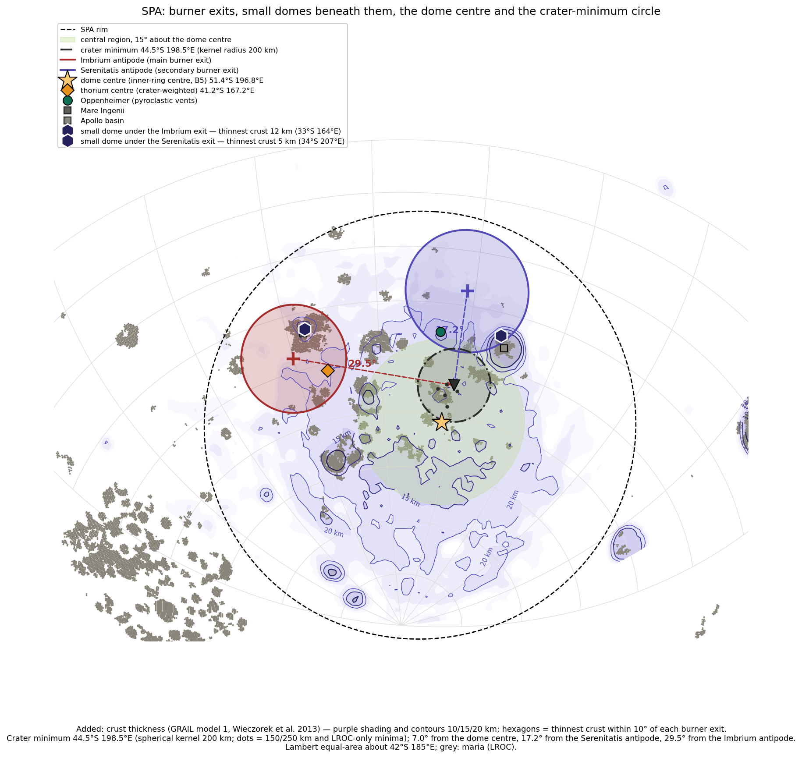
The figure sets the magnetism among the other centres of the paper. The strongest field lies near Ingenii, over the exit of the main burner, and north of the thorium centre: the magnetic peaks lie about 8° north of the thorium centre. Thorium and magnetism are on the same side of SPA, the trailing side, but not in the same place.
Why is the centre, the hottest place, almost without magnetism, and why does all the strong magnetism lie on one side, the same side as the thorium?
Iron of the impacting body: an oblique impact from the south scattered metallic iron over the northern rim (Wieczorek et al. 2012, Science 335). Amplification at the antipodes of large near-side basins (Lin et al. 1988; Mitchell et al. 2008; Hood et al. 2013). In the centre, the heat of melting erased the magnetisation (above the Curie temperature). The Curie temperature is the temperature above which a magnetic mineral loses its magnetisation; for metallic iron it is several hundred degrees, so ground heated past it and cooled again keeps no trace of its earlier magnetisation. The carriers of magnetisation at the margins of SPA: hematite/maghemite crystals in the Chang’e-6 samples (Liu et al. 2025). The magnetising field: a lunar dynamo (Weiss & Tikoo 2014).
The explanation requires an impact in a particular direction and an iron-rich body: assumptions chosen to match the distribution. The combination of magnetism, thorium and swirls on the same side is not derived from a single mechanism. The energy source for a strong field from a small core is not resolved.
EXPLAINS PARTLY The weak centre and the strong rim each receive an explanation, but the side and its coincidence with the thorium rest on chosen assumptions, and the source of the field remains unresolved.
The model answers the two halves of the puzzle — the bare centre and the one-sided ring — with the same heat and the same rotation that made the thorium crescent (B9).
The centre. The heat erased the magnetism. The hot centre cooled last and recorded late, in a weak field. The centre is therefore bare for two reasons together: what magnetisation it had was heated past the Curie temperature, and much of the iron near the surface that could carry a new one was carried away with the flow (below).
The side. The heavy material moved to the crescent, in the direction of rotation, and was left there. The iron was carried with the fluid to the trailing side, like the thorium, and there the magnetism is strong. The model keeps the transport of thorium with the fluid, because near the Serenitatis exit there is no thorium concentration (mean 3.01 ppm, maximum 3.23 ppm, against 4.27 ppm near the Imbrium exit); had the thorium come directly from the burners, it would have to be concentrated there as well. Iron and thorium were moved by the same flow, but iron is heavy and was left behind where the flow slowed, while thorium stayed in the liquid that spread; this is why the two lie on the same side and not in the same place.
The source of the iron: the Earth’s interior, through the pear (B10, B12, B14).
What magnetised it: left open for future work. This paper places the iron; the field in which it cooled is not part of its argument.
Observation: the peak (22 nT) lies near Ingenii, which is also near the Imbrium exit.
| What the model says | What was found |
|---|---|
| The centre was erased | 0–10°: 0.8%; 10–20°: 2.0% |
| The iron moved to the trailing side and was left there | North/west/north-west 32–42% (ring), east/south 0%; the trailing side |
| The same side as the thorium | Thorium crescent: north-west |
| Iron from the Earth’s interior | B10, B12, B14 |
FITS The erased centre, the strong magnetism on the trailing side and its coincidence with the thorium crescent follow from one process: iron and heavy material carried with the fluid and left there.
Data and code. Field model T2015_449 (Tsunakawa et al. 2015, doi:/2014JE004785; Wieczorek 2018, doi:/2017JE005418; Zenodo 3873648); Wieczorek et al. 2012 (doi:/science.1214773); Weiss & Tikoo 2014 (doi:/science.1246753); Zhang et al. 2025 (Nature Communications); code: field.py, run.py and B25_spa.npz (folder B16_2026-10-05); independent check: report Lunar_Magnetism_Test.pdf.
B17The light swirls
In brief. Within SPA the swirls lie at Mare Ingenii, inside the thorium crescent, above a strong magnetic field. Mare Moscoviense has lava flows but no strong field and no swirls. In the model a swirl is a flow of two materials that froze before they mixed — iron from below, aluminium and silica from above. Moscoviense was an active mare: its iron could sink, and it simply froze. SPA was not an active mare: nothing was brought up from below, so there was no mechanism for its iron to sink; it was heated and cooled, and its iron stayed and was concentrated as other materials left.
This section follows directly from B16: the swirls are the one feature of the lunar surface that can be seen with the eye and that sits only where the crust is strongly magnetised. They therefore show, on the surface, where the magnetised iron lies.
What they are. Bright, sinuous patches without relief, alternating with dark lanes, on a scale of 1–5 km; young craters cross them without breaking the pattern. Every swirl sits on a magnetic anomaly. Images: LROC, The Swirls of Mare Ingenii; Reiner Gamma (NASA SVS).
A swirl looks like a pattern of milk poured into coffee and left unstirred: pale curving bands and loops, with dark lanes between them, painted on flat ground. “Without relief” means that the pattern has no height of its own: it is a pattern of brightness, not of hills and valleys. Because young craters cut through it and the pattern continues on their far side, it is not a layer that a single crater could break; it is tied to something that lies beneath the surface over the whole area.
The field over SPA is shown in Figure B16.1: Ingenii lies inside the crescent, near the Imbrium antipode.
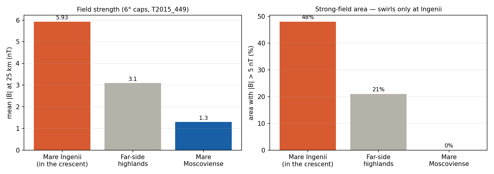
The comparison is built as a test with a control. Ingenii is a far-side mare with flows and swirls; Moscoviense is a far-side mare with flows of its own; the far-side highlands are ground with no mare. If flow alone made a strong field, the two maria would be alike. They are not.
| Place | Lava flow | Mean field | Peak (nT) | Area nT | Swirls |
|---|---|---|---|---|---|
| Mare Ingenii (inside the crescent; 27.5° from the SPA centre, bearing 304°) | 5.9 nT | 22.7 | 48% | ||
| Far-side highlands (10°N 180°E) | — | 3.1 nT | 12.3 | 21% | — |
| Mare Moscoviense | 1.3 nT | 3.6 | 0% |
Reproduction check: synthesis of model T2015_449 (Tsunakawa et al. 2015; Wieczorek 2018) gives 0.85 nT at 44.8°S 198.4°E, as in B16 . Moscoviense: lavas rich in iron and titanium, the thinnest crust on the Moon, olivine–pyroxene–spinel lithologies (Kramer et al. 2008; Bhatt et al. 2018, doi:/j.icarus.2017.10.009; Kramer et al. 2010).
The table is read down the columns. Ingenii has a mean field of 5.9 nT and almost half its ground above 5 nT; Moscoviense, with lava flows and the thinnest crust on the Moon, has 1.3 nT and none of its ground above 5 nT — weaker even than the highlands with no mare at all. Of the three, only Ingenii has swirls.
Rotation and viscous flow: the Ekman number, for lava of 100 Pa s, at three flow scales. A value below 1 means that the rotation deflects the flow. The Ekman number compares two effects on a moving fluid: the internal friction of the fluid (its viscosity), which keeps the flow going straight where it is pushed, and the turning of the body beneath it, which bends the flow sideways. It grows with the viscosity and falls with faster rotation and with the square of the size of the flow. In the table this shows as a hundredfold drop for each tenfold step in scale, and a drop as the rotation becomes faster from the bottom row to the top.
| Rotation | 100 m | 1 km | 10 km |
|---|---|---|---|
| Attached, 5.77 h | 0.012 | 0.0001 | 0.000001 |
| Once in two days | 0.10 | 0.001 | 0.00001 |
| Once in 5 days | 0.24 | 0.002 | 0.00002 |
| Today, 27 days | 1.3 | 0.013 | 0.0001 |
The attached row uses the Earth’s day at release of the series, 5.77 h (Paper 2, §B.1; an earlier version used 6.6 h and gave 0.013 at 100 m). The number grows in proportion to the length of the day, so the other rows follow from the first; an earlier version gave 0.09 and 0.0009 for two days and 0.23 for five. Every value is below 1 except one: a flow 100 m across under today’s slow rotation. For flows of a kilometre and more, the rotation bends the flow at every rate of rotation in the table, from the attached stage to today.
Why do the far-side swirls cluster around SPA, and within it specifically in the crescent, and why does another mare, with lava flows of its own, have no swirls?
The crustal magnetic field deflects the solar wind; beneath it the ground weathers slowly and stays bright. According to the models, a field lying along the ground gives bright loops, and a vertical field gives dark lanes. The field sources must be narrow and shallow, dikes or lava tubes, and magnetised far more strongly than any Apollo sample (Hemingway & Tikoo 2018). Sorting of fine dust and a comet impact have also been proposed.
The solar wind is a stream of charged particles from the Sun. Where it strikes the bare ground, it slowly darkens the surface (“space weathering”); where a local field turns it aside, the ground stays fresh and bright, as a patch of floor under a rug stays unfaded in a sunlit room. A dike is a vertical sheet of once-molten material that cut upward through the crust; a lava tube is a channel in which lava flowed beneath a frozen roof.
Where the metallic iron came from, magnetised more strongly than any sampled material, is not explained. Why the far-side swirls cluster around SPA, and why other maria with flows (Moscoviense) lack field and swirls, is not derived.
EXPLAINS PARTLY The mechanism of the brightness is explained; the source of the iron and its location are not.
The model does not enter into magnetism: the explanation of the brightness by the magnetic field and the solar wind (Step 3) is the literature’s and is not taken up here. The model reads the swirls by their materials: what the bright and the dark are made of, how they were arranged, and why they lie here.
What the bright and the dark are. The model reads the dark as iron and the bright as aluminium and silicates: two materials that froze before they mixed, the grey being the mixed state; the silica came from above and the iron from below. The measurements:
| Site | FeO bright / background (wt%, Clementine) | Composition |
|---|---|---|
| Reiner Gamma | 15.7 / 18.8–19.4 | The bright is rich in plagioclase, AlO, CaO, MgO; poor in FeO, TiO and dark minerals (Hu et al. 2024) ; the soil texture also differs |
| Mare Ingenii | 14.1 / 16.2 | Less iron in the bright ; but the pyroxene does not follow the swirl (Kramer et al. 2011) |
| Descartes | 4.5 / 5.8–6.1 | Less iron in the bright |
| Gerasimovich | 5.9 / 5.7–5.8 | No difference |
Caveat: the method of measuring iron from orbit can mislead precisely at swirls (anomalous space weathering looks like “less iron”; Blewett et al. 2011).
FeO is iron given as the weight of its oxide, in percent of the weight of the surface material (wt%), measured from orbit by the Clementine spacecraft. Each row compares a bright swirl with the ground around it. In three of the four sites the bright part holds less iron than its surroundings; at Gerasimovich there is no difference. The caveat matters: the orbital method infers iron from colour, and the same slow weathering that keeps swirls bright can make them look poorer in iron than they are. Test: the material excavated by small young craters inside a bright loop compared with a dark lane. If the bright is rich in aluminium below the surface too, and the dark in iron, the pattern lies in the material itself and not only in the weathering.
A flow that froze before it mixed. The model reads the swirls as a flow of materials in which the mixing was weak: the material froze before it mixed completely. Only lava rises. Elongated grains stand upright during the ascent and lie down at the exit, either through the cold or through the direction of the flow. At the opening the flow turns from vertical to horizontal, and the elongated grains lie down with it; the cold freezes them where they are. Some grains had time to lie down and some did not. Elongated grains in a moving fluid line up with the flow, as logs in a river turn to point downstream; a grain that freezes standing keeps the record of the rising flow, a grain that freezes lying the record of the spreading. The table follows the lava from the channel to the surface.
| Where | The flow | The grains | What is seen |
|---|---|---|---|
| In the feeder channel, ascending | Vertical | Upright | Dark lane: iron from below |
| At the exit and in the spreading | Horizontal, then frozen | Lying | Bright loop: aluminium and silica from above |
The table reads the pattern as the record of the flow itself: where the material rose, the iron from below stayed in the lane; where it spread and came to rest, the light material from above lay over it. The magnetic reading of the same pattern (Step 3) belongs to the literature and is not taken up here.
The rotation. The rotation may be what laid the grains down; even one rotation in several days is fast for this purpose. Checked with the Ekman numbers above: for flows of a kilometre and more, the rotation deflects the flow in every state, also after the separation.
Why Moscoviense has no swirls. Moscoviense was an active mare: material rose and sank back through it, and its iron could sink down; when it calmed it simply froze, and it has neither field nor swirls. SPA also received heat, but it was not an active mare: nothing was brought up through it from below, and so there was no mechanism for anything to sink. The material in place was heated, cooked and changed; there was heating and then cooling. The iron that was there stayed, and as the other materials left it was concentrated, forming a concentration of iron in SPA (B10, B12, B14); part of it was carried with the flow to the crescent (B16), where the swirls of Ingenii lie. Moscoviense is the comparison that shows the difference: it had flow, iron-rich lava and the thinnest crust, but as an active mare its iron sank.
| What the model says | What was found |
|---|---|
| The SPA swirls lie in the crescent, where the iron moved | Ingenii inside the crescent |
| Iron concentrated in SPA; at Moscoviense the iron sank | Ingenii 5.9 nT / 48%; Moscoviense 1.3 nT / 0% |
| An active mare that froze gives no swirls | Moscoviense: flows yes, swirls no |
| Dark = iron from below, bright = aluminium and silica from above | Less iron in the bright at three of four sites (Reiner Gamma, Ingenii, Descartes) |
FITS The swirls appear where a flow of two materials froze over the iron concentrated in SPA, in the crescent at Ingenii, and are absent at Moscoviense, an active mare whose iron sank and which simply froze.
Data and code. Field model T2015_449 (Tsunakawa et al. 2015, doi:/2014JE004785; Wieczorek 2018, Zenodo 3873648); narrow, shallow, strongly magnetised sources: Hemingway & Tikoo 2018, JGR Planets; horizontal field = bright, vertical = dark, and the simulation of Reiner Gamma: Hemingway & Garrick-Bethell 2012; Deca et al. 2020; composition of Moscoviense: Kramer et al. 2008, Bhatt et al. 2018, Kramer et al. 2010.
Open. Predictions: the bright loops lie at the margins of lava flows, where the flow came to rest, and the dark lanes above the feeder channels. If the rotation laid the grains down, the lying directions (inferred from the shape of the swirls) are parallel; if the flow did, they are scattered. A sample from Moscoviense will show little metallic iron and more available oxygen than SPA. Gerasimovich (23°S 237°E, outside the SPA rim, near the Crisium antipode) and Firsov (4°N 112°E) are far-side swirls far from the crescent; the source of the iron there is open (coordinates to be verified). The age of the Ingenii lavas, before or after 3.87 Ga, is open.
B18The anomalies together
In brief. Seventeen anomalies. Science explains six fully, nine in part, one with difficulty, and one not at all. The model fits sixteen, and one in part (B14, which the isotopes will decide). The measurements are ordered about one centre — one heat source, long-lived — not about one short blow from outside.
Sections B1 to B17 each ended with two verdicts: how well the accepted reading of science explains the anomaly, and how well the model fits it. This section sets all thirty-four verdicts side by side, so that the reader can see the whole basin at once.
How to read the table. Each row is one anomaly. “What is measured” gives the key numbers of its section. The column “Science” gives the verdict of the accepted reading, on a four-step scale: explains (light green), explains partly (light orange), explains with difficulty (deeper orange) and does not explain (red). The column “Model” gives the verdict of the model on a two-step scale: fits (green) and fits partly (orange). The colours run in one direction: from green, where the measurement is accounted for, through orange, to red, where it is not. The last column states, in one line, how the model accounts for the anomaly. Read down the two verdict columns: the column of science changes colour from row to row; the column of the model stays green but for one row.
| Anomaly | What is measured | Science | Model | The model, in a line | |
|---|---|---|---|---|---|
| B1 | The crater record | Deficit concentrated in the centre, 0.51; minimum 45.4°S 197.9°E, record strength 0.45; 20–40 km 0.47 against 10–20 km 0.91; craters 18% shallower, with high rims | does not explain | fits | Heat from below erased and relaxed the craters; compacted ground, high rims; the minimum south of the Serenitatis exit, on its meridian |
| B2 | Shape and depth | The lowest region of the Moon; floor km, depth 6–9 km; remainder to km at the centre | explains | fits | A dome that collapsed; compaction strongest at the centre, weakening to the rim |
| B3 | Thin crust | The thinnest crust; not round; thinnest at Apollo | explains | fits | Crust slid off the dome; base melted; small domes over the exits (Ingenii, Apollo) |
| B4 | The outer ring | Thickened crust, asymmetric — thick to the east (7.8 km toward 97°) | explains partly | fits | The material that slid off the dome piled at the margins |
| B5 | The inner ring | Centre 51.4°S 196.8°E (the dome’s centre), 118 km east-north-east of the ellipse’s centre | explains partly | fits | The edge of the dome; 29° from the Imbrium exit, 24° from the Serenitatis exit |
| B6 | Density and porosity | Pores closed at depth, most at the centre | explains partly | fits | Compaction by heat |
| B7 | An unusual floor | Floor rich in pyroxene and iron; thorium in a crescent | explains | fits | A melt lake south of the exits; the liquid carried to the trailing side |
| B8 | Little visible lava | About 4% mare in all SPA; more at the centre | explains partly | fits | Heating and melting from below, not eruption across the basin |
| B9 | Buried basalts and the central mare | Buried lava at the centre; a one-sided thorium crescent, 12–32° | explains | fits | A central mare, heated with the region and erased; the liquid turned by the rotation to the trailing side (simulation at 5.77 h) |
| B10 | The dense mass | A deep mass excess (James et al. 2019) south of the dome | explains partly | fits | Iron from the Earth’s interior, concentrated in place by heating and cooling; not an active mare, so nothing sank |
| B11 | Volatile loss | A mantle poor in volatiles, iron isotopically heavy | explains partly | fits | Prolonged heat and evaporation |
| B12 | An oxygen-poor mantle | IW against | explains partly | fits | Heat drives off oxygen; metallic iron consumes it |
| B13 | A depleted source | Ancient, depleted basalt source | explains | fits | Left the Earth rich and was depleted by the heat |
| B14 | Metal in the norites | Ni/Co; iron–nickel grains; ages 4.247 and 3.873 Ga | explains | fits partly | Terrestrial material; the isotopes decide |
| B15 | Long volcanism | 4.25 3.87 3.6–3.2 2.8–2.2 Ga | explains with difficulty | fits | One burner, calmed before the release; residual heat after; the visible peak 3.6–3.2 is what stayed exposed |
| B16 | Magnetism | Centre 0.8% above 5 nT; ring 14%; north-west 42%; east and south 0% | explains partly | fits | The centre erased; iron carried to the trailing side and left there; who magnetised it: future work |
| B17 | Swirls | Ingenii: field 5.9 nT against Moscoviense 1.3 | explains partly | fits | A flow of two materials that froze before mixing; Moscoviense, an active mare, froze without swirls |
The count below sums the two verdict columns. It is read across: on the left, how the seventeen anomalies divide under the reading of science; on the right, how they divide under the model.
| Verdict of science | Anomalies | Verdict of the model | Anomalies |
|---|---|---|---|
| Explains | 6 | Fits | 16 |
| Explains partly | 9 | Fits partly | 1 |
| Explains with difficulty | 1 | ||
| Does not explain | 1 |
The difference between the two columns is not that science has no answers: it explains six anomalies fully and nine in part. The difference is in how the answers are built. Science gives each anomaly its own answer — an oblique direction here, a second impact there, a separate mantle source elsewhere — and the answers are not derived from one another. The model gives all seventeen one cause, and the single row where it fits only in part, B14, is the one the isotopes of the metal will decide (Part F).
One centre. If SPA were the mark of one collision, the collision should have mixed everything evenly. One short blow does not order every measurement — depth, crust, rings, iron, oxygen, thorium, buried lava, ages, magnetism — about one centre and in layers by depth; one heat source, long-lived and centred, does. Science answers each part: the melt sheet differentiated into layers; the depth of excavation changes from the centre to the rim; an oblique impact gives an asymmetry. Each answer explains a part; none explains all the layers, the long span of ages (4.25 to 2.2 Ga), and the magnetism and the thorium on the same side — the same side, though not the same place.
An everyday comparison: one hard stir of a pot of soup throws its contents about once, at random; a flame kept under the pot for a long time reduces it in a pattern around the hottest point: the water boils off, the heavy matter stays and thickens, and the froth gathers at the edge. SPA looks like the second.
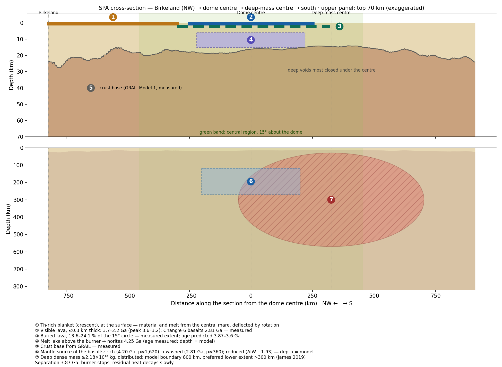
The section sets seven of the components found in B1–B17 in one cut through the basin, each with its measurement and its age, so that their order about one centre and in layers by depth can be seen in one picture.
The picture as a whole. The heat entered through two burners of the near side — Imbrium, the main one, and Serenitatis, the secondary. Over each exit, on the far side, a small dome of thin crust: Ingenii (12–16 km) and Apollo (5–9 km). South of the exits lie the large dome and the hot centre: the dome’s centre, the broad thin crust, the crater minimum and the dense mass. On the trailing side, to the north-west, lies the crescent: thorium, magnetism and swirls — on the same side, with the magnetic peaks about 8° north of the thorium centre. All the centres, with the exits and the dome before and after the rounding, are set on one map in Figure C.1.
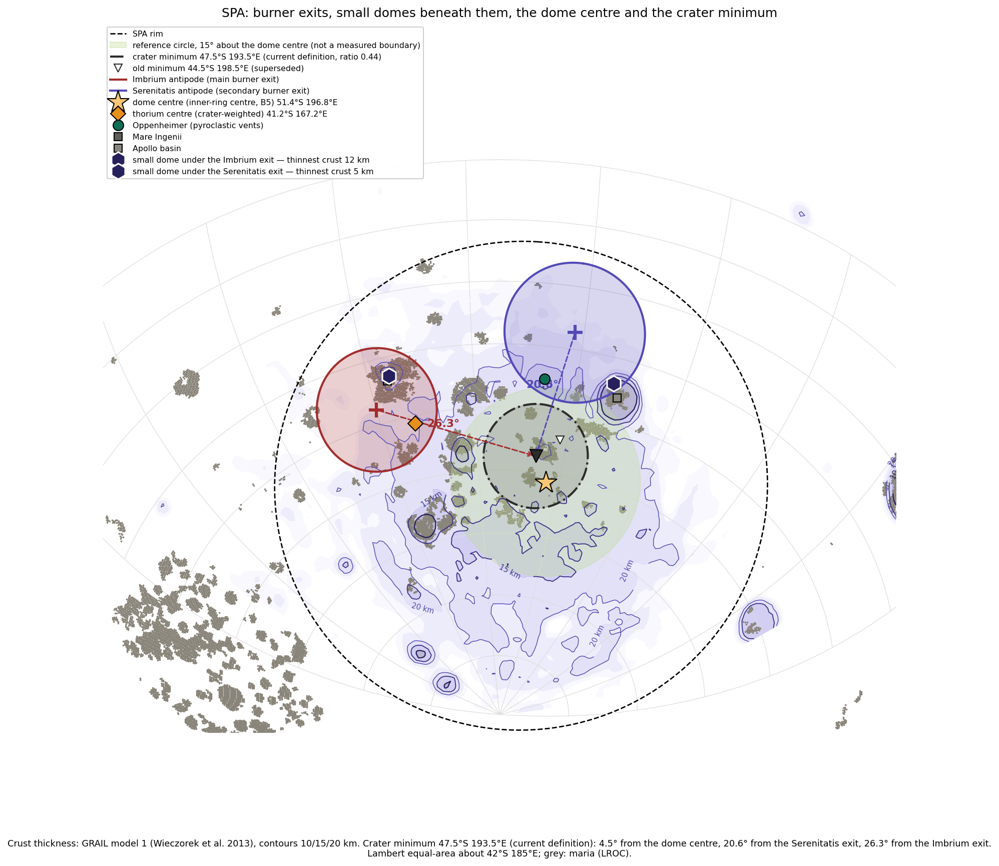
The map is read from north to south: the two exits at the top, the dome and the hot centre below them, and the crescent to the side, on the trailing side. Part C takes up this arrangement and asks how the points came to lie where they do today, as the picture changed from the flattened figure to the sphere.
Open. The axes of the time — whether the Earth’s axis changed after the separation (C.4; future work). B14: the isotopes will decide. B11: two open questions.
The antipodes — from a flattened figure to a sphere
Part B measured the basin feature by feature. Part C asks where those features lie with respect to the near side, and what the change of the Moon’s shape did to that relation. The central idea is the antipode. The antipode of a point on a body is the point straight opposite it: draw a line from the point through the centre of the body and continue it until it leaves the surface on the other side. On a sphere the antipode of a point at latitude north and longitude lies at latitude south and longitude . Imbrium, for example, at 37°N, 341.5°E, has its antipode at 37°S, 161.5°E.
The question of this part follows from the proposal. If the openings of the near side had made SPA directly, the basin should mirror them on the far side. This part places the points opposite Imbrium and Serenitatis, copies their rings and their maria to the far side, and compares the copy with the outline of SPA (C.1–C.2). The copy does not reproduce the basin, and the result is kept: it marks what the burner is and is not — it sets where craters were erased, not the outline of the basin. The part then sets all the centres on one map, before and after the rounding (C.3), and gives the source of the southward direction (C.4).
One point needs to be clear before the map is read. The burner worked while the body was attached and elongated, at the stage of the flattening; the Moon became a sphere only later, in the inward rounding that closes the sequence outward rounding flattening inward rounding (Paper 7). On an elongated body the line from a point through the centre runs in a different direction from the line through the same piece of surface once the body is round. The same pieces of surface remain opposite each other — a change of shape that is the same throughout the body keeps opposite points opposite — but the latitudes and longitudes at which they are read, and the angles between them, are not those of today. The rounding therefore changes the picture without moving anything over the surface. This is the subject of C.3.
C.1The centres
The point opposite Imbrium (37°S, 161.5°E) and the point opposite Serenitatis (25.4°S, 198.8°E) both lie in the northern part of SPA, 1,022 km apart; their midpoint lies about 650 km from the basin’s centre (an earlier version gave about 700 km). Both points thus fall inside the basin, but neither falls on its centre: SPA lies opposite the two openings of the near side, in its northern part, and extends well to the south of them. C.3 and C.4 explain that southward extent.
C.2The rings and the maria
The simplest version of the idea is a rigid copy: take the shape of each near-side basin and print it, unchanged, around its antipode, as a stamp is pressed on the far side of a sheet. Copying the rings of Imbrium (1,321 km) and Serenitatis (923 km) to their antipodes gives an envelope of km (axis ratio 1.60); copying the 19 mare polygons of the two basins gives km (1.72). SPA is km (1.17), and the orientations do not agree. The axis ratio is the long axis divided by the short one: 1 is a circle, and the larger the number, the more elongated the outline. Both copies are elongated and smaller than SPA, while SPA is nearly round.
A rigid antipodal copy of the near-side basins does not reproduce the shape of SPA. The result is kept. The claim of this paper is different: the burner fixes where craters were erased, not the outline of the basin.
The negative result is useful. It shows that SPA is not a projection of the near-side basins through the body. The burner is a heat source beneath the far side; it decides where the surface was heated and its craters erased, while the outline of the basin is set by the dome that rose over the heat and by its later collapse (Part B).
C.3All the centres on one map
The measurements of Part B each yield a centre: of the dome, of the crater record, of the thin crust, of the dense mass, of the thorium, of the magnetism. Seen one at a time, these centres are scattered; set together, they show an order. Figure C.1 sets them on one map together with the points opposite the near side, and with the positions of the two exits and of the dome’s centre at the flattened stage, before the rounding.
How to read Figure C.1. The map shows the far side seen from above the basin, with elevation in colour (blue low, brown high). Each marker carries a number, and the table beside the map gives its coordinates and its angular distance from the centre of the dome; one degree on the Moon is about 30 km. The markers fall into five groups. Points opposite the near side: the exits of the two burners, Imbrium (1, red) and Serenitatis (2, purple); the point opposite the centre of the contact zone, where the axis from the Earth’s centre leaves the far side (3, blue diamond); the point where the horizontal push leaves the far side, 22.5° south of it (5, open blue diamond); the point opposite the centre of the hill zone (4); the former attachment point (6, grey cross); and the point opposite the Earth today (7, white square). The flattened stage, shown dotted: the exits (1, 2) and the dome’s centre (8) as they lay on the elongated body. The centre: the centre of the dome, which is the centre of the inner ring (8); the centre of the basin’s ellipse (9); the magnetic peak nearest the crater minimum (10); and the crater minimum (11). The south: the lowest intercrater ground (12), the dense mass (13) and the peak of the original mass model (14), and the thinnest crust (15). Other: the Chang’e-6 landing site (16), the small domes of thin crust over the two exits, Apollo (17) and Ingenii (19), and the centre of the thorium crescent (18).
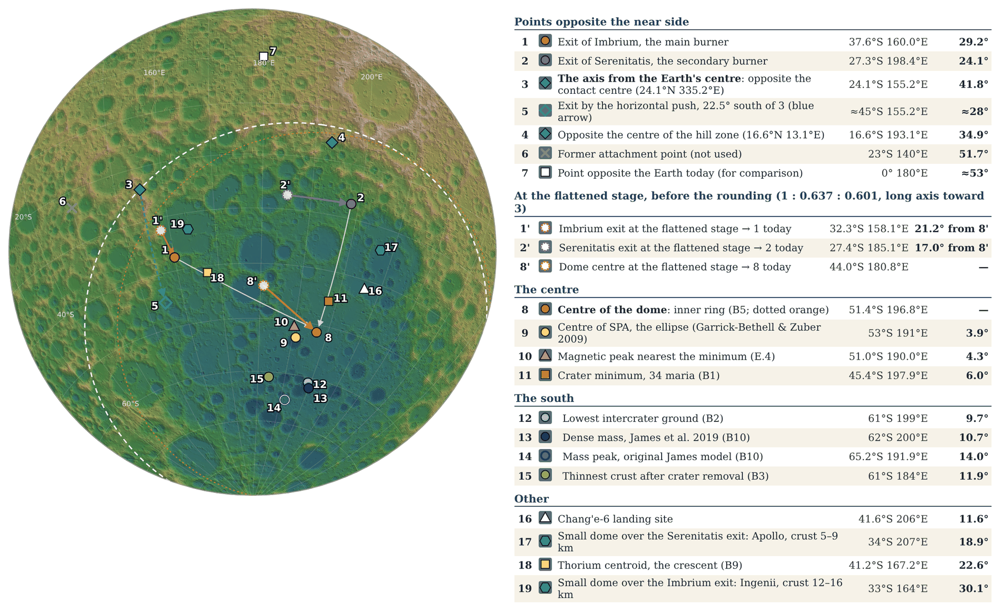
Three groups. The map orders the centres in three groups along one north–south line. In the north lie the exits of the two burners (1, 2), with a small dome of thin crust over each: Ingenii over Imbrium (19, 5.7° away) and Apollo over Serenitatis (17). In the middle lie the centre of the dome, the centre of the basin, the magnetic peak nearest the minimum and the crater minimum (8–11), all within 6° of the centre of the dome (within 9° of one another; an earlier version gave “within 6° of one another”). In the south lie the lowest intercrater ground, the dense mass and the thinnest crust (12–15), within about 230 km of one another. The thorium (18) stands apart from the middle group: it lies on the Imbrium exit (6.6° from it), on the trailing side. Read in the model, the line runs from where the heat came out (the exits, north), through where it worked longest on the surface (the dome and the crater minimum, middle), to where the iron is concentrated and the dome collapsed deepest (the dense mass and the lowest ground, south).
The axis from the Earth’s centre. The line from the Earth’s centre through the centre of the contact zone (24.1°N, 335.2°E) leaves the far side at 24.1°S, 155.2°E (3), 41.8° from the centre of the dome. If the heat had travelled along that line, the dome would lie at point 3; it does not. Inside the rotating pear the push is perpendicular to the spin axis, not along the line to the Earth’s centre; it enters the contact disc north of its centre, where the two burners lie, and leaves the far side up to 22.5° south of the point opposite (5, 47°S; an earlier version gave 45°S): at the latitude of the dome and of the minimum. The point opposite the Earth today (7) and the former attachment point (6) are shown for comparison only; point 6 is the antipode of the old reference 23°N 320°E, which the series no longer uses — the references are now the centre of the 3,000-km contact area and the two exits.
Before and after the rounding. The exits and the dome were laid out on the elongated body (1 : 0.637 : 0.601), whose long axis pointed to the Earth. The three numbers are the lengths of the body’s three axes relative to the longest: the body was about one and a half times as long toward the Earth as it was wide. When the body became a sphere, every point came to lie farther from the end of that axis (3), and the farther a point lay from it, the more its distance grew. The reason is geometric. On an elongated body the surface near the end of the long axis is squeezed toward that axis; seen from the centre, points there lie at small angles from it. When the body becomes round the sideways dimensions grow relative to the long one, and the angles seen from the centre open. A picture: dots drawn near the end of an egg-shaped piece of dough spread apart, as seen from its centre, when the dough is pressed into a ball, although no dot slides over the dough. Nothing moved over the surface; the change of shape changed the distances. The same change takes SPA’s distance from the far tip of the body (3) from about 27° at the burner’s time, on the flattened figure, to about 39.5° on the sphere of today (A.5, B5): again a change from the flattened figure to the sphere, not a motion over the surface. The full mapping gives:
| Point | Flattened stage | Today | Change | To the dome |
|---|---|---|---|---|
| Imbrium exit (11) | 32.3°S, 158.1°E | 37.6°S, 160.0°E | 5.5° | 21.2° 29.2° |
| Serenitatis exit (22) | 27.4°S, 185.1°E | 27.3°S, 198.4°E | 11.8° | 17.0° 24.1° |
| Centre of the dome (88) | 44.0°S, 180.8°E | 51.4°S, 196.8°E | 13.0° | — |
| Crater minimum | 39.9°S, 182.5°E | 45.4°S, 197.9°E | 12.6° | — |
Full mapping of the rounding: the direction of each point today is taken as its material coordinate, and its position on the elongated body is in a frame whose long axis points to the contact centre and whose short axis lies closest to today’s pole.
The mapping in the note under the table works as follows. Each point of the surface is labelled by the direction in which it lies today, , with along the long axis toward the contact centre. On the elongated body the same piece of surface lay at : the same position along the long axis, but closer to it sideways. The table compares the two directions. The darker the shading of the Change column, the larger the change of coordinates: the Imbrium exit, nearest the end of the long axis (3), changed least (5.5°); the dome and the crater minimum, farther from it, changed most (13.0° and 12.6°). The last column shows the result that matters for the paper: the distance from each exit to the dome grew by about seven to eight degrees.
At the flattened stage the centre of the dome lay 17° south of the Serenitatis exit and 21° south-east of the Imbrium exit; the rounding brought these to the 24° and 29° measured today. The rounding enlarges the separation but does not set its direction: the dome lay south of both exits already at the flattened stage. The source of the southward direction is set out in C.4.
C.4The source of the southward direction
The question of this section is why the dome lies south of both exits, and not around them. Two elements act together: the first sets the direction, the second enlarges the distance.
The position of the pear and the forces of the rotation. The tip of the pear, with the Moon on it, stood at about 22.5°N; the base of the pear lay roughly on the equator of that time. Inside the rotating pear the push is perpendicular to the Earth’s spin axis — horizontal — and not along the line to the Earth’s centre. This is a property of every rotating body: the outward push of the rotation points straight away from the spin axis, as a rider on a carousel is pushed away from the central post along the horizontal, at whatever height he sits. For a point at the latitude of the pear’s tip the line to the Earth’s centre slopes upward toward the north by that latitude, while the push is level; the two differ by about the latitude, some 22.5°. The heat that travelled inside the pear therefore reached the contact disc north of its centre, where the two burners lie, and left the far side south of the point opposite the contact centre, by up to the latitude of the Moon, 22.5° (Figure C.1, points 3 and 5). This is the direction measured: at the flattened stage the centre of the dome lay 17° south of the Serenitatis exit and 21° south-east of the Imbrium exit (C.3), and the dome, the crater minimum and the hot centre all lie south of the exits.
The flattening. The exits and the dome were laid out on the elongated body, with axes in the ratio 1 : 0.637 : 0.601. When it became a sphere, the distances from the end of its long axis grew: from the Serenitatis exit to the dome 17° 24°, from the Imbrium exit 21° 29° (C.3). The flattening does not set the direction; it enlarges the separation that the rotation set. In short: the rotation decided that the dome lies to the south; the change from the flattened figure to the sphere decided how far.
A third candidate — a refraction of the heat path in the dense core, acting as a prism — gives at most a few degrees, with no preferred direction, and is not used.
The Earth’s axis after the separation. It is entirely possible that the Earth’s axis changed after the separation. A change in the orientation of the Earth’s spin axis changes the frame in which the direction of the burner is read today — and with it the Moon’s orbital plane and its own axes — so that SPA appears not in line with the burner, although the heat did follow it. All positions in this paper are given in today’s frame. This paper deliberately does not enter the study of the axes; it is left for future work.
The southward direction of the dome relative to the two exits is set by the position of the pear and the forces of the rotation, and the flattening enlarged it to the separation measured today. A change of the Earth’s axis after the separation may add to the apparent difference between SPA and the burner; the axes are deliberately left for future work.
What we now have: the centres of SPA lie on one north–south line, opposite the two exits and south of them; the direction south comes from the horizontal push inside the rotating pear, and the size of the separation today, 24–29°, comes from the rounding of the elongated body, which took it from 17–21°.
The dynamic version — column, rotation and angle
Part C placed the burner geometrically. Part D asks whether it can work physically. The burner needs material and heat to travel from the Earth’s interior to the region opposite the openings. This part asks whether the numbers allow it: the speed and the time of transit (D.1), the energy and the pressure (D.2), the barrier of the corotation radius and the relief that a continuous body gives (D.3, D.3a), the sense in which the rotation deflects a flow (D.4), and the distance that rotation and a small exit angle produce (D.5). In plain words the picture is this: material rises from the Earth through the pear, as a column, while the whole system turns; it must climb out of the Earth’s gravity until the rotation takes over; and a small angle at which it leaves, kept over a long path, is enough to place the heat hundreds of kilometres from the point straight opposite.
D.1Velocity and transit time
In a simple conservation of angular momentum, material rising from the Earth’s interior reaches radial speeds of 1.8–2.6 km/s, with transit times of 1.2–1.5 hours. Angular momentum is the quantity of rotation a body carries — its mass times its speed around the axis times its distance from it; when nothing outside twists the body it stays fixed, so that material moving outward slows its turning, as a skater spreads her arms and turns more slowly. A transit of 1.2–1.5 hours is about a quarter of the Earth’s day of that time or less: the material crosses in a fraction of one turn. The difference of 57° between axis orientations is not an observed delay of the material in transit and is not used as one.
D.2 Energy and pressure
The kinetic energy at those speeds is 1.6–3.4 MJ/kg; an ideal conversion to pressure at 3,000 kg/m³ gives 5–10 GPa. The kinetic energy per kilogram is half the square of the speed; the pressure is that energy times the density, the most a flow can deliver if all its motion is stopped. 5–10 GPa is far more than the crust can resist, but this does not include the potential barrier, which D.3 computes.
D.3The potential barrier
The early Earth spun once in about five and a half to six hours (5.5 h before the bulge, 5.77 h at release). On material at its surface two effects act: gravity pulls it inward and the rotation pushes it outward. Near the surface gravity is far stronger; farther out it weakens while the outward push grows, and at the corotation radius — about 15,800 km from the Earth’s centre (Paper 2) — the two balance. The corotation radius is the distance at which a body turning with the Earth already has the speed of a free circular orbit, so that it needs no support. To bring material from the surface to that point it must be carried up a hill; beyond it the rotation carries it outward by itself, as a ball on the far side of a hilltop rolls down without being pushed. The height of the hill is the potential barrier, the energy per kilogram needed to lift material from the surface to the corotation radius: with the parent mass kg of the series. In words: is the effective potential, the energy per kilogram of material at distance in the frame that turns with the Earth. The first term is gravity ( the gravitational constant), deepest near the Earth; the second is the rotation ( the Earth’s angular rate), which lowers the energy more the farther out the material is. Their sum rises from the surface to a maximum at the corotation radius and falls beyond it; is the difference between the top of that hill and the starting point . The starting radius is the local radius of the fast-spinning, flattened Earth at the latitude of the source, 25°N (Paper 11 §C.2): with the series’ equatorial radius of 6,721 km and volumetric radius of 6,517 km, km. (The 25°N is the latitude of the source; the base of the pear on the Earth lies near Kiritimati, close to the equator, Paper 3 and Paper 9.) For the Earth’s day at release, 5.77 h (Paper 2, §B.1), and 5.5 h for comparison:
| Starting radius | 5.50 h | 5.77 h |
|---|---|---|
| Latitude of the source, 25°N: 6,602 km (adopted) | 25.2 | 26.2 |
| Volumetric: 6,517 km | 25.9 | 26.9 |
| Equatorial: 6,721 km | 24.2 | 25.2 |
Barrier in MJ/kg; corotation radius 15,883 km at 5.5 h and 16,399 km at 5.77 h.
The table gives the height of the hill for three choices of starting radius and two lengths of day. A larger starting radius begins higher up the hill and leaves less to climb; a longer day puts the corotation radius farther out and raises the hill. The adopted value is 26.2 MJ/kg. The corotation radius at 5.5 h appears as about 15,800 km in the text and as 15,883 km under the table: both are correct, for different definitions — 15,818 km for a test particle around the Earth alone (Paper 2), and 15,883 km in the full gravity field of the system (Paper 3 §A.9). At 5.77 h it is 16,399 km, about 2.6 Earth radii.
For a single parcel rising alone, speeds of 1.8–2.6 km/s (1.6–3.4 MJ/kg) fall short of the hill by a factor of seven to sixteen; the choice of starting radius changes the barrier by only 1–2 MJ/kg. A parcel thrown up alone would therefore fall back long before the corotation radius. D.3a shows why this is not the situation of the model.
D.3aThe barrier for a continuous body
The barrier above applies to a parcel rising alone. In the model the material is not a thin thread but a whole body: the connection is broad (Paper 3), the body is full of material, and the body is part of the Earth, compressed throughout by the Earth’s gravity and by the pressure from below — the pressure inside it is positive everywhere. In such a body the outward pull on the part beyond the corotation radius does not tear anything; it lowers the pressure beneath it. The pressure at the base falls, and material from the Earth’s interior is pushed up into the region of lower pressure, as in a siphon, without the pressure ever becoming negative. A siphon works the same way: liquid that has passed over the top and falls on the other side lowers the pressure behind it, and the liquid in the vessel is pushed up the tube by the air pressure on its surface; nothing pulls on the liquid as on a rope. Part of the energy to lift new material thus comes from the material already beyond the corotation radius being drawn outward, and the effective barrier is lower than for a single parcel. The ultimate source of the energy is the Earth’s rotation, as elsewhere in the series. This does not replace the lift of Paper 3: the engine remains the pressure from below, the magmatic upwelling whose source pressure of about 150 GPa carries the material up (Paper 3, A.9–A.10), and rotation alone lifts nothing. The relief acts only once part of the body lies beyond the corotation radius — at the late stages, not the early ones — and it lowers the pressure the base must supply; it does not carry tension (Paper 3, C.5). Requirement: the effective barrier and the reduced base pressure computed for a body of the shape and size of Paper 3.
The same effect acts on the far side. The far side of the body lies beyond the corotation radius, where the rotation pulls outward, away from the Earth, and eases the exit of material from the openings of the dome face (Paper 5). Pressure from below threw out large masses, which returned as large craters. The small, fresh craters that lie on top of the large ones inside SPA (B1h) come mainly from a later source: after the detachment the openings of the pear were exposed, the Earth released its pressure through them and threw material in all directions, and the small and medium pieces that reached the Moon spread uniformly over its whole surface; further openings of the Moon itself may also have scattered material over it. Material leaving the far-side openings does not escape to space: the body has its own gravity, with an escape speed of about 2.3 km/s at its radius of then, 1,890 km (2.4 km/s at today’s radius, the value an earlier version gave), somewhat less on the far side where the rotation assists. The escape speed is the speed at which a fragment leaves a body for good; below it, the fragment returns. Material leaving the vents more slowly rises, slows and falls back onto the body, and the returning material makes craters (Paper 6). One mechanism thus draws material in at the base and eases its exit on the far side. Requirement: exit speeds from the far-side vents below the local escape speed. The Moon as a whole does not fall back to the Earth, for it lies beyond the corotation radius and is flung into orbit (Paper 4); material leaving it returns to it only while it stays within the Moon’s own sphere of gravitational dominance — the region around a small body, near a large one, inside which the small body’s pull governs the motion of a fragment more than the large body’s pull does (the Hill sphere). Near the corotation line (16,400 km), where the Moon was released about 210 km beyond it, that sphere reaches about 2,600 km from the Moon’s centre — 1.4 radii of the Moon of then (1,890 km) — so only material rising less than about 700 km above the surface returns to make craters (an earlier version, with today’s radius, gave 1.5 radii and 900 km); material thrown higher escapes the Moon, to orbit or to fall to the Earth.
D.4The sign test
In the frame of the rotation, the Coriolis force turns outward flow against the spin, to the west. The Coriolis force is the apparent sideways push felt by anything that moves in a turning frame: material moving outward carries the slower turning of where it came from, so it lags behind the ground beneath it, which is the deflection against the spin. The test asks whether this one deflection can place both exits relative to the basin. The antipode of Serenitatis (198.8°E) lies 7.8° from the SPA centre (191°E) in the sense this deflection requires; the antipode of Imbrium (161.5°E) lies on the other side. A single simple deflection does not serve both. The Coriolis deflection is therefore not the source of the geometry; the source is the horizontal push of C.4.
D.5A small exit angle
A small angle kept over a long path makes a large distance, as a rifle aimed a fraction of a degree off misses a distant target by a wide margin. Geometrically , where is the length of the path, the angle at the exit, and the distance between the point straight ahead and the point reached: over a path of 9,447–11,199 km, an angle of 1–3° gives distances of 165–590 km between the exit and the point reached. A physical source for the angle is required; the geometry alone is not evidence of one. C.4 gives it: the horizontal push inside the rotating pear. (A further test, on the self-gravity of the growing body, could not be reproduced and is not used.)
What we now have: a parcel alone cannot climb the barrier, but a continuous body, pushed from below by the source pressure of Paper 3 and relieved at its base once part of it lies beyond the corotation radius, can; on the far side the rotation eases the exit of material, which returns within the Moon’s Hill sphere; the small fresh craters on the large ones come mainly from material the Earth threw after the detachment, spread uniformly over the Moon; and the distance of the heat from the point opposite is set by the horizontal push, not by a Coriolis deflection.
Challenges and responses
Some published findings seem to stand against the proposal. This part sets them out one by one, each with the answer of the model. Each section first states the finding fairly, as its authors read it, and then gives the reading of the model and, where one exists, the measurement that will decide between the two. Questions that need new data to be decided are not answered here; they are listed as tests in Part F.
E.1 Iridium and gold in the metals of Chang’e-6
The finding. Liu et al. (2026) report Ir and Au in metal grains from impact fragments of Chang’e-6 and read part of them as carbonaceous-chondrite material, that is, as metal brought by a primitive asteroid. The response. The grains are in basaltic and anorthositic regolith fragments, classed by the authors as impact fragments, not in the dated norites, and they are not dated; such grains are space dust later drawn in by the Moon’s gravity onto the loose surface layer, which the prediction allows. The regolith is the loose layer of dust and fragments on the surface, which collects material from outside throughout the Moon’s history. Ir and Au do not distinguish an asteroid from metal from the Earth’s interior, which is rich in siderophile elements — the “iron-loving” elements that follow metal, and are therefore concentrated wherever metal is. The published ratios are element ratios, not isotopes. Only isotopic systems (Cr, Ti, Mo, Ru, Os) can decide: in these elements the Earth and the classes of meteorites carry distinct isotopic fingerprints, which do not change when the metal is melted or separated.
E.2 Metal of a foreign body in the norites (the impact reading)
The finding. Su et al. (2025) report Fe–Ni metal inside two norite fragments of about 4.25 billion years, with Ni/Co of 8.5–11, above the values below 5 of the metal already in the Moon, and read it as impactor contribution. The response. Ni/Co alone does not identify the source: the bulk silicate Earth has 18.7, CI chondrites 21.0 (McDonough & Sun 1995), and a metal grain is a phase that has partitioned between metal, silicate and sulphide. Both candidate sources — the Earth and a chondritic body — lie above the values of the metal already in the Moon, so a high ratio separates the grains from that long-equilibrated metal but does not say from which of the two it came; and the ratio in a single grain depends on how nickel and cobalt divided between the phases as it formed. The model reads the metal as the iron that came from below, and predicts a terrestrial isotopic signature. These norites lie inside the sample, part of it since it formed: they are where the model’s prediction is read most directly (Part F, first row).
E.3The dense mass is not under the minimum
The finding. The mass of James et al. lies about 500 km south of the minimum and extends hundreds of kilometres deep. The response. It is not the iron beneath the minimum; in the model it is iron concentrated at depth beneath the basin, south of the dome (B10). The minimum marks where the heat erased the craters at the surface; the dense mass marks where the iron was concentrated, in the southern group of Figure C.1. The model does not require the two to coincide.
E.4 The magnetic peaks are not at the minimum
The finding. The nearest strong peak found (51.0°S, 190.0°E) lies about 230 km from the minimum, and at the minimum the field is weak (1.9 nT at 25 km altitude, B16; 0.85 nT at the test point 44.8°S, 198.4°E, about 20 km from it, the value an earlier version gave for the minimum itself). The response. This is what the burner predicts: heat erases magnetisation at its core and leaves it at the cooler margins. A magnetised material loses its magnetisation when it is heated above a certain temperature, and keeps it where it stays cooler; a heat source therefore leaves a weak centre and a magnetised ring, which is the pattern measured (B16).
E.5 The crust at the minimum is not the thinnest
The finding. The minimum (19–28 km) is not thinner than the nominal centre (15–24 km). The response. The claim is that the deficit lies inside the zone of thin crust, not at its thinnest point (B1, B3). The heat came from below and melted the whole region, its thick and thin parts alike; within the zone of thin crust the place of fewest craters was set by the direction of the exits, toward the antipode of Serenitatis, while the thinnest crust lies in the structural south of the basin (Figure C.1).
E.6 Buried basalts
The finding. Wang et al. (2024) interpret at least km² of buried basalts, more than a kilometre thick, in the centre of SPA — an alternative source of shallow craters, since lava that filled a crater makes it shallower. The response. In the model, buried basalts are a product of the burner, not a rival: heat from below makes melt and volcanism. The test is whether the shallowing persists outside the buried basalts. If it does, the lava cannot explain it, and the heating and compaction of the ground can.
E.7The rule “except in the regolith”
The finding. Almost all Chang’e-6 material comes from the regolith, so that a reader may ask whether the prediction can be tested at all. The response. The prediction concerns the source of a sample — foreign material that was part of it when it formed, such as metal inside a norite of 4.25 billion years — not where it was collected. A fragment picked up from the regolith can be as old as the basin, and what it held when it formed is a record of that time. The model expects the metal in the ancient norites to be terrestrial; foreign material, if found at all, is expected only in tiny amounts — fine grains of space dust later drawn in by the Moon’s gravity onto the surface layer, or a single meteorite.
Predictions and tests
This part lists what the model predicts and the tests that still need new data. Each row of the table states what the model expects to be found. Two rows, shaded green, have already been measured in this paper: the thickened rings are confirmed and the compaction at depth is supported.
| Prediction |
|---|
| The metal in the two dated norites (CE6C0100YJFM002-158, CE6C0200YJFM001EGP07-16) is terrestrial in Cr, Ti, Mo, Ru or Os; foreign material in the Moon’s ancient samples, if any, only in tiny amounts |
| Volatile loss and reduction strongest near the minimum, weaker toward the rim |
| Shallow craters persist outside the buried basalts |
| Floor-fractured craters concentrated in the deficit |
| Magnetisation strongest at the margins of the heated core, sourced at depth |
| The deficit follows the antipodes of the near-side openings |
| An ordinary mare in the middle of SPA, which ejected material while the Moon was attached and was later heated with the whole region and erased: the buried basalts extend well beyond the visible mare patches, and the gravity field shows the load of a buried basalt fill (A.5, B9) |
| Small craters on top of the large ones, mainly from material the Earth threw after the detachment and spread uniformly over the Moon: inside SPA the ratio of small to large craters is higher than elsewhere (4.62 against 2.13 found, B1h), and the small craters that lie on top of the large ones are fresh while the large ones are degraded. The second test is prepared but not yet made: a random sample of 20 host craters of 40–80 km inside SPA and 20 in a control at the same latitudes, frozen before inspection (2,634 candidate small craters), with fixed classification criteria and a fixed freshness scale (depth relative to fresh craters of the same size; Krüger et al. 2018); it awaits inspection of the images crater by crater |
| Two crater populations inside SPA: old craters degraded and flattened, young craters fresh (B1k) |
| Young craters inside SPA higher-rimmed than young craters outside, formed on a compacted target (B1k) |
| The crust that slid outward from the dome is piled in rings around the zone of thin crust (B3) — confirmed: an outer thickening of 3.8–5.7 km at 50–55° in all four GRAIL models, standing above the crust farther out in seven of eight directions, thick to the east and missing to the west (B4); an inner ring at the edge of the dome (B5); about 37% of the missing volume within 60° |
| The crust inside SPA is compacted at depth, where the heat was strongest — its layers were cooked (B2). Supported at depth: at the surface SPA is as porous as the far side around it; at 10 km the pores are 2.9–4.4% at the centre, rising steadily to 7.1–8.8% at the rim, against 6.2–12.8% around (B6, extrapolated) |
Why each prediction follows. The first row is the sharpest: the model builds the Moon from material of the Earth, so metal that has been part of an ancient sample since it formed carries a terrestrial isotopic signature, while the impact reading requires a foreign one. The second row follows from heat: a long-lived source drives off volatile elements and removes oxygen most strongly where it is hottest, so the signature marks a centre of heating. The third separates the burner from lava: shallow craters outside the buried lava are explained by the heating and compaction of the ground, not by lava filling. The fourth uses floor-fractured craters, craters whose floors were lifted and cracked by melt rising beneath them; heat from below concentrates them in the deficit. The fifth follows from E.4: heat that erased the core from below leaves the magnetisation strongest at the margins and sourced at depth. The sixth is the base of the paper: the deficit follows the antipodes of the near-side openings, and that gives the burner its place. The seventh tests the central mare: buried basalts reaching beyond the visible patches, with the gravity signature of a buried fill, mark an ordinary mare in the middle of SPA that was heated with the region and erased. The eighth to tenth test the history of the crater record: small craters from material the Earth threw after the detachment, two populations of different age, and high rims on young craters formed on compacted ground. The last two are already measured: the rings of crust that slid outward, and the closed pores at depth.
Tests that need new data: the spatial minimum of depth after the mare mask — where the craters are shallowest once the maria and their halos are removed; a count of floor-fractured craters (Jozwiak et al. 2012), to test the fourth row; Th, FeO and OH sampled at the minimum and in rings, to test the second row along the same radial profile as the craters; the depth and direction of the magnetisation, to test the fifth row; a null test for the choice of Serenitatis among all the openings — whether a deficit placed as well toward an antipode would arise by chance for any opening; an out-of-sample test, on data not used to build the reading.
Conclusions and further work
What the paper has shown, and what remains to be done. Part B set out the seventeen anomalies of South Pole–Aitken and, where the paper measured an anomaly itself, a study of its own (Studies 1–5); Part C placed the centres of the basin on one map and gave the source of the southward direction; Part D asked whether the numbers allow material and heat to travel from the Earth’s interior to the far side; Part E answered the published findings that seem to stand against the proposal; and Part F listed the predictions and their tests. This part gathers the outcome in three steps: the five studies with their result in one table (G.1), the conclusions, each stated as what was found and what it means (G.2), and the further work that would sharpen or extend them. Nothing new is measured here; every number is taken from the section named beside it.
G.1 The studies and the anomalies in one table
The verdicts of the seventeen anomalies are gathered in B18: science explains six of them fully, nine in part, one with difficulty and one not at all; the model fits sixteen, and one in part (B14, the metal in the norites, which the isotopes will decide). Those verdicts weigh published measurements. The five studies are different: in each, the paper stated its hypothesis and what it expected to find before it measured, and then made the measurement itself. The five studies the paper made itself are given their light here: green where the hypothesis held in full, amber where part of it held and part did not, red where it did not hold.
How to read the traffic light. The colour in the first column is the verdict of the study on its own hypothesis, as set out in its step “Result”. It is not a grade of the model as a whole, and it is not a comparison with the reading of others. The third column has two parts. The first sentence or sentences say what held — the measured result that the hypothesis required. Where a further sentence follows, it names the limit of that result: what the data cannot settle, or another cause that could produce part of the same signal. Such a limit is stated so that the reader knows how far the result reaches; it is not a part of the hypothesis that did not hold, and a study with a stated limit is still green when every element of its hypothesis held. All five studies came out green.
| Light | Study | What held, and what did not |
|---|---|---|
| 1. The crater record (B1) | Deficit concentrated in the centre (0.51), stronger on cleaner ground; minimum on the meridian of the point opposite Serenitatis; middle sizes missing most; shallow craters with high rims. The counts in the centre are small, and the shape contrast rests on 31 craters | |
| 2. Depth against the thin crust (B2) | A remainder of 1.1–1.8 km at the centre, falling to the rim. The dense mass beneath can also fill it | |
| 3. The outer ring (B4) | A ring above the crust farther out in seven of eight directions, thick to the east, missing to the west. It holds only about 37% of the missing crust | |
| 4. The inner ring (B5) | Present in 22 of 24 directions, centred east-north-east of the basin’s centre, wall steepest to the north-east | |
| 5. Porosity at depth (B6) | Surface as porous as around; pores closed at depth, most at the centre, weakening to the rim. Extrapolated from published inversions |
Each row, as a finding and what it means:
The crater record (Study 1, B1). Finding: measured like for like — the lava plains, the 34 maria of Paper 5 (The Maria) and a halo of 200 km around each removed on both sides of the comparison — the ring within 10° of the basin’s centre holds 0.51 of the crater density just outside the rim. The deficit grows stronger as the young surfaces are removed (0.59 on all ground, 0.56 without the lava plains and the maria, 0.51 with the halos removed as well). Its minimum, at 45.4°S, 197.9°E, lies on the meridian of the point opposite Serenitatis (197.9° against 198.8°). By size, craters of 20–40 km are missing most (0.47), the smallest of 10–20 km hardly at all (0.91). Craters of 40–80 km in the central 20° are 18% shallower than those of the rim belt, and their rims stand higher than in a matched control. Meaning: this is the pattern of heat from below, not of ground that simply received fewer craters. Young lava plains would blur a deficit, not create one, so a deficit that sharpens on cleaner ground belongs to the old surface itself. Heat relaxes and erases the larger craters it reaches, while the smallest ones landed later on top, mainly from material the Earth threw after the detachment and spread uniformly over the Moon (B1h); and heat from below relaxes a crater and makes it shallow, while craters on compacted ground keep high rims (B1k). Limit: the central counts are small (29 craters of 20 km and more in the central ring), and the shape contrast rests on 31 craters, measured against a rim belt where craters are unusually deep.
Depth against the thin crust (Study 2, B2). Finding: a thin crust stands low, as a thin plank floats lower in water than a thick one; this balance, in which a light crust floats on a denser mantle, is called isostasy. Measured on the plains between the craters, SPA is deeper than its thin crust explains by this balance: the remainder is 1.1–1.8 km at the centre and falls to 0.2–0.3 km at the rim. Meaning: the extra depth is largest where the heat was strongest and weakens outward, as compaction of heated layers would make it. A remainder of 1.1–1.8 km corresponds to a column of 9–15 km that lost 12% of its voids — the ground sank because its pores closed. Limit: the dense mass beneath the basin (B10) pulls the surface down as well and can also fill the gap; it is named so that the reader knows a second cause can contribute to the same remainder.
The outer ring (Study 3, B4). Finding: after the regional trend of the far side is removed, a ring of thickened crust (3.8–5.7 km at 50–55° from the centre, in all four GRAIL crustal models) stands above the crust farther out in seven of eight directions; it is thick to the east and missing to the west. Meaning: this is where the crust that slid off the rising dome came to rest, piled at the margins. Its east–west asymmetry is one that neither direction of an oblique blow from outside predicts. Limit: the ring holds only about 37% of the crust missing from the basin; the rest is not found in it, and the inner ring of Study 4 holds part of it on the west.
The inner ring (Study 4, B5). Finding: a second ring of thickened crust, present in 22 of 24 directions, centred about 118 km east-north-east of the basin’s centre (at 51.4°S, 196.8°E), its inner wall steepest to the north-east (30.7 m/km) and gentlest to the south-west (11.5 m/km). Meaning: this ring marks the edge of the dome, and its centre is taken as the dome’s centre. The dome’s centre does not coincide with the basin’s centre: it lies toward the exits of the near side, on the path of the heat that came through them, 29° from the Imbrium exit and 24° from the Serenitatis exit today (C.3).
Porosity at depth (Study 5, B6). Finding: at the surface SPA is as porous as the far side around it. At a depth of 10 km its pores are almost closed — 2.9–4.4% at the centre, rising steadily to 7.1–8.8% at the rim, against 6.2–12.8% around — in both models of how porosity falls with depth. Meaning: the closure lies at depth and is strongest at the centre, the same structure as the extra depth of Study 2. The heat came from below and compacted the deep layers, while the surface was renewed by material that landed later. Limit: the values at depth are extrapolated from published inversions of the gravity field and depend on the depth model chosen; a direct inversion for SPA is listed among the further work.
Taken together, the five studies were each stated in advance, before the measurement, and each came out on the side the hypothesis required. Their limits are of sample size and of method, and each limit points to a measurement that can remove it.
G.2What the paper has shown
The conclusions follow in the order of the argument. Each is stated as what was found and what it means.
The centre is poor in craters, and its craters are shallow. Finding: The centre of South Pole–Aitken is poor in craters and holds shallow ones; the deficit lies toward the point opposite Serenitatis (B1, Study 1). Meaning: the basin’s centre has lost part of its crater record, and the loss is not spread evenly but leans toward one point fixed by the near side. A blow from outside has no reason to order the deficit by a point on the other side of the Moon; a source of heat fed from that side does.
The reading: a heat source beneath the far side. Finding and reading: We read it as the work of a heat source beneath the far side, opposite the covered openings of the near side, whose heat came from below and melted the region, its thick and thin parts alike; it worked while the body was attached and calmed as the flattening relaxed, before release. Meaning: the heat source — the burner of this paper — had two exits on the near side, Imbrium the main one and Serenitatis the secondary; its heat crossed the body and was strongest at the centre of the dome beneath the far side. Its working time is the attached stage: at least years, the bound used for the viscosity estimate, and in the model about 600 Myr in all, from the start of the bulge to the release at 3.873 Ga. The flattening and the rounding of the Moon both happened in that stage (Paper 7, The Poles); at release the body was round and its outer shell rigid (Paper 2, LEF Mechanism in Principle, §B.7). The burner therefore calmed before the release; after it, only residual heat acted, decaying slowly.
The other records fit the same reading. Finding: The depth, the two rings of thickened crust, the pores closed at depth, the chemistry of Chang’e-6, the reduced mantle, the long volcanism and the pattern of magnetism fit this reading. Meaning: each of these is an independent record, and each points to the same cause. The basin is deeper than its thin crust explains, most at the centre (B2); the crust that slid off the dome lies in an outer ring and an inner one (B4, B5); the pores are closed at depth, most at the centre (B6); the Chang’e-6 samples, some 210 km from the crater minimum, show a mantle that lost its volatiles to heating (B11); the mantle beneath SPA is poorer in oxygen than beneath the near side (IW against , B12), as prolonged heat and metallic iron would make it; melt rose over a long span, from 4.25 to 2.2 Ga (B15), as one long-lived source would supply and one short blow would not; and the magnetism is erased at the centre and strong on the trailing side, on the same side as the thorium crescent, not in the same place (B16). In the count of B18 the model fits sixteen of the seventeen anomalies and one in part, and the measurements are ordered about one centre, in layers by depth — the signature of one heat source, long-lived and centred.
A rigid mirror of the near side does not make the basin’s shape — and the result is kept. Finding: A rigid mirror of the near-side basins does not reproduce the basin’s shape, and that result is kept. Copying the rings and the maria of Imbrium and Serenitatis to the points opposite them gives envelopes with axis ratios of 1.60 and 1.72, against 1.17 for SPA, and the orientations do not agree (C.2). Meaning: the burner is not a stamp that printed the outline of the near-side basins onto the far side. What it fixes is where the craters were erased; the outline of the basin is set by the dome, its collapse and the crust that slid from it. The negative result marks what the burner is and what it is not, and it is reported as measured.
The centres lie on one north–south line, in three groups. Finding: The centres lie in three groups along one north–south line — the two exits, the hot centre, the dense south (Figure C.1). In the north lie the points of the two exits on the far side, each with a small dome of thin crust over it (Ingenii, Apollo); in the middle, within 6° of the centre of the dome, the centre of the basin, the magnetic peak nearest the minimum and the crater minimum; in the south, within about 230 km of one another, the lowest ground between the craters, the dense mass and the thinnest crust (C.3). Meaning: the measurements of Part B, each of which yields its own centre, are not scattered: they line up from the exits through the hot centre to the place where the iron is concentrated. This is the order a heat path from the exits to a dome south of them would leave.
The southward direction is set by the pear and the rotation, and enlarged by the rounding. Finding: the dome lies south of both exits, a direction set by the position of the pear and the forces of the rotation and enlarged by the rounding of the flattened body (C.4). The tip of the pear, with the Moon on it, stood at about 22.5°N, its base roughly on the equator of that time; inside the rotating pear the push is perpendicular to the Earth’s spin axis, not along the line to the Earth’s centre, so the heat reached the contact disc north of its centre, where the two exits lie, and left the far side south of the point opposite the contact centre. At the flattened stage the dome’s centre already lay 17° south of the Serenitatis exit and 21° south-east of the Imbrium exit; the change of the body from a flattened figure to a sphere took these distances to the 24° and 29° measured today. Meaning: the southward placing of the dome is not a free parameter fitted to the map; it follows from where the pear stood on the Earth and from the rotation. The rounding does not move anything over the surface; it changes the shape, and with it the distances, and so it widens a separation whose direction was set before it.
The Earth’s axis is left for future work. Finding: A change of the Earth’s axis after the separation may also make SPA appear out of line with the burner; the axes are deliberately left for future work. Meaning: the direction of the burner is read today in a frame fixed by the Earth’s spin axis, the Moon’s orbital plane and the Moon’s own axes. If the Earth’s axis changed after the separation, that frame changed with it, and SPA can appear out of line with the burner although the heat did follow it (C.4). This paper does not enter the study of the axes, and no conclusion here depends on it.
The sharpest prediction is read by isotopes. Finding: The paper’s sharpest prediction — that the metal in the Moon’s ancient norites is terrestrial, and that foreign material, if any, is present only in tiny amounts — is read by isotopes in the metals of the ancient norites. Meaning: the prediction concerns material that was part of a sample when it formed, such as the iron–nickel metal inside the two dated norites of Chang’e-6 (B14, Part F); fine grains of space dust drawn later onto the loose surface layer, or a single meteorite, are among those tiny amounts (E.1, E.7). Element ratios such as Ni/Co, iridium or gold cannot tell metal from the Earth’s interior from the metal of a foreign body, for both are rich in the elements that follow iron; isotopic systems (Cr, Ti, Mo, Ru, Os) can. A terrestrial signature in that metal supports the model.
In one sentence: the crater-poor centre of South Pole–Aitken, its depth, its rings, its closed pores, its chemistry and its magnetism are read as the record of one heat source beneath the far side, fed through Imbrium and Serenitatis while the Moon was attached, and the measurements named in Part F carry it further.
Further work: a physical model of the heat axis and its energy budget; a redox budget for the reduction; the recomputation of the dynamic tests with the chosen constants; the tests of Part F; and, as future work, the Moon’s axis system at the time of the rounding. In more detail:
A physical model of the heat axis and its energy budget. The paper places the heat path by its marks: two exits on the near side, a dome and a hot centre on the far side. What remains is the physics of the path itself — how heat crossed the attached body from the exits to the far-side crust, and how much energy it carried. What it would show: whether the heat delivered over the attached stage suffices to compact the column of Study 2, close the pores of Study 5 and erase the craters of Study 1.
A redox budget for the reduction. The mantle beneath SPA is poorer in oxygen than beneath the near side (B12). The model reads this as oxygen driven off by heat and consumed by metallic iron from the Earth’s interior. What it would show: how much heat and how much iron are needed to lower the oxygen level by the measured amount, and whether the two agree with the heat budget of the previous item.
The recomputation of the dynamic tests with the chosen constants. The tests of Part D — velocity and transit time, energy and pressure, the potential barrier and its relief in a continuous body, the sign test and the exit angle — are to be repeated with the constants the series has fixed: the Earth’s day at release of 5.77 h, the corotation radius of that state and the parent mass of the series. What it would show: the effective barrier and the base pressure for a body of the shape and size of Paper 3 (LEF Mechanism in Practice), required in D.3a.
The tests of Part F. The predictions of Part F that need new data are listed there: the spatial minimum of depth after the mare mask, a count of floor-fractured craters, thorium, iron oxide and hydroxyl sampled at the minimum and in the rings, the depth and direction of the magnetisation, a null test for the choice of Serenitatis among all the openings, an out-of-sample test, and the inspection, crater by crater, of the small craters that lie on large hosts. What they would show: each one measures a prediction of Part F directly.
The Moon’s axis system at the time of the rounding (future work). As future work, not as part of this paper: the orientation of the Moon’s axes, and of the Earth’s, at the time of the rounding and after the separation. What it would show: the frame in which the burner’s direction was laid down, and so how far a change of the axes adds to the apparent difference between SPA and the burner (C.4).
References
Andrews-Hanna, J.C., Bottke, W.F., Broquet, A. et al. (2025). Southward impact excavated magma ocean at the lunar South Pole–Aitken basin. Nature 646, 297–302. doi:10.1038/s41586-025-09582-y.
Avdellidou, C., Price, M.C., Delbo, M., Ioannidis, P. & Cole, M.J. (2016). Survival of the impactor during hypervelocity collisions – I. An analogue for low porosity targets. Mon. Not. R. Astron. Soc. 456, 2957–2965. doi:10.1093/mnras/stv2844.
Besserer, J., Nimmo, F., Wieczorek, M.A. et al. (2014). GRAIL gravity constraints on the vertical and lateral density structure of the lunar crust. Geophys. Res. Lett. 41, 5771–5777. doi:10.1002/2014GL060240.
Bhatt, M., Wöhler, C., Dhingra, D. et al. (2018). Compositional studies of Mare Moscoviense: new perspectives from Chandrayaan-1 VIS–NIR data. Icarus 303, 149–165. doi:10.1016/j.icarus.2017.10.009.
Blewett, D.T., Coman, E.I., Hawke, B.R., Gillis-Davis, J.J., Purucker, M.E. & Hughes, C.G. (2011). Lunar swirls: examining crustal magnetic anomalies and space weathering trends. J. Geophys. Res. 116, E02002. doi:10.1029/2010JE003656.
Checketts, B. et al. (2023). Global mapping of dark halo craters on the Moon. 54th Lunar and Planetary Science Conference, LPI Contrib. 2806, abstract 1412.
Chuang, F.C. et al. (2025). Application of machine learning techniques to distinguish between mare, cryptomare, and light plains in central lunar South Pole–Aitken basin. Planet. Sci. J. 6, 35. doi:10.3847/PSJ/ada4a6.
Citron, R.I., Smith, D.E., Stewart, S.T., Hood, L.L. & Zuber, M.T. (2024). The South Pole–Aitken basin: constraints on impact excavation, melt, and ejecta. Geophys. Res. Lett. 51, e2024GL110034. doi:10.1029/2024GL110034.
Cui, Z., Yang, Q., Zhang, Y.-Q. et al. (2024). A sample of the Moon’s far side retrieved by Chang’e-6 contains 2.83-billion-year-old basalt. Science 386, 1395–1399. doi:10.1126/science.adt1093.
Deca, J., Hemingway, D.J., Divin, A., Lue, C., Poppe, A.R., Garrick-Bethell, I., Lembège, B. & Horányi, M. (2020). Simulating the Reiner Gamma swirl: the long-term effect of solar wind standoff. J. Geophys. Res. Planets 125, e2019JE006219. doi:10.1029/2019JE006219.
Fassett, C.I., Head, J.W., Kadish, S.J., Mazarico, E., Neumann, G.A., Smith, D.E. & Zuber, M.T. (2012). Lunar impact basins: stratigraphy, sequence and ages from superposed impact crater populations measured from Lunar Orbiter Laser Altimeter (LOLA) data. J. Geophys. Res. 117, E00H06. doi:10.1029/2011JE003951.
Garrick-Bethell, I. & Zuber, M.T. (2009). Elliptical structure of the lunar South Pole-Aitken basin. Icarus 204, 399–408. doi:10.1016/j.icarus.2009.05.032.
Goossens, S., Sabaka, T.J., Wieczorek, M.A. et al. (2020). High-resolution gravity field models from GRAIL data and implications for models of the density structure of the Moon’s crust. J. Geophys. Res. Planets 125, e2019JE006086. doi:10.1029/2019JE006086.
He, H., Li, L., Hu, S. et al. (2025). Water abundance in the lunar farside mantle. Nature 643, 366–370. doi:10.1038/s41586-025-08870-x.
Head, J.W., Wang, X., Lark, L.H., Wilson, L. & Qian, Y. (2024). Lunar nearside–farside mare basalt asymmetry: the combined role of global crustal thickness variations and South Pole–Aitken (SPA) basin-induced lithospheric thickening. Geophys. Res. Lett. 51, e2024GL110510. doi:10.1029/2024GL110510.
Hemingway, D. & Garrick-Bethell, I. (2012). Magnetic field direction and lunar swirl morphology: insights from Airy and Reiner Gamma. J. Geophys. Res. 117, doi:10.1029/2012JE004165.
Hemingway, D.J. & Tikoo, S.M. (2018). Lunar swirl morphology constrains the geometry, magnetization, and origins of lunar magnetic anomalies. J. Geophys. Res. Planets 123, doi:10.1029/2018JE005604.
Hood, L.L. & Artemieva, N.A. (2008). Antipodal effects of lunar basin-forming impacts: initial 3D simulations and comparisons with observations. Icarus 193, 485–502. doi:10.1016/j.icarus.2007.08.023.
Hood, L.L., Richmond, N.C. & Spudis, P.D. (2013). Origin of strong lunar magnetic anomalies: further mapping and examinations of LROC imagery in regions antipodal to young large impact basins. J. Geophys. Res. Planets 118, 1265–1284. doi:10.1002/jgre.20078.
Hood, L.L., Torres, C.B., Oliveira, J.S., Wieczorek, M.A. & Stewart, S.T. (2021). A new large-scale map of the lunar crustal magnetic field and its interpretation. J. Geophys. Res. Planets 126, e2020JE006667. doi:10.1029/2020JE006667.
Housen, K.R. & Holsapple, K.A. (2003). Impact cratering on porous asteroids. Icarus 163, 102–119. doi:10.1016/S0019-1035(03)00024-1.
Housen, K.R., Holsapple, K.A. & Voss, M.E. (1999). Compaction as the origin of the unusual craters on the asteroid Mathilde. Nature 402, 155–157. doi:10.1038/45985.
Hu, J., Liu, J., Liu, J., Deng, J., Zhang, S., Lei, D., Zeng, X. & Huang, W. (2024). The geological investigation of the lunar Reiner Gamma magnetic anomaly region. Remote Sensing 16, 4153. doi:10.3390/rs16224153.
Huang, Q. & Wieczorek, M.A. (2012). Density and porosity of the lunar crust from gravity and topography. J. Geophys. Res. 117, E05003. doi:10.1029/2012JE004062.
Ivanov, M.A., Hiesinger, H., van der Bogert, C.H., Orgel, C., Pasckert, J.H. & Head, J.W. (2018). Geologic history of the northern portion of the South Pole-Aitken basin on the Moon. J. Geophys. Res. Planets 123, 2585–2612. doi:10.1029/2018JE005590.
Izquierdo, K., Sori, M.M., Checketts, B., Hampton, I., Johnson, B.C. & Soderblom, J.M. (2024). Global distribution and volume of cryptomare and visible mare on the Moon from gravity and dark halo craters. J. Geophys. Res. Planets 129, e2023JE007867. doi:10.1029/2023JE007867.
James, P.B., Smith, D.E., Byrne, P.K., Kendall, J.D., Melosh, H.J. & Zuber, M.T. (2019). Deep structure of the lunar South Pole-Aitken basin. Geophys. Res. Lett. 46, 5100–5106. doi:10.1029/2019GL082252.
Jones, M.J., Evans, A.J., Johnson, B.C. et al. (2022). A South Pole–Aitken impact origin of the lunar compositional asymmetry. Science Advances 8, eabm8475. doi:10.1126/sciadv.abm8475.
Kramer, G.Y., Jolliff, B.L. & Neal, C.R. (2008). Distinguishing high-alumina mare basalts using Clementine UVVIS and Lunar Prospector GRS data: Mare Moscoviense and Mare Nectaris. J. Geophys. Res. 113, E01002. doi:10.1029/2006JE002860.
Kramer, G.Y., Combe, J.-P., Harnett, E.M., Hawke, B.R., Noble, S.K., Blewett, D.T., McCord, T.B. & Giguere, T.A. (2011). Characterization of lunar swirls at Mare Ingenii: a model for space weathering at magnetic anomalies. J. Geophys. Res. 116, E04008. doi:10.1029/2010JE003669.
Krüger, T., Hergarten, S. & Kenkmann, T. (2018). Deriving morphometric parameters and the simple-to-complex transition diameter from a high-resolution, global database of fresh lunar impact craters ( km). J. Geophys. Res. Planets 123, 2667–2690. doi:10.1029/2018JE005545.
Lemoine, F.G., Goossens, S., Sabaka, T.J. et al. (2014). GRGM900C: a degree 900 lunar gravity model from GRAIL primary and extended mission data. Geophys. Res. Lett. 41, 3382–3389. doi:10.1002/2014GL060027.
Lesher, C.E. & Walker, D. (1986). Solution properties of silicate liquids from thermal diffusion experiments. Geochim. Cosmochim. Acta 50, 1397–1411. doi:10.1016/0016-7037(86)90313-3.
Li et al. (2026). Atomic condensation of Na and K vapor followed by oxidation in lunar impact glass beads revealed by Chang’E-6. Earth Planet. Sci. Lett., 119980. doi:10.1016/j.epsl.2026.119980.
Lin, R.P., Anderson, K.A. & Hood, L.L. (1988). Lunar surface magnetic field concentrations antipodal to young large impact basins. Icarus 74, 529–541. doi:10.1016/0019-1035(88)90119-4.
Liu et al. (2025). Discovery of crystalline FeO in returned lunar soils. Science Advances 11, eady5169. doi:10.1126/sciadv.ady5169.
Liu, X., Hao, J., Li, J. et al. (2026). Late bombardment of carbonaceous asteroids recorded in Chang’e-6 lunar metals. J. Geophys. Res. Planets 131, e2026JE009653. doi:10.1029/2026JE009653.
McDonough, W.F. & Sun, S.-s. (1995). The composition of the Earth. Chem. Geol. 120, 223–253. doi:10.1016/0009-2541(94)00140-4.
Melosh, H.J., Kendall, J., Horgan, B., Johnson, B.C., Bowling, T., Lucey, P.G. & Taylor, G.J. (2017). South Pole–Aitken basin ejecta reveal the Moon’s upper mantle. Geology 45, 1063–1066. doi:10.1130/G39375.1.
Mitchell, D.L., Halekas, J.S., Lin, R.P. et al. (2008). Global mapping of lunar crustal magnetic fields by Lunar Prospector. Icarus 194, 401–409. doi:10.1016/j.icarus.2007.10.027.
Moriarty, D.P. & Pieters, C.M. (2018). The character of South Pole-Aitken basin: patterns of surface and subsurface composition. J. Geophys. Res. Planets 123, 729–747. doi:10.1002/2017JE005364.
Moriarty, D.P., Watkins, R.N., Valencia, S.N., Kendall, J.D., Evans, A.J., Dygert, N. & Petro, N.E. (2021). Evidence for a stratified upper mantle preserved within the South Pole–Aitken basin. J. Geophys. Res. Planets 126, e2020JE006589. doi:10.1029/2020JE006589.
Neumann, G.A., Zuber, M.T., Wieczorek, M.A. et al. (2015). Lunar impact basins revealed by Gravity Recovery and Interior Laboratory measurements. Science Advances 1, e1500852. doi:10.1126/sciadv.1500852.
Ohtake, M., Uemoto, K., Yokota, Y. et al. (2014). Geologic structure generated by large-impact basin formation observed at the South Pole-Aitken basin on the Moon. Geophys. Res. Lett. 41, doi:10.1002/2014GL059478.
Parsons, B. & Sclater, J.G. (1977). An analysis of the variation of ocean floor bathymetry and heat flow with age. J. Geophys. Res. 82, 803–827. doi:10.1029/JB082i005p00803.
Pasckert, J.H., Hiesinger, H. & van der Bogert, C.H. (2018). Lunar farside volcanism in and around the South Pole-Aitken basin. Icarus 299, 538–562. doi:10.1016/j.icarus.2017.07.023.
Potter, R.W.K., Head, J.W., Guo, D., Liu, J. & Xiao, L. (2018). The Apollo peak-ring impact basin: insights into the structure and evolution of the South Pole–Aitken basin. Icarus 306, 139–149. doi:10.1016/j.icarus.2018.02.007.
Prettyman, T.H., Hagerty, J.J., Elphic, R.C., Feldman, W.C., Lawrence, D.J., McKinney, G.W. & Vaniman, D.T. (2006). Elemental composition of the lunar surface: analysis of gamma ray spectroscopy data from Lunar Prospector. J. Geophys. Res. 111, E12007. doi:10.1029/2005JE002656. Data: PDS LP_9001.
Robbins, S.J. (2019). A new global database of lunar impact craters 1–2 km. JGR Planets 124, doi:10.1029/2018JE005592.
Smith, D.E., Zuber, M.T., Neumann, G.A. et al. (2010). Initial observations from the Lunar Orbiter Laser Altimeter (LOLA). Geophys. Res. Lett. 37, L18204. doi:10.1029/2010GL043751.
Sori, M.M. & Zuber, M.T. (2012). Anomalous shallowing of lunar impact craters in the South Pole-Aitken basin from Lunar Orbiter Laser Altimeter (LOLA) observations. 43rd Lunar and Planetary Science Conference, abstract 2707.
Su, B. et al. (2025). South Pole–Aitken massive impact 4.25 billion years ago revealed by Chang’e-6 samples. National Science Review 12(6), nwaf103. doi:10.1093/nsr/nwaf103.
Tian, H.-C., Zhang, C., Li, W.-J. et al. (2026). Isotopic evidence for volatile loss driven by South Pole-Aitken basin–forming impact. Proc. Natl Acad. Sci. USA 123, e2515408123. doi:10.1073/pnas.2515408123.
Tsunakawa, H., Takahashi, F., Shimizu, H., Shibuya, H. & Matsushima, M. (2015). Surface vector mapping of magnetic anomalies over the Moon using Kaguya and Lunar Prospector observations. J. Geophys. Res. Planets 120, 1160–1185. doi:10.1002/2014JE004785.
Wakita, S., Johnson, B.C., Garrick-Bethell, I., Kelley, M.R., Maxwell, R.E. & Davison, T.M. (2021). Impactor material records the ancient lunar magnetic field in antipodal anomalies. Nature Communications 12, 6543. doi:10.1038/s41467-021-26860-1.
Wakita, S., Johnson, B.C., Andrews-Hanna, J.C. et al. (2026). A southward differentiated impactor forms the tapered shape of the South Pole–Aitken impact basin on the Moon. Science Advances 12, eaea1984. doi:10.1126/sciadv.aea1984.
Wang, X., Head, J.W., Chen, Y. et al. (2024). Lunar farside South Pole–Aitken basin interior: evidence for more extensive central cryptomaria in the South Pole–Aitken Compositional Anomaly (SPACA). J. Geophys. Res. Planets 129, e2023JE008176. doi:10.1029/2023JE008176.
Wang, X., Head, J.W., Wu, B. & Liu, J. (2026). The South Pole–Aitken basin interior, thorium distribution, and implications for Chang’E-6 samples. Europlanet Science Congress 2026, EPSC2026-624. doi:10.5194/epsc2026-624.
Wang, Y., Wu, B., Xue, H., Li, X. & Ma, J. (2021). An improved global catalog of lunar impact craters (1 km) with 3D morphometric information and updates on global crater analysis. J. Geophys. Res. Planets 126, e2020JE006728. doi:10.1029/2020JE006728. Data: Wang, Y. & Wu, B. (2020), LU1319373, Zenodo, doi:10.5281/zenodo.4605503.
Weiss, B.P. & Tikoo, S.M. (2014). The lunar dynamo. Science 346, 1246753. doi:10.1126/science.1246753.
Whitten, J.L. & Head, J.W. (2015). Lunar cryptomaria: physical characteristics, distribution, and implications for ancient volcanism. Icarus 247, 150–171. doi:10.1016/j.icarus.2014.09.031.
Wieczorek, M.A. (2018). Strength, depth, and geometry of magnetic sources in the crust of the Moon from localized power spectrum analysis. J. Geophys. Res. Planets 123, 291–316. doi:10.1002/2017JE005418. Model T2015_449: Zenodo, doi:10.5281/zenodo.3873648.
Wieczorek, M.A., Weiss, B.P. & Stewart, S.T. (2012). An impactor origin for lunar magnetic anomalies. Science 335, 1212–1215. doi:10.1126/science.1214773.
Wieczorek, M.A., Neumann, G.A., Nimmo, F. et al. (2013). The crust of the Moon as seen by GRAIL. Science 339, 671–675. doi:10.1126/science.1231530.
Zhang, H., Yang, W., Zhang, D. et al. (2025a). A more reduced mantle beneath the lunar South Pole–Aitken basin. Nature Communications 16, 6985. doi:10.1038/s41467-025-62341-5.
Zhang, Q.W.L., Yang, M.-H., Li, Q.-L. et al. (2025b). Lunar farside volcanism 2.8 billion years ago from Chang’e-6 basalts. Nature 643, 356–360. doi:10.1038/s41586-024-08382-0.
Zhou, Q., Yang, W., Chu, Z. et al. (2025). Ultra-depleted mantle source of basalts from the South Pole–Aitken basin. Nature 643, 371–375. doi:10.1038/s41586-025-09131-7.
Zhu, M.-H., Artemieva, N., Morbidelli, A., Yin, Q.-Z., Becker, H. & Wünnemann, K. (2019). Reconstructing the late-accretion history of the Moon. Nature 571, 226–229. doi:10.1038/s41586-019-1359-0.
Zuber, M.T., Smith, D.E., Lemoine, F.G. & Neumann, G.A. (1994). The shape and internal structure of the Moon from the Clementine mission. Science 266, 1839–1843. doi:10.1126/science.266.5192.1839.
Use of AI tools: The author used AI assistants (Claude, Anthropic; ChatGPT, OpenAI; Google’s AI search assistant) to write and run the computation scripts, to analyse the catalogues and maps, to prepare figures and tables, to discuss the scenarios, and for language editing and translation. The model and its conclusions are the author’s. The author checked the content and takes full responsibility for it.